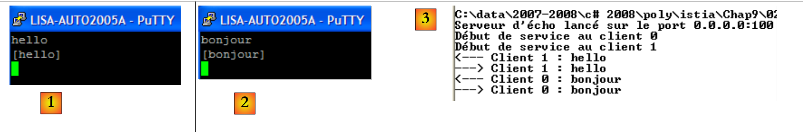
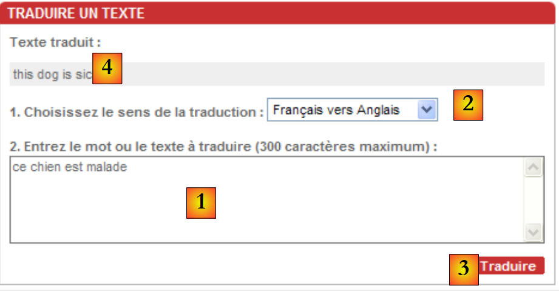
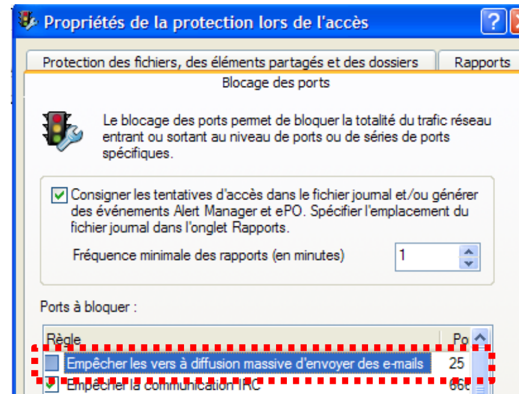
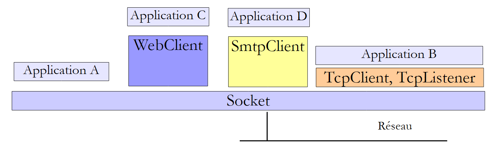
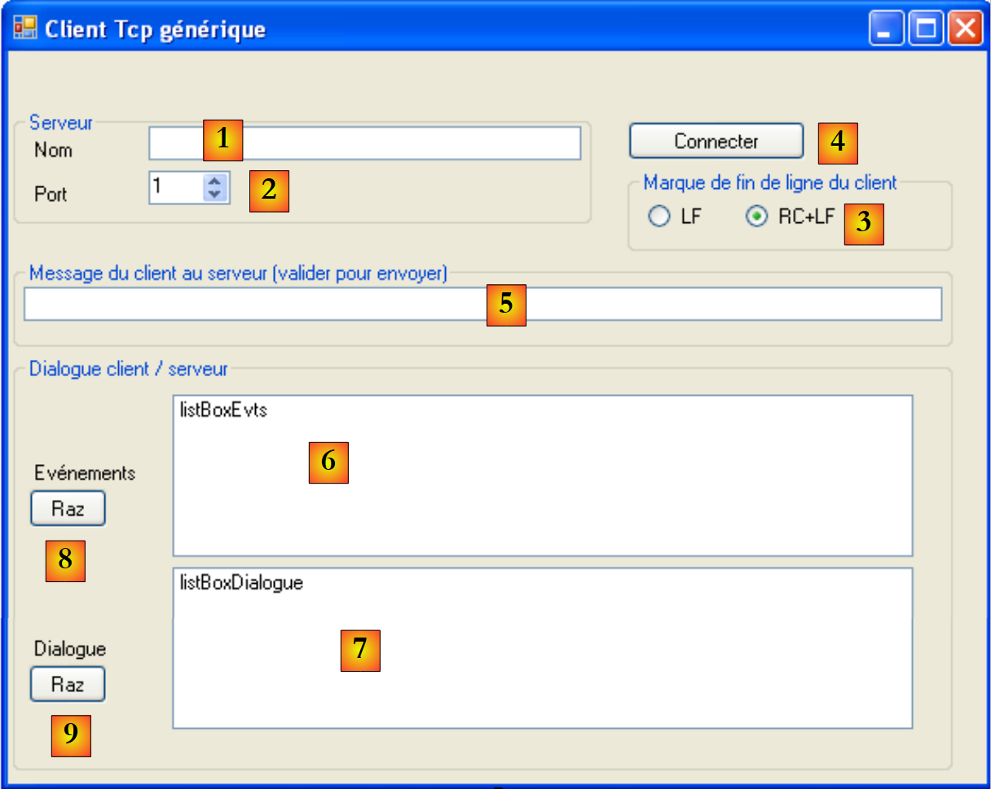
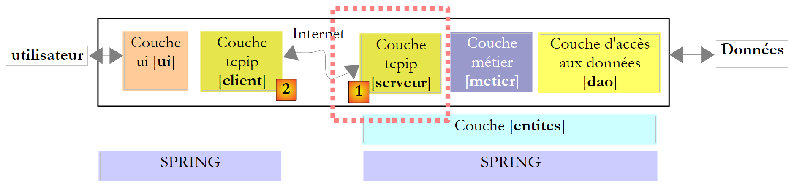
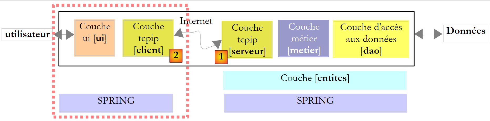

11. Programmierung im Internet
11.1. Allgemeines
11.1.1. Die Internetprotokolle
Wir geben hier eine Einführung in die Internet-Kommunikationsprotokolle, auch bekannt als die Protokollsuite TCP/IP (Transfer Control Protocol / Internet Protocol), benannt nach den beiden Hauptprotokollen. Es kann für den Leser hilfreich sein, ein allgemeines Verständnis davon zu haben, wie Netzwerke funktionieren, und insbesondere von den TCP/IP-Protokollen, bevor er sich mit der Erstellung verteilter Anwendungen befasst. Der folgende Text ist eine Teilübersetzung eines Textes aus dem Dokument „Lan Workplace for Dos – Administrator's Guide“ von NOVELL, einem Dokument aus den frühen 90er Jahren.
Das allgemeine Konzept der Schaffung eines Netzwerks aus heterogenen Computern stammt aus Forschungen der DARPA (Defense Advanced Research Projects Agency) in den USA. Die DARPA entwickelte die als TCP/IP bekannte Protokollsuite, die es heterogenen Rechnern ermöglicht, miteinander zu kommunizieren. Diese Protokolle wurden in einem Netzwerk namens ARPAnet getestet, aus dem später das INTERNET hervorging. Die TCP/IP-Protokolle definieren Sende- und Empfangsformate sowie Regeln, die unabhängig von der Netzwerkorganisation und der verwendeten Hardware sind.
Das von der DARPA entworfene und durch die TCP/IP-Protokolle verwaltete Netzwerk ist ein DARPA-Netzwerk mit Paketvermittlung. Ein solches Netzwerk überträgt Informationen über das Netzwerk in kleinen Einheiten, die als Pakete bezeichnet werden. Wenn also ein Computer eine große Datei überträgt, wird diese in kleinere Teile zerlegt, die über das Netzwerk gesendet und am Zielort wieder zusammengesetzt werden. TCP/IP definiert das Format dieser Pakete, d. h.:
- Paketquelle
- Ziel
- Länge
- Typ
11.1.2. Das OSI-Modell
Die TCP/IP-Protokolle folgen in groben Zügen dem offenen Netzwerkmodell namens OSI (Open Systems Interconnection Reference Model), das von der ISO (International Standards Organization) definiert wurde. Dieses Modell beschreibt ein ideales Netzwerk, in dem die Kommunikation zwischen Rechnern durch ein siebenstufiges Modell dargestellt werden kann:
 |
Jede Schicht erhält Dienste von der darunterliegenden Schicht und stellt ihre eigenen Dienste der darüberliegenden Schicht zur Verfügung. Angenommen, zwei Anwendungen auf verschiedenen Rechnern A und B möchten miteinander kommunizieren: Dies geschieht auf der Anwendungsschicht. Sie müssen nicht alle Details der Funktionsweise des Netzwerks kennen: Jede Anwendung übergibt die Informationen, die sie übertragen möchte, an die darunterliegende Schicht: die Präsentationsschicht. Die Anwendung muss lediglich die Regeln für die Schnittstelle zur Präsentationsschicht kennen.
Sobald die Informationen aus der Präsentation in die Sitzung übertragen wurden und so weiter, gelangen sie schließlich auf das physische Medium und werden physisch an den Zielrechner übertragen. Dort durchlaufen sie den umgekehrten Prozess, den sie auf dem sendenden Rechner durchlaufen haben.
Auf jeder Schicht sendet der für die Übertragung der Informationen zuständige Sendeprozess diese an einen Empfangsprozess auf dem anderen Rechner, der derselben Schicht angehört wie er selbst. Dies geschieht nach bestimmten Regeln, die als Protokollschicht bezeichnet werden. Daraus ergibt sich das folgende endgültige Kommunikationsdiagramm:
 |
Die verschiedenen Schichten haben folgende Aufgaben:
Gewährleistet die Übertragung von Bits über ein physikalisches Medium. Diese Schicht umfasst Datenverarbeitungs-Endgeräte (E.T.T.D.) wie Terminals oder Computer sowie Datenkreis-Abschlussgeräte (E.T.C.D.) wie Modulatoren/Demodulatoren, Multiplexer oder Konzentratoren. Wichtige Aspekte auf dieser Ebene sind:
| |
Verschleiert die physikalischen Eigenschaften der physikalischen Schicht. Erkennt und korrigiert Übertragungsfehler. | |
Verwaltet den Weg, den über das Netzwerk gesendete Informationen nehmen. Dies wird als Routing bezeichnet: Bestimmung der Route, die eine Information nehmen muss, um ihr Ziel zu erreichen. | |
Ermöglicht die Kommunikation zwischen zwei Anwendungen, während frühere Schichten nur die Kommunikation von Maschine zu Maschine zuließen. Ein von dieser Schicht bereitgestellter Dienst ist das Multiplexing: Die Transportschicht kann dieselbe Netzwerkverbindung (von Maschine zu Maschine) nutzen, um Informationen mehrerer Anwendungen zu übertragen. | |
Diese Schicht enthält Dienste, die es einer Anwendung ermöglichen, eine Arbeitssitzung auf einem Remote-Rechner zu eröffnen und aufrechtzuerhalten. | |
Ihr Ziel ist es, die Darstellung von Daten auf verschiedenen Rechnern zu standardisieren. Auf diese Weise werden Daten von Rechner A durch die Präsentationsschicht von Rechner A in ein Standardformat „verpackt“, bevor sie über das Netzwerk gesendet werden. Sobald sie den Präsentationsrechner B erreichen, der sie dank ihres Standardformats erkennt, werden sie auf andere Weise „verpackt“, damit die Anwendung auf Rechner B sie erkennen kann. | |
Auf dieser Ebene finden wir Anwendungen, die im Allgemeinen nah am Benutzer angesiedelt sind, wie E-Mail und Dateiübertragung. |
11.1.3. Das TCP/IP-Modell
Das OSI-Modell ist ein Idealmodell, das bisher noch nie verwirklicht wurde. Die TCP/IP-Protokollsuite nähert sich diesem in folgender Form an:
 |
Physikalische Schicht
Für lokale Netzwerke verwenden wir in der Regel Ethernet oder Token-Ring. Wir stellen hier nur die Ethernet-Technologie vor.
Ethernet
Dies ist die Bezeichnung für eine paketvermittelte LAN-Technologie, die Anfang der 1970er Jahre bei PARC Xerox entwickelt und 1978 von Xerox, Intel und Digital Equipment standardisiert wurde. Das Netzwerk besteht physisch aus einem Koaxialkabel mit einem Durchmesser von etwa 1,27 cm und einer maximalen Länge von 500 m. Es kann mittels Repeatern erweitert werden, wobei zwei Geräte nicht durch mehr als zwei Repeater voneinander getrennt sein dürfen. Das Kabel ist passiv: Alle aktiven Elemente befinden sich in den an das Kabel angeschlossenen Rechnern. Jeder Rechner ist über eine Netzwerkkarte mit dem Kabel verbunden, die Folgendes umfasst:
- einen Sender (Transceiver), der das Vorhandensein von Signalen auf dem Kabel erkennt und analoge Signale in digitale umwandelt und umgekehrt.
- einen Koppler, der digitale Signale vom Sender empfängt und zur Verarbeitung an den Computer weiterleitet oder umgekehrt.
Die Hauptmerkmale der Ethernet-Technologie sind wie folgt:
- 10 Megabit/Sekunde Kapazität.
- Bus-Topologie: Alle Geräte sind an dasselbe Kabel angeschlossen
 |
- Broadcast-Netzwerk – Ein sendender Rechner überträgt Informationen über das Kabel mit der Adresse des Zielrechners. Alle angeschlossenen Rechner empfangen diese Informationen, und nur derjenige, für den sie bestimmt sind, behält sie.
- Das Zugriffsverfahren läuft wie folgt ab: Der Sender, der senden möchte, hört auf das Kabel – er erkennt dann das Vorhandensein oder Fehlen einer Trägerwelle, was bedeuten würde, dass gerade eine Übertragung stattfindet. Dies ist das CSMA-Verfahren (Carrier Sense Multiple Access). Ist keine Trägerwelle vorhanden, kann ein Sender beschließen, nacheinander zu senden . Mehrere Sender können diese Entscheidung treffen. Die übertragenen Signale vermischen sich: Man spricht von einer Kollision. Der Sender erkennt diese Situation: Während er auf dem Kabel sendet, hört er gleichzeitig ab, was tatsächlich darüber läuft. Stellt er fest, dass die auf dem Kabel übertragenen Informationen nicht die sind, die er gesendet hat, schließt er auf eine Kollision und unterbricht die Übertragung. Die anderen Sender verfahren ebenso. Jeder nimmt die Übertragung nach einer zufälligen, vom jeweiligen Sender abhängigen Zeit wieder auf. Diese Technik wird als CD (Collision Detect) bezeichnet. Das Zugriffsverfahren heißt CSMA/CD.
- 48-Bit-Adressierung. Jeder Rechner verfügt über eine Adresse, die als physikalische Adresse bezeichnet wird und auf der Karte vermerkt ist, die ihn mit dem Kabel verbindet. Diese Adresse wird als Ethernet-Adresse des Rechners bezeichnet.
Netzwerkschicht
Diese Schicht umfasst die Protokolle IP, ICMP, ARP und RARP.
Überträgt Pakete zwischen zwei Netzwerkknoten | |
ICMP ermöglicht die Kommunikation zwischen dem IP-Protokollprogramm eines Rechners und dem eines anderen. Es handelt sich somit um ein Protokoll zum Austausch von Nachrichten innerhalb des IP-Protokolls. | |
ordnet Internet-Rechneradressen physikalischen Rechneradressen zu | |
ordnet physische Maschinenadressen Internet-Maschinenadressen zu |
Transport-/Sitzungsschicht
Diese Schicht umfasst die folgenden Protokolle:
Gewährleistet eine zuverlässige Informationsübertragung zwischen zwei Kunden | |
Gewährleistet die unzuverlässige Übermittlung von Informationen zwischen zwei Kunden |
Anwendungs-/Präsentations-/Sitzungsschicht
Hier gibt es verschiedene Protokolle:
Terminalemulator, der es Rechner A ermöglicht, sich als Terminal mit Rechner B zu verbinden | |
ermöglicht die Übertragung von Dateien | |
ermöglicht Dateiübertragungen | |
ermöglicht den Austausch von Nachrichten zwischen Netzwerkbenutzern | |
wandelt einen Rechnernamen in eine Internet-Rechneradresse um | |
wurde von Sun Microsystems entwickelt und legt einen Standard für eine maschinenunabhängige Datendarstellung fest | |
ebenfalls von Sun definiert, ist ein Kommunikationsprotokoll zwischen entfernten Anwendungen, unabhängig von der Transportschicht. Dieses Protokoll ist wichtig: Es entlastet den Programmierer von der Kenntnis der Details der Transportschicht und macht Anwendungen portabel. Dieses Protokoll basiert auf dem XDR-Protokoll | |
ebenfalls von Sun definiert, ermöglicht dieses Protokoll einem Rechner, das Dateisystem eines anderen zu „sehen“. Es basiert auf dem zuvor genannten RPC-Protokoll |
11.1.4. So funktionieren Internetprotokolle
Anwendungen, die in der TCP/IP-Umgebung entwickelt wurden, nutzen in der Regel mehrere Protokolle dieser Umgebung. Ein Anwendungsprogramm kommuniziert mit der obersten Protokollschicht. Diese leitet die Informationen an die darunterliegende Schicht weiter, und so weiter, bis sie das physikalische Medium erreichen. Hier werden die Informationen physikalisch an den Rechner übertragen, wo sie erneut dieselben Schichten durchlaufen, diesmal in umgekehrter Richtung, bis sie die Anwendung erreichen, an die die Informationen gesendet wurden. Das folgende Diagramm zeigt den Informationspfad:
 |
Nehmen wir ein Beispiel: die FTP-Anwendung, die in der Anwendung definiert ist und Dateiübertragungen zwischen Rechnern ermöglicht.
- Die Anwendung übergibt eine zu übertragende Bytefolge an die Transportschicht.
- Die Transportschicht zerlegt diese Bytefolge in TCP-Segmente und fügt jedem Segment am Anfang eine Segmentnummer hinzu. Die Segmente werden an die Netzwerkschicht weitergeleitet, die vom IP-Protokoll gesteuert wird.
- Die IP-Schicht erstellt ein Paket, das das empfangene TCP-Segment kapselt. Am Anfang dieses Pakets fügt sie die Internetadressen des Quell- und des Zielrechners ein. Außerdem ermittelt sie die physikalische Adresse des Zielrechners. All dies wird an die Datenverbindungs- und physikalische Verbindung weitergeleitet, d. h. an die Netzwerkkarte, die den Rechner mit dem physikalischen Netzwerk verbindet.
- Hier wird das IP-Paket wiederum in einen Frame gekapselt und über das Kabel an den Empfänger gesendet.
- Auf dem empfangenden Rechner macht die Datenverbindungs- und physikalische Verbindung das Gegenteil: Sie entkapseln das IP-Paket aus dem physikalischen Frame und leiten es an die IP-Schicht weiter.
- Die IP-Schicht prüft, ob das Paket korrekt ist: Sie berechnet anhand der empfangenen Bits eine Summe (Prüfsumme), die im Paket-Header enthalten sein muss. Ist dies nicht der Fall, wird das Paket verworfen.
- Wird das Paket als korrekt befunden, entkapselt die IP-Schicht das darin enthaltene TCP-Segment und leitet es an die Transportschicht weiter.
- Die Transportschicht – in unserem Beispiel die TCP-Schicht – überprüft die Segmentnummer, um die korrekte Segmentreihenfolge wiederherzustellen.
- Außerdem berechnet sie eine Prüfsumme für das TCP-Segment. Wird diese als korrekt befunden, sendet die TCP-Schicht eine Bestätigung an den Quellrechner, andernfalls wird das TCP-Segment verworfen.
- Nun muss die TCP-Schicht nur noch den Datenteil des Segments an die Zielanwendung in der darüberliegenden Schicht übertragen.
11.1.5. Adressierungsprobleme im Internet
Ein Knoten eines Netzwerks kann ein Computer, ein intelligenter Drucker, ein Dateiserver oder eigentlich alles sein, was über die TCP/IP-Protokolle kommunizieren kann. Jeder Knoten hat eine physikalische Adresse, deren Format vom Netzwerktyp abhängt. In einem Ethernet-Netzwerk ist die physikalische Adresse in 6 Bytes kodiert. Eine X.25-Netzwerkadresse ist eine 14-stellige Zahl.
Die Internetadresse eines Knotens ist eine logische Adresse: Sie ist unabhängig von der verwendeten Hardware und dem verwendeten Netzwerk. Es handelt sich um eine 4-Byte-Adresse, die sowohl ein lokales Netzwerk als auch einen Knoten in diesem Netzwerk identifiziert. Die Internetadresse wird üblicherweise als 4 Zahlen dargestellt, die Werte der 4 Bytes, getrennt durch einen Punkt. Beispielsweise lautet die Adresse des Rechners „Lagaffe“ an der Fakultät für Naturwissenschaften in Angers 193.49.144.1 und die des Rechners „Liny“ 193.49.144.9. Daraus lässt sich ableiten, dass die Internetadresse des lokalen Netzwerks 193.49.144.0 lautet. In diesem Netzwerk können bis zu 254 Knoten vorhanden sein.
Da Internet- oder IP-Adressen netzwerkunabhängig sind, kann ein Rechner im Netzwerk A mit einem Rechner im Netzwerk B kommunizieren, unabhängig davon, um welche Art von Netzwerk es sich handelt: Er muss lediglich dessen IP-Adresse kennen. Das IP-Protokoll in jedem Netzwerk übernimmt die Umwandlung zwischen IP-Adresse und physikalischer Adresse in beide Richtungen.
IP-Adressen müssen alle unterschiedlich sein. In Frankreich ist das INRIA für die Vergabe von IP-Adressen zuständig. Tatsächlich vergibt diese Organisation eine Adresse für Ihr lokales Netzwerk, z. B. 193.49.144.0 für das Netzwerk der Fakultät für Naturwissenschaften in Angers. Der Netzwerkadministrator kann dann die IP-Adressen 193.49.144.1 bis 193.49.144.254 nach eigenem Ermessen vergeben. Diese Adresse wird in der Regel in eine spezielle Datei auf jedem mit dem Netzwerk verbundenen Rechner geschrieben.
11.1.5.1. IP-Adressklassen
Eine IP-Adresse ist eine Folge von 4 Bytes, oft als I1.I2.I3.I4 bezeichnet, die eigentlich zwei Adressen enthält:
- Netzwerkadresse
- die Adresse eines Knotens in diesem Netzwerk
Je nach Größe dieser beiden Felder werden IP-Adressen in drei Klassen unterteilt: Klasse A, B und C.
Klasse A
Die IP-Adresse I1.I2.I3.I4 hat die Form R1.N1.N2.N3, wobei
R1 die Netzwerkadresse
N1.N2.N3 die Adresse eines Rechners in diesem Netzwerk ist
Genauer gesagt hat eine IP-Adresse der Klasse A folgende Form:
Die Netzwerkadresse umfasst 7 Bit und die Knotenadresse 24 Bit. Somit können wir 127 Netzwerke der Klasse A mit jeweils bis zu 2²⁴ Knoten haben.
Klasse B
Hier hat die IP-Adresse I1.I2.I3.I4 die Form R1.R2.N1.N2, wobei
R1.R2 die Netzwerkadresse
N1.N2 die Adresse eines Rechners in diesem Netzwerk ist
Genauer gesagt hat eine IP-Adresse der Klasse B folgende Form:
Die Netzwerkadresse umfasst 2 Byte (genau 14 Bit), ebenso wie die Knotenadresse. Somit können wir 2¹⁴ Netzwerke der Klasse B haben, von denen jedes bis zu 2¹⁶ Knoten umfasst.
Klasse C
In dieser Klasse hat die IP-Adresse I1.I2.I3.I4 die Form R1.R2.R3.N1, wobei
R1.R2.R3 die Netzwerkadresse
N1 die Adresse eines Rechners in diesem Netzwerk ist
Genauer gesagt hat eine IP-Adresse der Klasse C folgende Form:
 |
Die Netzwerkadresse umfasst 3 Bytes (minus 3 Bits) und die Knotenadresse 1 Byte. Somit können wir 2²¹ Netzwerke der Klasse C mit bis zu 256 Knoten haben.
Da die Maschinenadresse Lagaffe der Fakultät für Naturwissenschaften in Angers 193.49.144.1 lautet, sehen wir, dass das höchstwertige Byte 193 ist, d. h. in Binärform 11000001. Das bedeutet, dass es sich um ein Netzwerk der Klasse C handelt.
Reservierte Adressen
- Einige IP-Adressen sind Netzwerkadressen und keine Adressen von Knoten im Netzwerk. Dies sind Adressen, bei denen die Knotenadresse auf 0 gesetzt ist. Beispielsweise ist die Adresse 193.49.144.0 die IP-Adresse des Netzwerks der Faculté des Sciences d'Angers. Folglich kann kein Knoten in einem Netzwerk die Adresse Null haben.
- Wenn die Knotenadresse in einer IP-Adresse nur aus Einsen besteht, handelt es sich um eine Broadcast-Adresse: Diese Adresse bezeichnet alle Netzwerkknoten.
- In einem Netzwerk der Klasse C, das theoretisch 2⁸ = 256 Knoten zulässt, bleiben nach Abzug der beiden verbotenen Adressen 254 zulässige Adressen übrig.
11.1.5.2. Konvertierungsprotokolle Internetadresse <--> Physikalische Adresse
Wir haben gesehen, dass Informationen, wenn sie von einem Rechner zu einem anderen übertragen werden, beim Durchlaufen der IP-Schicht in Pakete gekapselt werden. Diese haben folgende Form:
 |
Das IP-Paket enthält daher die Internetadressen des Quell- und des Zielrechners. Wenn dieses Paket an die Schicht weitergeleitet wird, die für die Übertragung im physikalischen Netzwerk zuständig ist, werden weitere Informationen hinzugefügt, um den physikalischen Frame zu bilden, der schließlich über das Netzwerk gesendet wird. Das Format eines Frames in einem Ethernet-Netzwerk sieht beispielsweise wie folgt aus:
 |
Der endgültige Frame enthält die physikalischen Adressen des Quell- und des Zielrechners. Wie werden diese ermittelt?
Der sendende Rechner, der die IP-Adresse des Rechners kennt, mit dem er kommunizieren möchte, ermittelt dessen physikalische Adresse mithilfe eines speziellen Protokolls namens ARP (Address Resolution Protocol).
- Er sendet eine spezielle Art von Paket, ein sogenanntes ARP-Paket, das die IP-Adresse des Rechners enthält, dessen physikalische Adresse gesucht wird. Dabei hat er darauf geachtet, sowohl seine eigene IP-Adresse als auch seine physikalische Adresse anzugeben.
- Dieses Paket wird an alle Netzwerkknoten gesendet.
- Diese erkennen die Besonderheit des Pakets. Der Knoten, der seine IP-Adresse im Paket erkennt, antwortet, indem er dem Absender des Pakets seine physikalische Adresse sendet. Wie kann er das tun? Er hat die IP- und die physikalische Adresse des Absenders im Paket gefunden.
- Der Absender erhält die physikalische Adresse, nach der er gesucht hat. Er speichert sie im Speicher, damit er sie später verwenden kann, falls er weitere Pakete an denselben Empfänger senden muss.
Die IP-Adresse eines Rechners ist normalerweise in einer seiner Dateien gespeichert, die er abfragen kann, um sie zu ermitteln. Diese Adresse kann durch Bearbeiten der Datei geändert werden. Die physikalische Adresse hingegen ist in einem Speicher auf der Netzwerkkarte gespeichert und kann nicht geändert werden.
Wenn ein Administrator sein Netzwerk anders organisieren möchte, muss er möglicherweise die IP-Adressen aller Knoten ändern und daher die verschiedenen Konfigurationsdateien für die einzelnen Knoten bearbeiten. Dies kann mühsam und fehleranfällig sein, wenn es viele Rechner gibt. Eine Methode besteht darin, den Rechnern keine IP-Adresse zuzuweisen: In die Datei, in der der Rechner seine IP-Adresse finden soll, wird ein spezieller Code geschrieben. Stellt der Rechner fest, dass er keine IP-Adresse hat, fordert er diese über ein Protokoll namens RARP (Reverse Address Resolution Protocol) an. Er sendet dann ein spezielles Paket im Netzwerk, ein sogenanntes RARP-Paket, analog zum oben genannten ARP-Paket, in das er seine physikalische Adresse einfügt. Dieses Paket wird an alle Knoten gesendet, die ein RARP-Paket erkennen. Einer von ihnen, der sogenannte RARP-Server, verfügt über eine Datei, die die physikalische Adresse <--> IP-Adresse aller Knoten enthält. Er antwortet dann dem Absender des RARP-Pakets und sendet dessen IP-Adresse zurück. Ein Administrator, der sein Netzwerk neu konfigurieren möchte, muss lediglich die Zuordnungsdatei des RARP-Servers bearbeiten. Diese sollte normalerweise eine feste IP-Adresse haben, die er herausfinden können sollte, ohne das RARP-Protokoll selbst nutzen zu müssen.
11.1.6. Die IP-Netzwerkschicht des Internets
Das IP-Protokoll (Internet Protocol) definiert die Form, die Pakete annehmen sollen, und wie sie beim Senden oder Empfangen behandelt werden sollen. Diese spezielle Art von Paket wird als IP-Datagramm bezeichnet. Wir haben bereits vorgestellt:
 |
Wichtig ist, dass das IP-Datagramm zusätzlich zu den zu übertragenden Daten die Internetadressen des Absender- und des Empfängerrechners enthält. Auf diese Weise weiß der Empfängerrechner, wer ihm eine Nachricht sendet.
Im Gegensatz zu einem Netzwerkrahmen, dessen Länge durch die physikalischen Eigenschaften des Netzwerks bestimmt wird, über das er übertragen wird, wird die Länge des IP-Datagramms durch die Software festgelegt und ist daher in verschiedenen physikalischen Netzwerken gleich. Wie wir gesehen haben, wird das IP-Datagramm in einen physikalischen Rahmen gekapselt, wenn es von der Netzwerkschicht zur physikalischen Schicht hinabsteigt. Wir haben das Beispiel des physikalischen Rahmens eines Ethernet-Netzwerks angeführt:
Physikalische Frames wandern von Knoten zu Knoten in Richtung ihres Ziels, das sich möglicherweise nicht im selben physikalischen Netzwerk wie der sendende Rechner befindet. Das IP-Paket kann daher an den Knoten, die zwei verschiedene Netzwerktypen verbinden, nacheinander in verschiedene physikalische Frames eingekapselt werden. Es ist auch möglich, dass das IP-Paket zu groß ist, um in einen physikalischen Frame eingekapselt zu werden. Die IP-Software des Knotens, an dem dieses Problem auftritt, zerlegt das IP-Paket dann nach genauen Regeln in Fragmente, von denen jedes über das physikalische Netzwerk gesendet wird. Sie werden erst wieder zusammengesetzt, wenn sie ihr endgültiges Ziel erreichen.
11.1.6.1. Routing
Routing ist die Methode, IP-Pakete an ihren Bestimmungsort weiterzuleiten. Es gibt zwei Methoden: direktes Routing und indirektes Routing.
Direktes Routing
Direktes Routing bezeichnet die Weiterleitung eines IP-Pakets direkt vom Absender zum Empfänger innerhalb desselben Netzwerks:
- Der Rechner, der ein IP-Datagramm sendet, kennt die IP-Adresse des Empfängers.
- Sie ermittelt die physikalische Adresse des Empfängers über das ARP-Protokoll oder aus ihren Tabellen, falls diese Adresse bereits vorliegt.
- Sie sendet das Paket über das Netzwerk an diese physikalische Adresse.
Indirektes Routing
Indirektes Routing bezeichnet das Weiterleiten eines IP-Pakets an ein Ziel in einem anderen Netzwerk als dem, zu dem der Absender gehört. In diesem Fall unterscheiden sich die Netzwerkadressanteile der IP-Adressen des Quell- und des Zielrechners. Der Quellrechner erkennt diesen Umstand. Er sendet das Paket dann an einen speziellen Knoten, den sogenannten Router (Router), der ein lokales Netzwerk mit anderen Netzwerken verbindet und dessen IP-Adresse er in seinen Tabellen findet – eine Adresse, die er ursprünglich entweder aus einer Datei oder aus dem permanenten Speicher oder über im Netzwerk zirkulierende Informationen bezogen hat.
Ein Router ist an zwei Netzwerke angeschlossen und verfügt über eine IP-Adresse innerhalb dieser beiden Netzwerke.
 |
In unserem obigen Beispiel:
. Netzwerk Nr. 1 hat die IP-Adresse 193.49.144.0 und Netzwerk Nr. 2 hat die IP-Adresse 193.49.145.0.
. In Netzwerk Nr. 1 hat der Router die Adresse 193.49.144.6 und in Netzwerk Nr. 2 die Adresse 193.49.145.3.
Die Aufgabe des Routers besteht darin, das empfangene IP-Paket, das in einem für Netzwerk Nr. 1 typischen physikalischen Frame enthalten ist, in einen physikalischen Frame zu packen, der im Netzwerk Nr. 2 zirkulieren kann. Befindet sich die IP-Adresse des Paketempfängers im Netzwerk Nr. 2, sendet der Router das Paket direkt an diesen; andernfalls sendet er es an einen anderen Router, der Netzwerk Nr. 2 mit Netzwerk Nr. 3 verbindet, und so weiter.
11.1.6.2. Fehler- und Steuerungsmeldungen
Ebenfalls in der Netzwerkschicht, auf derselben Ebene wie das IP-Protokoll, befindet sich das ICMP (Internet Control Message Protocol). Es wird verwendet, um Meldungen über die internen Abläufe im Netzwerk zu senden: ausgefallene Knoten, Überlastung an einem Router usw. ICMP-Meldungen werden in IP-Pakete gekapselt und über das Netzwerk gesendet. Die IP-Schichten der verschiedenen Knoten ergreifen entsprechend den empfangenen ICMP-Meldungen geeignete Maßnahmen. Auf diese Weise bekommt eine Anwendung selbst diese netzwerkspezifischen Probleme nie mit.
Ein Knoten nutzt ICMP-Informationen, um seine Routing-Tabellen zu aktualisieren.
11.1.7. Die Transportschicht: UDP- und TCP-Protokolle
11.1.7.1. Das UDP-Protokoll: User Datagram Protocol
Das UDP-Protokoll ermöglicht einen unzuverlässigen Datenaustausch zwischen zwei Punkten, d. h. die korrekte Weiterleitung eines Pakets an seinen Bestimmungsort ist nicht garantiert. Die Anwendung kann dies selbst handhaben, indem sie beispielsweise nach dem Senden einer Nachricht auf eine Empfangsbestätigung wartet, bevor sie die nächste sendet.
Bisher haben wir auf Netzwerkebene von IP-Adressen von Rechnern gesprochen. Auf einem Rechner können verschiedene Prozesse gleichzeitig existieren, und alle können miteinander kommunizieren. Beim Senden einer Nachricht muss man daher nicht nur die IP-Adresse des Zielrechners angeben, sondern auch den „Namen“ des Zielprozesses. Dieser Name ist eigentlich eine Zahl, die als Portnummer bezeichnet wird. Einige Nummern sind für Standardanwendungen reserviert: Port 69 beispielsweise für das TFTP (Trivial File Transfer Protocol).
Pakete, die vom UDP-Protokoll verwaltet werden, werden auch als Datagramme bezeichnet. Sie haben folgende Form:
Diese Datagramme werden in IP-Pakete und anschließend in physikalische Frames gekapselt.
11.1.7.2. Das TCP-Protokoll: Transfer Control Protocol
Für eine sichere Kommunikation reicht das UDP-Protokoll nicht aus: Der Anwendungsentwickler muss ein eigenes Protokoll entwickeln, um die korrekte Weiterleitung der Pakete zu gewährleisten. Das TCP-Protokoll (Transfer Control Protocol) vermeidet diese Probleme. Es weist folgende Merkmale auf:
- Der sendende Prozess baut zunächst eine Verbindung zu dem Prozess auf, der die zu sendenden Informationen empfangen soll. Diese Verbindung wird zwischen einem Port auf dem sendenden Rechner und einem Port auf dem empfangenden Rechner hergestellt. So entsteht ein virtueller Pfad zwischen den beiden Ports, der für die beiden Prozesse reserviert ist, die die Verbindung hergestellt haben.
- Alle vom Quellprozess gesendeten Pakete folgen diesem virtuellen Pfad und kommen in der Reihenfolge an, in der sie gesendet wurden, was beim UDP-Protokoll nicht gewährleistet war, da Pakete unterschiedliche Pfade nehmen konnten.
- Die gesendeten Informationen sind kontinuierlich. Der sendende Prozess sendet Informationen in seinem eigenen Tempo. Diese Informationen werden nicht unbedingt sofort gesendet: Das TCP-Protokoll wartet, bis es über genügend Informationen verfügt, um sie zu senden. Sie werden in einer Struktur namens TCP-Segment gespeichert. Sobald dieses Segment fertiggestellt ist, wird es an die IP-Schicht übertragen, wo es in ein IP-Paket gekapselt wird.
- Jedes vom TCP-Protokoll gesendete Segment wird nummeriert. Das empfangende TCP-Protokoll überprüft, ob es die Segmente in der richtigen Reihenfolge erhalten hat. Für jedes korrekt empfangene Segment sendet es eine Bestätigung an den Absender.
- Wenn dieser die Bestätigung erhält, informiert er den sendenden Prozess. Das bedeutet, dass der sendende Prozess weiß, dass ein Segment sicher angekommen ist, was mit dem UDP-Protokoll nicht möglich war.
- Wenn das TCP-Protokoll, das ein Segment gesendet hat, nach einer bestimmten Zeit keine Bestätigung erhält, sendet es das betreffende Segment erneut und gewährleistet so die Qualität des Datenübertragungsdienstes.
- Die zwischen den beiden kommunizierenden Prozessen hergestellte virtuelle Verbindung ist vollduplexfähig: Das bedeutet, dass Informationen in beide Richtungen fließen können. Auf diese Weise kann der Zielprozess Bestätigungen senden, während der Quellprozess weiterhin Informationen sendet. Dies ermöglicht es beispielsweise dem TCP-Quellprotokoll, mehrere Segmente zu senden, ohne auf eine Bestätigung zu warten. Stellt es nach einer bestimmten Zeit fest, dass es keine Bestätigung für ein bestimmtes Segment n erhalten hat, setzt es die Übertragung des Segments an dieser Stelle fort.
11.1.8. Die Anwendungsschicht
Über den UDP- und TCP-Protokollen gibt es verschiedene Standardprotokolle:
TELNET
Dieses Protokoll ermöglicht es einem Benutzer auf Rechner A im Netzwerk, eine Verbindung zu Rechner B (oft als Host-Rechner bezeichnet) herzustellen. TELNET emuliert ein universelles Terminal auf Rechner A. Der Benutzer verhält sich dann so, als hätte er ein Terminal an Rechner B angeschlossen. Telnet basiert auf dem TCP-Protokoll.
FTP: (File Transfer Protocol)
Dieses Protokoll ermöglicht den Austausch von Dateien zwischen zwei entfernten Rechnern sowie Dateiverarbeitungsvorgänge wie das Anlegen von Verzeichnissen. Es basiert auf dem TCP-Protokoll.
TFTP: (Trivial File Transfer Control)
Dieses Protokoll ist eine Variante von FTP. Es basiert auf dem UDP-Protokoll und ist weniger komplex als FTP.
DNS: (Domain Name System)
Wenn ein Benutzer Dateien mit einem entfernten Rechner austauschen möchte, beispielsweise per FTP, muss er die Internetadresse dieses Rechners kennen. Um beispielsweise eine FTP-Verbindung zum Rechner „Lagaffe“ an der Universität Angers herzustellen, müssten Sie FTP wie folgt ausführen: FTP 193.49.144.1
Dazu wäre eine Zuordnung zwischen Rechnern und IP-Adressen erforderlich. In dieser Zuordnung würden die Rechner wahrscheinlich durch symbolische Namen wie beispielsweise bezeichnet werden:
Rechner DPX2/320 der Universität Angers
Sun-Rechner vom ISERPA in Angers
Es wäre natürlich angenehmer, einen Rechner mit seinem Namen statt mit seiner IP-Adresse anzusprechen. Dann gibt es das Problem der Eindeutigkeit der Namen: Es gibt Millionen miteinander verbundener Rechner. Man könnte sich eine zentrale Stelle vorstellen, die Namen vergibt. Dies wäre zweifellos ziemlich umständlich. Die Verwaltung der Namen wurde daher auf **verschiedene Bereiche** verteilt. Jede Domäne wird von einer sehr kleinen Organisation verwaltet, die ihre eigenen Maschinennamen frei wählen kann. Beispielsweise gehören Maschinen in Frankreich zur Domäne **„en**“, die vom Inria in Paris verwaltet wird. Um die Dinge einfach zu halten , verteilen wir die Kontrolle noch weiter: Innerhalb von **„en“** werden Domänen angelegt. Die Universität Angers gehört zur Domäne **„univ-Angers**“. Die Abteilung, die diese Domäne verwaltet, kann die Rechner im Netzwerk der Université d'Angers frei benennen. Derzeit ist diese Domäne noch nicht unterteilt. An einer großen Universität mit vielen vernetzten Rechnern könnte dies jedoch der Fall sein.
Der Rechner DPX2/320 an der Universität Angers wurde *Lagaffe* genannt, während ein PC 486DX50 den Namen *liny* erhielt. Wie verweist man von außen auf diese Rechner? Indem man die Domänenhierarchie angibt, zu der sie gehören. Der vollständige Name des Rechners Lagaffe lautet beispielsweise:
**Lagaffe.univ-Angers.fr**
Innerhalb von Domänen können relative Namen verwendet werden. So kann der Rechner „Lagaffe“ innerhalb des Feldes **„en“** und außerhalb des Feldes **„univ-Angers**“ wie folgt referenziert werden:
**Lagaffe.univ-Angers**
Schließlich kann innerhalb von *univ-Angers* einfach mit
**Lagaffe**
Eine Anwendung kann somit auf einen Rechner anhand seines Namens verweisen. Letztendlich muss man jedoch immer noch die Internetadresse des Rechners ermitteln. Wie wird dies erreicht? Angenommen, Sie möchten von Rechner A mit Rechner B kommunizieren.
- Wenn Rechner B zur gleichen Domäne gehört wie Rechner A, finden wir seine IP-Adresse wahrscheinlich in einer Datei auf Rechner A.
- Andernfalls findet Rechner A eine Liste einiger Nameserver mit deren IP-Adressen. Ein Nameserver ist dafür zuständig, einen Rechnernamen seiner IP-Adresse zuzuordnen. Rechner A sendet eine spezielle Anfrage an den ersten Nameserver in seiner Liste, eine sogenannte DNS-Anfrage, die den Namen des gesuchten Rechners enthält. Wenn der abgefragte Server diesen Namen in seinen Einträgen hat, sendet er Rechner A die entsprechende IP-Adresse. Ist dies nicht der Fall, findet der Server ebenfalls eine Liste von Nameservern in seinen Dateien, die er an Rechner A weiterleitet, damit dieser sie abfragen kann. Dies wird dann auch geschehen. Auf diese Weise werden mehrere Nameserver abgefragt, jedoch nicht wahllos, sondern so, dass die Anzahl der Abfragen minimiert wird. Wird der Rechner schließlich gefunden, wird die Antwort an Rechner A zurückgesendet.
XDR: (eXternal Data Representation)
Dieses von Sun Microsystems entwickelte Protokoll definiert eine standardisierte, maschinenunabhängige Darstellung von Daten.
RPC: (Remote Procedure Call)
Ebenfalls von Sun definiert, handelt es sich hierbei um ein Kommunikationsprotokoll zwischen entfernten Anwendungen, das unabhängig von der Transportschicht ist. Dieses Protokoll ist wichtig: Es entlastet den Programmierer von der Kenntnis der Details der Transportschicht und macht Anwendungen portabel. Dieses Protokoll basiert auf dem XDR-Protokoll
NFS: Network File System
Ebenfalls von Sun definiert, ermöglicht dieses Protokoll einem Rechner, das Dateisystem eines anderen zu „sehen“. Es basiert auf dem zuvor genannten RPC-Protokoll.
11.1.9. Fazit
In dieser Einführung haben wir einige Grundzüge der Internetprotokolle vorgestellt. Für einen tieferen Einblick in dieses Gebiet lesen Sie das ausgezeichnete Buch von Douglas Comer:
Titel TCP/IP: Architektur, Protokolle, Anwendungen.
Autor Douglas COMER
Verlag InterEditions
11.2. Die .NET-Klassen für die Verwaltung von IP-Adressen
Ein Rechner im Internet wird eindeutig durch eine IP-Adresse (Internet Protocol) definiert, die zwei Formen annehmen kann:
- IPv4: 32-Bit-codiert und dargestellt als Zeichenfolge der Form „I1.I2.I3.I4“, wobei I1 eine Zahl zwischen 1 und 254 ist. Dies sind derzeit die gängigsten IP-Adressen.
- IPv6: 128-Bit-codiert und dargestellt als Zeichenfolge der Form „[I1.I2.I3.I4.I5.I6.I7.I8]“, wobei In eine Zeichenfolge aus 4 Hexadezimalziffern ist. In diesem Dokument werden wir keine IPv6-Adressen verwenden.
Ein Rechner kann auch durch einen ebenso eindeutigen Namen definiert werden. Dieser Name ist nicht zwingend erforderlich, da Anwendungen letztendlich immer die IP-Adressen der Rechner verwenden. Es ist beispielsweise einfacher, die URL http://www.ibm.com über einen Browser aufzurufen als die URL http://129.42.17.99, obwohl beide Methoden möglich sind.
Ein Rechner kann mehrere IP-Adressen haben, wenn er physisch gleichzeitig mit mehreren Netzwerken verbunden ist. Er hat dann in jedem Netzwerk eine IP-Adresse.
Eine IP-Adresse kann in .NET auf zwei Arten dargestellt werden:
- als Zeichenfolge „I1.I2.I3.I4“ oder „[I1.I2.I3.I4.I5.I6.I7.I8]“
- in Form einer IPAddress
Die IPAddress-Klasse
Zu den M Methoden, P Eigenschaften und C Konstanten der IPAddress gehören die folgenden:
P | Adressfamilie IP. Der Typ AddressFamily ist eine Aufzählung. Die beiden gängigsten Werte sind: AddressFamily.InterNetwork: für eine IPv4-Adresse AddressFamily.InterNetworkV6: für eine IPv6-Adresse | |
C | IP-Adresse „0.0.0.0“. Wenn ein Dienst mit dieser Adresse verknüpft ist, bedeutet dies, dass er Clients auf allen IP-Adressen des Rechners akzeptiert, auf dem er ausgeführt wird. | |
C | IP-Adresse „127.0.0.1“. Bekannt als „Loopback-Adresse“. Wenn ein Dienst dieser Adresse zugeordnet ist, bedeutet dies, dass er nur Clients akzeptiert, die sich auf demselben Rechner befinden wie er selbst. | |
C | IP-Adresse „255.255.255.255“. Wenn ein Dienst mit dieser Adresse verknüpft ist, bedeutet dies, dass er keine Clients akzeptiert. | |
M | versucht, die IP-Adresse ipString im Format „I1.I2.I3.I4“ in eine IPAddress-Adresse umzuwandeln. Gibt „true“ zurück, wenn der Vorgang erfolgreich war. | |
M | gibt „true“ zurück, wenn die IP-Adresse „127.0.0.1“ lautet | |
M | gibt die IP-Adresse als „I1.I2.I3.I4“ oder „[I1.I2.I3.I4.I5.I6.I7.I8]“ aus |
Die Zuordnung zwischen IP-Adresse und Computername wird von einem verteilten Internetdienst namens DNS (Domain Name System) bereitgestellt. Die statischen Methoden des DNS stellen die Zuordnung zwischen IP-Adresse und Computername her:
gibt eine IPHostEntry-Adresse zurück, die aus einer IP-Adresse als Zeichenfolge oder aus einem Rechnernamen abgeleitet wird. Löst eine Ausnahme aus, wenn der Rechner nicht gefunden werden kann. | |
gibt eine IPHostEntry-Adresse aus einer IP-Adresse vom Typ IPAddress zurück. Löst eine Ausnahme aus, wenn der Rechner nicht gefunden werden kann. | |
gibt den Namen des Rechners zurück, auf dem das Programm ausgeführt wird, das diese Anweisung ausführt | |
gibt die IP-Adressen des Rechners zurück, der durch seinen Namen oder eine seiner IP-Adressen identifiziert wird. |
Eine Instanz von IPHostEntry kapselt IP-Adressen, Aliase und Rechnernamen. Der Typ IPHostEntry ist wie folgt definiert:
P | Tabelle mit Rechner-IP-Adressen | |
P | die DNS-Aliase des Rechners. Dies sind die Namen, die den verschiedenen IP-Adressen des Rechners entsprechen. | |
P | Haupt-Hostname des Rechners |
Betrachten Sie das folgende Programm, das den Namen des Rechners anzeigt, auf dem es läuft, und anschließend interaktiv die Zuordnungen zwischen IP-Adressen und Rechnernamen bereitstellt:
using System;
using System.Net;
namespace Chap9 {
class Program {
static void Main(string[] args) {
// displays the name of the local machine
// then interactively provides information on network machines
// identified by name or address IP
// local machine
Console.WriteLine("Machine Locale= {0}" ,Dns.GetHostName());
// interactive Q&A
string machine;
IPHostEntry ipHostEntry;
while (true) {
// enter the name or IP address of the machine you are looking for
Console.Write("Machine recherchée (rien pour arrêter) : ");
machine = Console.ReadLine().Trim().ToLower();
// finished?
if (machine == "") return;
// management exception
try {
// machine search
ipHostEntry = Dns.GetHostEntry(machine);
// machine name
Console.WriteLine("Machine : " + ipHostEntry.HostName);
// the machine's IP addresses
Console.Write("Adresses IP : {0}" , ipHostEntry.AddressList[0]);
for (int i = 1; i < ipHostEntry.AddressList.Length; i++) {
Console.Write(", {0}" , ipHostEntry.AddressList[i]);
}
Console.WriteLine();
// machine aliases
if (ipHostEntry.Aliases.Length != 0) {
Console.Write("Alias : {0}" , ipHostEntry.Aliases[0]);
for (int i = 1; i < ipHostEntry.Aliases.Length; i++) {
Console.Write(", {0}" , ipHostEntry.Aliases[i]);
}
Console.WriteLine();
}
} catch {
// the machine doesn't exist
Console.WriteLine("Impossible de trouver la machine [{0}]",machine);
}
}
}
}
}
Die Ausführung liefert folgende Ergebnisse:
11.3. Grundlagen der Programmierung im Internet
11.3.1. Allgemeines
Betrachten wir die Kommunikation zwischen zwei entfernten Rechnern A und B:
 |
Wenn eine Anwendung AppA auf Rechner A mit einer Anwendung AppB auf Rechner B im Internet kommunizieren möchte, muss sie mehrere Dinge wissen:
- die IP-Adresse oder den Rechnernamen von B
- die Portnummer, über die die Anwendung AppB arbeitet. Rechner B kann eine große Anzahl von Anwendungen unterstützen, die im Internet arbeiten. Wenn er Informationen aus dem Netzwerk empfängt, muss er wissen, für welche Anwendung die Informationen bestimmt sind. Die Anwendungen von Rechner B haben über Fenster, auch als Kommunikationsports bekannt, Zugriff auf das Netzwerk. Diese Informationen sind in dem von Rechner B empfangenen Paket enthalten, damit es an die richtige Anwendung weitergeleitet werden kann.
- die von Rechner B verstandenen Kommunikationsprotokolle. In unserer Studie werden wir ausschließlich TCP-IP-Protokolle verwenden.
- das von der Anwendung AppB akzeptierte Dialogprotokoll. Tatsächlich werden die Maschinen A und B miteinander „sprechen“. Was sie sagen, ist in TCP-IP-Protokollen gekapselt. Am Ende der Kette erhält die Anwendung AppB jedoch die von AppA gesendeten Informationen und muss in der Lage sein, diese zu interpretieren. Dies ist vergleichbar mit der Situation, in der zwei Personen, A und B, per Telefon kommunizieren: Ihr Dialog wird über das Telefon übertragen. Die Sprache wird von Telefon A in Form eines Signals codiert, über Telefonleitungen übertragen und kommt bei Telefon B an, um dort decodiert zu werden. Person B hört dann Sprache. Hier kommt der Begriff des Dialogprotokolls ins Spiel: Wenn A Französisch spricht und B die Sprache nicht versteht, können A und B keinen effektiven Dialog führen.
Die beiden kommunizierenden Anwendungen müssen sich daher auf die Art des Dialogs einigen, den sie anwenden werden. So ist beispielsweise der Dialog mit einem FTP-Server nicht derselbe wie mit einem POP-Dienst: Diese beiden Dienste akzeptieren nicht dieselben Befehle. Sie haben ein unterschiedliches Dialogprotokoll.
11.3.2. Merkmale des TCP-Protokolls
Wir werden hier nur die Netzwerkkommunikation unter Verwendung des TCP-Transportprotokolls untersuchen. Erinnern wir uns hier an seine Merkmale:
- Der Prozess, der Daten senden möchte, baut zunächst eine Verbindung zu dem Prozess auf, der die zu sendenden Informationen empfangen soll. Diese Verbindung wird zwischen einem Port auf dem sendenden Rechner und einem Port auf dem empfangenden Rechner hergestellt. So entsteht ein virtueller Pfad zwischen den beiden Ports, der für die beiden Prozesse reserviert ist, die die Verbindung hergestellt haben.
- Alle vom Quellprozess gesendeten Pakete folgen diesem virtuellen Pfad und kommen in der Reihenfolge an, in der sie gesendet wurden
- Die gesendeten Informationen sind fortlaufend. Der sendende Prozess übermittelt Informationen in seinem eigenen Tempo. Diese Informationen werden nicht unbedingt sofort gesendet: Das TCP-Protokoll wartet, bis es über genügend Informationen verfügt, um diese zu senden. Sie werden in einer Struktur namens TCP-Segment gespeichert. Sobald dieses Segment vollständig ist, wird es an die IP-Schicht übertragen, wo es in ein IP-Paket gekapselt wird.
- Jedes vom TCP-Protokoll gesendete Segment ist nummeriert. Das empfangende TCP-Protokoll überprüft, ob es die Segmente in der richtigen Reihenfolge erhalten hat. Für jedes korrekt empfangene Segment sendet es eine Bestätigung an den Absender.
- Wenn dieser die Bestätigung erhält, teilt er dies dem sendenden Prozess mit. So weiß der sendende Prozess, dass ein Segment sicher angekommen ist.
- Wenn das TCP-Protokoll, das ein Segment gesendet hat, nach einer bestimmten Zeit keine Bestätigung erhält, sendet es das betreffende Segment erneut und gewährleistet so die Qualität des Informationsübertragungsdienstes.
- Die zwischen den beiden kommunizierenden Prozessen hergestellte virtuelle Verbindung ist vollduplexfähig: Das bedeutet, dass Informationen in beide Richtungen fließen können. Auf diese Weise kann der Zielprozess Bestätigungen senden, während der Quellprozess weiterhin Informationen sendet. Dies ermöglicht es beispielsweise dem TCP-Quellprotokoll, mehrere Segmente zu senden, ohne auf eine Bestätigung zu warten. Stellt es nach einer bestimmten Zeit fest, dass es für ein bestimmtes Segment, Nr. n, keine Bestätigung erhalten hat, setzt es die Segmentübertragung an dieser Stelle fort.
11.3.3. Die Client-Server-Beziehung
Häufig ist die Kommunikation im Internet asymmetrisch: Rechner A initiiert eine Verbindung, um einen Dienst von Rechner B anzufordern: Er gibt an, dass er eine Verbindung zum SB1-Dienst von Rechner B herstellen möchte. Rechner B akzeptiert oder lehnt ab. Wenn er akzeptiert, kann Rechner A seine Anfragen an den SB1-Dienst senden. Diese müssen dem vom SB1-Dienst verstandenen Dialogprotokoll entsprechen. So wird ein Anfrage-Antwort-Dialog zwischen Rechner A, den wir als Client bezeichnen, und Rechner B, den wir als Server bezeichnen, hergestellt. Einer der beiden Partner wird die Verbindung schließen.
11.3.4. Client-Architektur
Die Architektur eines Netzwerkprogramms, das die Dienste einer Serveranwendung anfordert, sieht wie folgt aus:
ouvrir la connexion avec le service SB1 de la machine B
si réussite alors
tant que ce n'est pas fini
préparer une demande
l'émettre vers la machine B
attendre et récupérer la réponse
la traiter
fin tant que
finsi
fermer la connexion
11.3.5. Serverarchitektur
Die Architektur eines Programms, das Dienste anbietet, sieht wie folgt aus:
ouvrir le service sur la machine locale
tant que le service est ouvert
se mettre à l'écoute des demandes de connexion sur un port dit port d'écoute
lorsqu'il y a une demande, la faire traiter par une autre tâche sur un autre port dit port de service
fin tant que
Das Serverprogramm behandelt die erste Verbindungsanfrage eines Clients anders als dessen nachfolgende Serviceanfragen. Das Programm erbringt den Dienst nicht selbst. Würde es dies tun, würde es während der Dienstleistungsphase nicht mehr auf Verbindungsanfragen warten, und die Kunden würden nicht bedient werden. Es geht daher anders vor: Sobald eine Verbindungsanfrage am Listening-Port empfangen und angenommen wird, erstellt der Server eine Aufgabe, die für die Erbringung des vom Client angeforderten Dienstes zuständig ist. Dieser Dienst wird an einem anderen Port auf dem Serverrechner erbracht, dem sogenannten Service-Port. Das bedeutet, dass Sie mehrere Kunden gleichzeitig bedienen können.
Eine Service-Aufgabe hat die folgende Struktur:
tant que le service n'a pas été rendu totalement
attendre une demande sur le port de service
lorsqu'il y en a une, élaborer la réponse
transmettre la réponse via le port de service
fin tant que
libérer le port de service
11.4. Entdecken Sie die Kommunikationsprotokolle des Internets:
11.4.1. Einführung
Sobald ein Client eine Verbindung zu einem Server hergestellt hat, wird ein Dialog zwischen beiden aufgebaut. Die Art dieses Dialogs bildet das sogenannte Kommunikationsprotokoll des Servers. Zu den gängigsten Internetprotokollen gehören die folgenden:
- HTTP: HyperText Transfer Protocol – das Protokoll für die Kommunikation mit einem Webserver (HTTP-Server)
- SMTP: Simple Mail Transfer Protocol – das Protokoll für die Kommunikation mit einem E-Mail-Server (SMTP-Server)
- POP: Post Office Protocol – das Protokoll für den Dialog mit einem E-Mail-Speicherserver (POP-Server). Der Zweck besteht darin, eingehende E-Mails abzurufen, nicht sie zu versenden.
- FTP: File Transfer Protocol – das Protokoll für die Kommunikation mit einem Dateispeicherserver (FTP-Server).
All diese Protokolle zeichnen sich dadurch aus, dass es sich um zeilenbasierte Protokolle handelt: Client und Server tauschen Textzeilen aus. Wenn wir einen Client haben, der in der Lage ist:
- eine Verbindung zu einem TCP-Server herzustellen
- die vom Server gesendeten Textzeilen auf der Konsole anzuzeigen
- vom Benutzer eingegebene Textzeilen an den Server zu senden
dann können Sie mit einem TCP-Server über ein zeilenbasiertes Protokoll kommunizieren, vorausgesetzt, Sie kennen die Regeln dieses Protokolls.
Das Programm „telnet“, das auf Unix- oder Windows-Rechnern zu finden ist, ist ein solcher Client. Auf Windows-Rechnern gibt es außerdem ein Tool namens „putty“, das wir hier verwenden werden. „putty“ kann unter [http://www.putty.org/] heruntergeladen werden. Es handelt sich um eine direkt ausführbare Datei (.exe). Wir werden es wie folgt konfigurieren:
 |
- [1]: die IP-Adresse des TCP-Servers, mit dem Sie sich verbinden möchten, oder dessen Name
- [2]: TCP-Port des Servers
- [3]: Wählen Sie den Modus „Raw“, der eine Raw-TCP-Verbindung bezeichnet.
- [4]: Wähle den Modus „Never“, um zu verhindern, dass das Putty-Client-Fenster geschlossen wird, wenn der Server die Verbindung trennt.
- [6,7]: Anzahl der Spalten/Zeilen der Konsole
- [5]: maximale Anzahl der im Speicher gespeicherten Zeilen. Ein HTTP-Server kann viele Zeilen senden. Sie müssen in der Lage sein, durch diese zu „scrollen“.
 |
- [8,9]: Um vorherige Einstellungen beizubehalten, benennen Sie die Konfiguration [8] und speichern Sie sie [9].
- [11,12]: Um eine gespeicherte Konfiguration abzurufen, wählen Sie sie aus [11] und laden Sie sie [12].
Nachdem das Tool nun so konfiguriert ist, werfen wir einen Blick auf einige TCP-Protokolle.
11.4.2. Das HTTP-Protokoll (HyperText Transfer Protocol)
Verbinden wir [1] unseren TCP-Client mit dem Webserver auf dem Rechner istia.univ-angers.fr [2], Port 80 [3]:
 |
In PuTTY erstellen wir als Nächstes die HTTP-Verbindung :
- Die Zeilen 1–4 sind die Anfrage des Kunden, die über die Tastatur eingegeben wurde
- Zeilen 5–19 sind die Antwort des Servers
- Zeile 1: Syntax GET UrlDocument HTTP/1.1 – wir fordern die URL / an, d. h. das Stammverzeichnis der Website [istia.univ-angers.fr].
- Zeile 2: Syntax Host: Rechner:Port
- Zeile 3: Syntax Connection: [Verbindungsmodus]. Der Modus [close] weist den Server an, die Verbindung zu schließen, sobald er seine Antwort gesendet hat. Der Modus [Keep-Alive] weist den Server an, die Verbindung offen zu lassen.
- Zeile 4: Leerzeile. Die Zeilen 1–3 werden als HTTP-Header bezeichnet. Es können noch weitere Header vorhanden sein, die hier nicht aufgeführt sind. Das Ende der HTTP-Header wird durch eine Leerzeile markiert.
- Zeilen 5–13: HTTP-Header in der Serverantwort – ebenfalls endend mit einer Leerzeile.
- Zeilen 14–19: das vom Server gesendete Dokument, hier ein HTML-Dokument
- Zeile 5: Syntax des HTTP/1.1-Meldungscodes – der Code 200 zeigt an, dass das angeforderte Dokument gefunden wurde.
- Zeile 6: Datum und Uhrzeit des Servers
- Zeile 7: Software-Identifikation für den Webdienst – hier ein Apache-Server unter Linux/Debian
- Zeile 8: Das Dokument wurde dynamisch von PHP generiert
- Zeile 9: Cookie zur Kundenidentifikation – wenn der Kunde bei seiner nächsten Verbindung wiedererkannt werden möchte, muss er dieses Cookie in seinen HTTP-Headern zurücksenden.
- Zeile 10: gibt an, dass der Server nach der Bereitstellung des angeforderten Dokuments die Verbindung schließen wird
- Zeile 11: Das Dokument wird in Teilen (chunked) und nicht als ein einziger Block übertragen.
- Zeile 12: Art des Dokuments: hier ein HTML-Dokument
- Zeile 13: Die Leerzeile, die das Ende der HTTP-Header des Servers signalisiert
- Zeile 14: Hexadezimalzahl, die die Anzahl der Zeichen im ersten Block des Dokuments angibt. Wenn diese Zahl 0 ist (Zeile 19), weiß der Client, dass er das gesamte Dokument erhalten hat.
- Zeilen 15–18: Teil des empfangenen Dokuments.
Die Verbindung wurde geschlossen und die Putty-Anwendung des Kunden ist inaktiv. Stellen wir die Verbindung wieder her [1] und löschen wir die vorherigen Anzeigen vom Bildschirm [2,3]:
 |
Der Dialog lautet diesmal wie folgt:
- Zeile 1: Ein nicht vorhandenes Dokument wurde angefordert
- Zeile 5: Der Server hat mit dem HTTP-Code 404 geantwortet, was bedeutet, dass das angeforderte Dokument nicht gefunden wurde.
Wenn Sie dieses Dokument mit einem Firefox-Browser aufrufen:

Wenn wir den Quellcode anzeigen lassen [Ansicht/Quellcode]:
Wir erhalten die Zeilen 13–22, die unser Kunde mit Putty empfangen hat. Der Vorteil dabei ist, dass uns auch die HTTP-Header der Antwort angezeigt werden. Es ist auch möglich, diese mit Firefox abzurufen.
11.4.3. Das Protokoll SMTP (Simple Mail Transfer Protocol)
 |
SMTP-Server arbeiten in der Regel auf Port 25 [2]. Wir stellen eine Verbindung zu Server [1] her. Für Ici-Server benötigen Sie in der Regel eine
, das zur gleichen IP-Domäne wie der Rechner gehört, da die meisten SMTP-Server so konfiguriert sind, dass sie nur Anfragen von Rechnern akzeptieren, die zur gleichen Domäne gehören wie sie selbst. Häufig sind Firewalls oder Antivirenprogramme auf privaten Rechnern so konfiguriert, dass sie keine Verbindungen zu Port 25 von einem externen Rechner akzeptieren. Es kann dann erforderlich sein, diese Firewall oder dieses Antivirenprogramm neu zu konfigurieren [3].
Der SMTP-Dialog im Client-Fenster von PuTTY sieht wie folgt aus:
Unten steht (D) für eine Client-Anfrage und (R) für eine Server-Antwort.
- Zeile 1: (R) Server-Begrüßung SMTP
- Zeile 2: (D) Befehl HELO zur Begrüßung
- Zeile 3: (R) Serverantwort
- Zeile 4: (D) Absenderadresse, z. B. E-Mail von: someone@gmail.com
- Zeile 5: (R) Serverantwort
- Zeile 6: (D) Empfängeradresse, z. B. rcpt an: someoneelse@gmail.com
- Zeile 7: (R) Serverantwort
- Zeile 8: (D) markiert den Beginn der Nachricht
- Zeile 9: (R) Serverantwort
- Zeilen 10–12: (D) die zu sendende Nachricht, abgeschlossen durch eine Zeile, die nur einen Punkt enthält.
- Zeile 13: (R) Serverantwort
- Zeile 14: (D) Der Kunde signalisiert, dass er fertig ist
- Zeile 15: (R) Antwort vom Server, der daraufhin die Verbindung schließt
11.4.4. Das POP-Protokoll (Post Office Protocol)
 |
POP-Server arbeiten in der Regel auf Port 110 [2]. Wir stellen eine Verbindung zu Server [1] her. Der POP-Dialog im Client-Fenster von PuTTY sieht wie folgt aus:
- Zeile 1: (R) Begrüßungsmeldung des POP-Servers
- Zeile 2: (D) Der Kunde gibt seine Kennung ein, d. h. den Benutzernamen, mit dem er seine E-Mails abruft
- Zeile 3: (R) Antwort des Servers
- Zeile 4: (D) Passwort des Kunden
- Zeile 5: (R) Antwort des Servers
- Zeile 6: (D) Der Kunde fordert eine Liste seiner Nachrichten an
- Zeilen 7–12: (R) Liste der Nachrichten im Postfach des Kunden, im Format [Nachrichten-Nr. Nachrichtengröße in Byte]
- Zeile 13: (D) Nachricht Nr. 64 wird angefordert
- Zeilen 14–25: (R) Nachricht Nr. 64 mit den Zeilen 15–22 (Nachrichtenkopf) und den Zeilen 23–24 (Nachrichtentext).
- Zeile 26: (D) Der Kunde teilt mit, dass er fertig ist
- Zeile 27: (R) Antwort vom Server, der daraufhin die Verbindung schließt.
11.4.5. Das FTP-Protokoll (File Transfer Protocol)
Das FTP-Protokoll ist komplexer als die oben beschriebenen. Um die zwischen Client und Server ausgetauschten Textzeilen zu ermitteln, können Sie ein Tool wie FileZilla [http://www.filezilla.fr/] verwenden.
 |
FileZilla ist ein FTP-Client, der eine Windows-Oberfläche für Dateiübertragungen bietet. Benutzeraktionen auf der Windows-Oberfläche werden in FTP-Befehle übersetzt, die protokolliert werden [1]. Dies ist eine gute Möglichkeit, die Befehle des FTP-Protokolls zu entdecken.
11.5. Die .NET-Klassen der Internetprogrammierung
11.5.1. Die richtige Klasse auswählen
Das .NET-Framework bietet verschiedene Klassen für die Arbeit mit dem :
 |
- Die Klasse „Socket“ ist diejenige, die am nächsten am Netzwerk arbeitet. Sie ermöglicht eine fein abgestimmte Verwaltung der Netzwerkverbindung. Der Begriff „Socket“ bezieht sich auf eine Steckdose. Der Begriff wurde erweitert, um einen Software-Netzwerk-Socket zu bezeichnen. Bei einer TCP/IP-Kommunikation zwischen zwei Rechnern A und B handelt es sich um zwei Sockets, die miteinander kommunizieren. Eine Anwendung kann direkt mit Sockets arbeiten. Dies ist bei der oben genannten Anwendung A der Fall. Ein Socket kann ein Client oder ein Server sein.
- Wenn Sie auf einer niedrigeren Ebene als der der Klasse Socket arbeiten möchten, können Sie die
- TcpClient verwenden, um einen Tcp-Client
- TcpListener verwenden, um einen Tcp-Server zu erstellen
Diese beiden Klassen bieten der Anwendung, die sie nutzt, eine vereinfachte Sicht auf die Netzwerkkommunikation und übernehmen für sie die technischen Details der Socket-Verwaltung.
- .NET bietet spezifische Klassen für bestimmte Protokolle:
- die Klasse SmtpClient zur Verwaltung des SMTP-Protokolls für die Kommunikation mit einem SMTP-Server zum Versenden von E-Mails
- die Klasse WebClient zur Verwaltung von HTTP- oder FTP-Protokollen für die Kommunikation mit einem Webserver.
Die Socket-Klasse allein reicht aus, um die gesamte TCP/IP-Kommunikation zu handhaben, aber wir konzentrieren uns auf die Verwendung der übergeordneten Klassen, um das Schreiben der TCP/IP-Anwendung zu vereinfachen.
11.5.2. Die Klasse TcpClient
Die Klasse TcpClient eignet sich am besten zum Erstellen des Clients eines TCP-Dienstes. Zu ihren C-Konstruktoren, M-Methoden und P-Eigenschaften gehören die folgenden:
C | erstellt eine TCP-Verbindung mit dem Dienst, der auf dem angegebenen Port (port) des angegebenen Rechners (hostname) läuft. Zum Beispiel new TcpClient("istia.univ-angers.fr",80), um eine Verbindung zum Port 80 des Rechners istia.univ-angers.fr herzustellen | |
P | Der vom Client zur Kommunikation mit dem Server verwendete Socket. | |
M | Ruft einen Lese-/Schreib-Stream zum Server ab. Dieser Stream ermöglicht den Austausch zwischen Client und Server. | |
M | schließt die Verbindung. Socket und Flow NetworkStream werden ebenfalls geschlossen | |
P | true, wenn die Verbindung hergestellt wurde |
Die Klasse NetworkStream repräsentiert den Netzwerkfluss zwischen Client und Server. Sie ist von der Klasse Stream abgeleitet. Viele Client-Server-Anwendungen tauschen Textzeilen aus, die durch die Zeilenendezeichen „\r\n“ beendet werden. Daher ist es sinnvoll, StreamReader und StreamWriter zu verwenden, um diese Zeilen im Netzwerkstrom zu lesen und zu schreiben. Wenn also ein Rechner M1 über ein TcpClient-Objekt customer1 eine Verbindung zu einem Rechner M2 hergestellt hat und beide Textzeilen austauschen, kann er seine Lese- und Schreibströme wie folgt erstellen:
StreamReader in1=new StreamReader(client1.GetStream());
StreamWriter out1=new StreamWriter(client1.GetStream());
out1.AutoFlush=true;
Anleitung
bedeutet, dass customer1 keinen Zwischenpuffer durchläuft, sondern direkt ins Netzwerk gelangt. Dies ist ein wichtiger Punkt. Im Allgemeinen erwartet customer1 eine Antwort, wenn er eine Textzeile an seinen Partner sendet. Die Antwort wird niemals eintreffen, wenn die Zeile tatsächlich auf Rechner M1 gepuffert und nie an Rechner M2 gesendet wurde.
Um eine Textzeile an Rechner M2 zu senden, schreiben Sie:
Um die Antwort von M2 zu lesen, schreiben Sie:
Wir verfügen nun über die Elemente, um die grundlegende Architektur eines Internet-Clients mit dem folgenden grundlegenden Kommunikationsprotokoll zum Server zu schreiben:
- Der Client sendet eine Anfrage, die in einer einzigen Zeile enthalten ist
- Der Server sendet eine Antwort, die in einer einzigen Zeile enthalten ist
using System;
using System.IO;
using System.Net.Sockets;
namespace ... {
class ... {
static void Main(string[] args) {
...
try {
// connect to the service
using (TcpClient tcpClient = new TcpClient(serveur, port)) {
using (NetworkStream networkStream = tcpClient.GetStream()) {
using (StreamReader reader = new StreamReader(networkStream)) {
using (StreamWriter writer = new StreamWriter(networkStream)) {
// unbuffered output stream
writer.AutoFlush = true;
// request-response loop
while (true) {
// demand comes from the keyboard
Console.Write("Demande (bye pour arrêter) : ");
demande = Console.ReadLine();
// finished?
if (demande.Trim().ToLower() == "bye")
break;
// send the request to the server
writer.WriteLine(demande);
// we read the server response
réponse = reader.ReadLine();
// the answer is processed
...
}
}
}
}
}
} catch (Exception e) {
// error
...
}
}
}
}
- Zeile 11: Kundenanmeldung erstellen – Die „using“-Klausel stellt sicher, dass die zugehörigen Ressourcen freigegeben werden, wenn „using“ verwendet wird.
- Zeile 12: Öffnen des Netzwerkflusses in einer „using“-Klausel
- Zeile 13: Erstellung und Betrieb des Leseflusses in einer „using“-Klausel
- Zeile 14: Erstellung und Betrieb des Schreibflusses in einer „using“-Klausel
- Zeile 16: Den Ausgabestrom nicht puffern
- Zeilen 18–31: Der Zyklus aus Client-Anfrage und Server-Antwort
- Zeile 26: Der Client sendet seine Anfrage an den Server
- Zeile 28: Der Client wartet auf die Antwort des Servers. Dies ist eine blockierende Operation, ähnlich wie das Lesen von der Tastatur. Das Warten endet mit dem Eintreffen einer durch „\n“ begrenzten Zeichenkette oder durch das Ende des Flusses. Letzteres tritt ein, wenn der Server die mit dem Client geöffnete Verbindung schließt.
11.5.3. Die Klasse TcpListener
Die Klasse TcpListener ist die am besten geeignete Klasse zum Erstellen eines TCP-Dienstes. Zu ihren C-Konstruktoren, M-Methoden und P-Eigenschaften gehören die folgenden:
C | erstellt einen TCP-Dienst, der auf einem als Parameter übergebenen Port (port), dem sogenannten Listening-Port, auf Client-Anfragen wartet (listen). Wenn der Rechner mit mehreren IP-Netzwerken verbunden ist, hört der Dienst in jedem Netzwerk. | |
C | dito, das Abhören erfolgt jedoch nur auf der angegebenen IP-Adresse. | |
M | hört auf Kundenanfragen | |
M | akzeptiert die Anfrage eines Clients. Anschließend wird eine neue Verbindung mit dem Client hergestellt, die als Serviceverbindung bezeichnet wird. Der auf der Serverseite verwendete Port wird vom System zufällig ausgewählt. Er wird als Serviceport bezeichnet. AcceptTcpClient führt zu dem Objekt TcpClient, das der Serviceverbindung auf der Serverseite zugeordnet ist. | |
M | beendet das Abhören von Client-Anfragen | |
P | der Listening-Socket des Servers |
Die Grundstruktur eines TCP-Servers, der Daten mit seinen Clients über das folgende Protokoll austauscht:
- Der Client sendet eine in einer einzigen Zeile enthaltene Anfrage
- Der Server sendet eine Antwort, die in einer einzigen Zeile enthalten ist
könnte etwa so aussehen:
using System;
using System.IO;
using System.Net.Sockets;
using System.Threading;
using System.Net;
namespace ... {
public class ... {
...
// we create the listening service
TcpListener ecoute = null;
try {
// create the service - it will listen on all the machine's network interfaces
ecoute = new TcpListener(IPAddress.Any, port);
// launch it
ecoute.Start();
// service loop
TcpClient tcpClient = null;
// infinite loop - will be stopped by Ctrl-C
while (true) {
// waiting for a customer
tcpClient = ecoute.AcceptTcpClient();
// the service is provided by another task
ThreadPool.QueueUserWorkItem(Service, tcpClient);
// next customer
}
} catch (Exception ex) {
// on signale l'erreur
...
} finally {
// end of service
ecoute.Stop();
}
}
// -------------------------------------------------------
// provides service to a customer
public static void Service(Object infos) {
// the customer is picked up and served
Client client = infos as Client;
// operation link TcpClient
try {
using (TcpClient tcpClient = client.CanalTcp) {
using (NetworkStream networkStream = tcpClient.GetStream()) {
using (StreamReader reader = new StreamReader(networkStream)) {
using (StreamWriter writer = new StreamWriter(networkStream)) {
// unbuffered output stream
writer.AutoFlush = true;
// loop read request/write response
bool fini=false;
while (! fini) != null) {
// waiting for customer request - blocking operation
demande=reader.ReadLine();
// response preparation
réponse=...;
// reply to customer
writer.WriteLine(réponse);
// next request
}
}
}
}
}
} catch (Exception e) {
// error
...
} finally {
// end customer
...
}
}
}
}
- Zeile 14: Der Listening-Dienst wird für einen bestimmten Port und eine bestimmte IP-Adresse erstellt. Beachten Sie hier, dass ein Rechner mindestens zwei IP-Adressen hat: die Adresse „127.0.0.1“, die seine Loopback-Adresse auf sich selbst ist, und die Adresse „I1.I2.I3.I4“, die er in dem Netzwerk hat, mit dem er verbunden ist. Er kann weitere IP-Adressen haben, wenn er mit mehreren IP-Netzwerken verbunden ist. IPAddress.Any bezeichnet alle IP-Adressen eines Rechners.
- Zeile 16: Der Listening-Dienst wird gestartet. Zuvor war er bereits erstellt worden, hörte aber noch nicht auf Anfragen. Listening bedeutet, auf Kundenanfragen zu warten.
- Zeilen 20–26: Die Schleife aus Warten auf Kundenanfragen und Kundenbedienung wiederholt sich für jeden neuen Kunden
- Zeile 22: Die Anfrage eines Kunden wird angenommen. Die Funktion `AcceptTcpClient` erstellt eine Instanz des Dienst-TcpClient:
- Der Kunde hat seine Anfrage mit seiner eigenen TcpClient-Instanz auf Kundenseite gestellt, die wir TcpClientDemande nennen
- Der Server akzeptiert diese Anfrage mit AcceptTcpClient. Diese Methode erstellt eine Instanz von TcpClient auf der Serverseite, die wir TcpClientService nennen. Wir haben nun eine offene TCP-Verbindung mit Instanzen an beiden Enden: TcpClientDemande <--> TcpClientService.
- Die nachfolgende Client-Server-Kommunikation findet über diese Verbindung statt. Der Listening-Dienst ist nicht mehr beteiligt.
- Zeile 24: Damit der Server mehrere Clients gleichzeitig bedienen kann, wird der Dienst von Threads bereitgestellt, 1 Thread pro Client.
- Zeile 32: Listening-Dienst geschlossen
- Zeile 38: Die vom Client-Service-Thread ausgeführte Methode. Sie empfängt die Instanz TcpClient, die bereits mit dem zu bedienenden Kunden verbunden ist.
- Zeilen 38–71: Code ähnlich dem des oben behandelten einfachen TCP-Clients.
11.6. Beispiele für TCP-Clients/Server
11.6.1. Ein Echo-Server
Wir schlagen vor, einen Echo-Server zu schreiben, der über ein DOS-Fenster mit dem Befehl gestartet wird:
ServeurEcho port
Der Server läuft auf dem als Parameter übergebenen Port. Er sendet die Anfrage einfach an den Client zurück. Das Programm sieht wie folgt aus:
using System;
using System.IO;
using System.Net.Sockets;
using System.Threading;
using System.Net;
// call: serveurEcho port
// echo server
// returns the line sent to the customer
namespace Chap9 {
public class ServeurEcho {
public const string syntaxe = "Syntaxe : [serveurEcho] port";
// main program
public static void Main(string[] args) {
// is there an argument?
if (args.Length != 1) {
Console.WriteLine(syntaxe);
return;
}
// this argument must be integer >0
int port = 0;
if (!int.TryParse(args[0], out port) || port<=0) {
Console.WriteLine("{0} : {1}Port incorrect", syntaxe, Environment.NewLine);
return;
}
// we create the listening service
TcpListener ecoute = null;
int numClient = 0; // next customer no
try {
// create the service - it will listen on all the machine's network interfaces
ecoute = new TcpListener(IPAddress.Any, port);
// launch it
ecoute.Start();
// follow-up
Console.WriteLine("Serveur d'écho lancé sur le port {0}", ecoute.LocalEndpoint);
// service threads
ThreadPool.SetMinThreads(10, 10);
ThreadPool.SetMaxThreads(10, 10);
// service loop
TcpClient tcpClient = null;
// infinite loop - will be stopped by Ctrl-C
while (true) {
// waiting for a customer
tcpClient = ecoute.AcceptTcpClient();
// the service is provided by another task
ThreadPool.QueueUserWorkItem(Service, new Client() { CanalTcp = tcpClient, NumClient = numClient });
// next customer
numClient++;
}
} catch (Exception ex) {
// on signale l'erreur
Console.WriteLine("L'erreur suivante s'est produite sur le serveur : {0}", ex.Message);
} finally {
// end of service
ecoute.Stop();
}
}
// -------------------------------------------------------
// provides service to an echo server client
public static void Service(Object infos) {
// the customer is picked up and served
Client client = infos as Client;
// renders service to the customer
Console.WriteLine("Début de service au client {0}", client.NumClient);
// operation link TcpClient
try {
using (TcpClient tcpClient = client.CanalTcp) {
using (NetworkStream networkStream = tcpClient.GetStream()) {
using (StreamReader reader = new StreamReader(networkStream)) {
using (StreamWriter writer = new StreamWriter(networkStream)) {
// unbuffered output stream
writer.AutoFlush = true;
// loop read request/write response
string demande = null;
while ((demande = reader.ReadLine()) != null) {
// console monitoring
Console.WriteLine("<--- Client {0} : {1}", client.NumClient, demande);
// echo from demand to customer
writer.WriteLine("[{0}]", demande);
// console monitoring
Console.WriteLine("---> Client {0} : {1}", client.NumClient, demande);
// service stops when customer sends "bye
if (demande.Trim().ToLower() == "bye")
break;
}
}
}
}
}
} catch (Exception e) {
// error
Console.WriteLine("L'erreur suivante s'est produite lors du service au client {0} : {1}", client.NumClient, e.Message);
} finally {
// end customer
Console.WriteLine("Fin du service au client {0}", client.NumClient);
}
}
}
// customer info
internal class Client {
public TcpClient CanalTcp { get; se t; } // customer liaison
public int NumClient { get; se t; } // customer no
}
}
Die Struktur des Echo-Servers entspricht der oben beschriebenen grundlegenden TCP-Serverarchitektur. Wir werden nur auf den Teil „Kundenservice“ eingehen:
- Zeile 79: Die Anfrage des Kunden wird ausgelesen
- Zeile 83: Sie wird in eckigen Klammern an den Kunden zurückgegeben
- Zeile 79: Der Dienst wird beendet, wenn der Client die Verbindung schließt
In einem DOS-Fenster verwenden wir die ausführbare Datei des C#-Projekts:
Anschließend starten wir zwei Putty-Clients, die wir mit dem Port 100 des lokalen Hosts des Rechners verbinden:
 |
Die Anzeige der Echo-Server-Konsole ändert sich zu:
Client 1 und anschließend Client 0 senden die folgenden Texte:
 |
- [1]: Kunde Nr. 1
- [2]: Kunde Nr. 0
- [3]: die Echo-Server-Konsole
 |
- in [4]: Client 1 trennt die Verbindung mit dem Befehl „bye“.
- in [5]: Der Server erkennt dies
Der Server kann durch Drücken von Strg-C gestoppt werden. Client 0 erkennt dies dann [6].
11.6.2. Ein Client für den Echo-Server
Wir schreiben nun einen Client für den vorherigen Server. Er wird wie folgt aufgerufen:
ClientEcho nomServeur port
Er verbindet sich mit dem Rechner nomServeur auf dem Port port und sendet dann Textzeilen an den Server, der diese zurückgibt.
using System;
using System.IO;
using System.Net.Sockets;
namespace Chap9 {
// connects to an echo server
// any line typed on the keyboard is received as an echo
class ClientEcho {
static void Main(string[] args) {
// syntax
const string syntaxe = "pg machine port";
// number of arguments
if (args.Length != 2) {
Console.WriteLine(syntaxe);
return;
}
// note the server name
string serveur = args[0];
// port must be integer >0
int port = 0;
if (!int.TryParse(args[1], out port) || port <= 0) {
Console.WriteLine("{0}{1}port incorrect", syntaxe, Environment.NewLine);
return;
}
// on peut travailler
string demande = nu ll; // customer request
string réponse = nu ll; // server response
try {
// connect to the service
using (TcpClient tcpClient = new TcpClient(serveur, port)) {
using (NetworkStream networkStream = tcpClient.GetStream()) {
using (StreamReader reader = new StreamReader(networkStream)) {
using (StreamWriter writer = new StreamWriter(networkStream)) {
// unbuffered output stream
writer.AutoFlush = true;
// request-response loop
while (true) {
// demand comes from the keyboard
Console.Write("Demande (bye pour arrêter) : ");
demande = Console.ReadLine();
// finished?
if (demande.Trim().ToLower() == "bye")
break;
// send the request to the server
writer.WriteLine(demande);
// we read the server response
réponse = reader.ReadLine();
// the answer is processed
Console.WriteLine("Réponse : {0}", réponse);
}
}
}
}
}
} catch (Exception e) {
// error
Console.WriteLine("L'erreur suivante s'est produite : {0}", e.Message);
}
}
}
}
Die Struktur dieses Clients entspricht der für TCP vorgeschlagenen grundlegenden allgemeinen Architektur. Hier sind die mit der folgenden Konfiguration erzielten Ergebnisse:
- Der Server wird auf Port 100 in einem DOS-Fenster gestartet
- auf demselben Rechner werden zwei Clients in zwei verschiedenen DOS-Fenstern gestartet
Das Fenster für Client A (Nr. 0) zeigt folgende Informationen an:
Bei Kunde B (Nr. 1):
Auf dem Server:
Kunde A Nr. 0 trennt die Verbindung:
Die Serverkonsole:
11.6.3. Ein generischer TCP-Client
Wir werden einen generischen TCP-Client schreiben, der wie folgt gestartet wird: ClientTcpGenerique Server-Port. Er funktioniert ähnlich wie der PuTTY-Client, verfügt jedoch über eine Konsolenoberfläche und keine Konfigurationsoptionen.
In der vorherigen Anwendung war das Dialogprotokoll bekannt: Der Client sendete eine einzelne Zeile und der Server antwortete mit einer einzelnen Zeile. Jeder Dienst hat sein eigenes spezifisches Protokoll, und es können auch folgende Situationen auftreten:
- Der Client muss mehrere Textzeilen senden, bevor er eine Antwort erhält
- eine Serverantwort kann mehrere Textzeilen umfassen
Daher ist der Zyklus, eine einzelne Zeile an den Server zu senden und eine einzelne Zeile vom Server zu empfangen, nicht immer geeignet. Um Protokolle zu verarbeiten, die komplexer sind als das Echo-Protokoll, verfügt der generische TCP-Client über zwei Threads:
- Der Haupt-Thread liest die über die Tastatur eingegebenen Textzeilen und sendet sie an den Server.
- Ein sekundärer Thread arbeitet parallel dazu und liest die vom Server gesendeten Textzeilen. Sobald er eine erhält, zeigt er sie auf der Konsole an. Der Thread stoppt erst, wenn der Server die Verbindung schließt. Er arbeitet daher kontinuierlich.
Der Code lautet wie folgt:
using System;
using System.IO;
using System.Net.Sockets;
using System.Threading;
namespace Chap9 {
// receives the characteristics of a service as a parameter in the form: server port
// connects to the service
// sends each line typed on the keyboard to the server
// creates a thread to continuously read text lines sent by the server
class ClientTcpGenerique {
static void Main(string[] args) {
// syntax
const string syntaxe = "pg serveur port";
// number of arguments
if (args.Length != 2) {
Console.WriteLine(syntaxe);
return;
}
// note the server name
string serveur = args[0];
// port must be integer >0
int port = 0;
if (!int.TryParse(args[1], out port) || port <= 0) {
Console.WriteLine("{0}{1}port incorrect", syntaxe, Environment.NewLine);
return;
}
// connect to the service
TcpClient tcpClient = null;
try {
tcpClient = new TcpClient(serveur, port);
} catch (Exception ex) {
// error
Console.WriteLine("Impossible de se connecter au service ({0},{1}) : erreur {2}", serveur, port, ex.Message);
// end
return;
}
// launch a separate thread to read the text lines sent by the server
ThreadPool.QueueUserWorkItem(Receive, tcpClient);
// keyboard commands are read in the main thread
Console.WriteLine("Tapez vos commandes (bye pour arrêter) : ");
string demande = nu ll; // customer request
try {
// operate the customer connection
using (tcpClient) {
// create a write stream to the server
using (NetworkStream networkStream = tcpClient.GetStream()) {
using (StreamWriter writer = new StreamWriter(networkStream)) {
// unbuffered output stream
writer.AutoFlush = true;
// request-response loop
while (true) {
demande = Console.ReadLine();
// finished?
if (demande.Trim().ToLower() == "bye")
break;
// send the request to the server
writer.WriteLine(demande);
}
}
}
}
} catch (Exception e) {
// error
Console.WriteLine("L'erreur suivante s'est produite dans le thread principal : {0}", e.Message);
}
}
// client read thread <-- server
public static void Receive(object infos) {
// local data
string réponse = nu ll; // server response
// input flow creation
try {
using (TcpClient tcpClient = infos as TcpClient) {
using (NetworkStream networkStream = tcpClient.GetStream()) {
using (StreamReader reader = new StreamReader(networkStream)) {
// loop continuous reading of text lines in the input stream
while ((réponse = reader.ReadLine()) != null) {
// console display
Console.WriteLine("<-- {0}", réponse);
}
}
}
}
} catch (Exception ex) {
// error
Console.WriteLine("Flux de lecture : l'erreur suivante s'est produite : {0}", ex.Message);
} finally {
// signals the end of the read thread
Console.WriteLine("Fin du thread de lecture des réponses du serveur. Si besoin est, arrêtez le thread de lecture console avec la commande bye.");
}
}
}
}
- Zeile 34: Der Client verbindet sich mit dem Server
- Zeile 43: Ein Thread wird gestartet, um Textzeilen vom Server zu lesen. Er muss die Funktion „Receive“ in Zeile 73 ausführen. Wir übergeben die Instanz „TcpClient“, die mit dem Server verbunden wurde.
- Zeilen 57–64: Schleife für die Eingabe von Tastaturbefehlen und das Senden von Befehlen an den Server. Die Eingabe von Tastaturbefehlen wird vom Hauptthread verarbeitet.
- Zeilen 75–98: Die Methode „Receive“, die vom Thread zum Lesen der Textzeilen ausgeführt wird. Diese Methode erhält die Instanz „TcpClient“, die mit dem Server verbunden wurde.
- Zeilen 84–87: Die Endlosschleife zum Lesen der vom Server gesendeten Textzeilen. Sie wird erst beendet, wenn der Server die offene Verbindung zum Client schließt.
Hier sind einige Beispiele, die auf denen basieren, die in Abschnitt 11.4 mit dem Kunden-Putty verwendet wurden. Der Client wird in einer DOS-Konsole ausgeführt.
Protokoll HTTP
Der Leser wird gebeten, die Erläuterungen in Abschnitt 11.4.2 noch einmal durchzulesen. Wir gehen hier nur auf die für die Anwendung spezifischen Aspekte ein:
- Zeile 28: Nach dem Senden von Zeile 27 hat der HTTP-Server die Verbindung geschlossen und damit den Lese-Thread beendet. Der Haupt-Thread, der Tastaturbefehle liest, ist weiterhin aktiv. Der in Zeile 29 über die Tastatur eingegebene Befehl beendet ihn.
Protokoll SMTP
Der Leser wird gebeten, die Erläuterungen in Abschnitt 11.4.3 noch einmal durchzulesen und weitere Beispiele zu testen, die mit dem Kunden-Putty verwendet werden.
11.6.4. Ein -Server Tcp generic
Wir interessieren uns nun für einen Server
- , der die von seinen Kunden gesendeten Befehle auf dem Bildschirm anzeigt
- und ihnen die von einem Benutzer eingegebenen Textzeilen sendet. Der Benutzer fungiert als Server.
Das Programm wird in einem DOS-Fenster mit dem Befehl „ServeurTcpGenerique portEcoute“ gestartet, wobei „portEcoute“ der Port ist, über den sich Clients verbinden sollen. Der Dienst für den Client wird von zwei Threads bereitgestellt:
- dem Haupt-Thread, der
- die Kunden nacheinander und nicht parallel verarbeitet.
- der die vom Benutzer eingegebenen Zeilen liest und an den Client sendet. Der Benutzer sendet den Befehl „bye“, wodurch die Verbindung zum Client geschlossen wird. Da die Konsole nicht für zwei Clients gleichzeitig genutzt werden kann, bedient unser Server jeweils nur einen Client.
- ein sekundärer Thread, der ausschließlich dem Lesen der vom Client gesendeten Textzeilen gewidmet ist
Der Server läuft ununterbrochen, es sei denn, der Benutzer drückt Strg-C auf der Tastatur.
Sehen wir uns einige Beispiele an. Der Server wird auf Port 100 gestartet, und wir verwenden den generischen Client aus Abschnitt 11.6.3, um mit ihm zu kommunizieren. Das Fenster des Clients sieht wie folgt aus:
Zeilen, die mit <-- beginnen, stammen vom Server an den Client, die anderen vom Client an den Server. Das Serverfenster sieht wie folgt aus:
Zeilen, die mit <-- beginnen, sind vom Client an den Server gesendet, die anderen vom Server an den Client. Zeile 9 zeigt an, dass der Thread zum Lesen der Client-Anfragen beendet wurde. Der Haupt-Server-Thread befindet sich weiterhin im Status „ “ und wartet darauf, dass Tastaturbefehle an den Client gesendet werden. Geben Sie dazu den Befehl „bye“ aus Zeile 10 ein, um zum nächsten Client zu wechseln. Der Server ist weiterhin aktiv, während Client 1 beendet ist. Wir starten einen zweiten Client für denselben Server:
Das Serverfenster sieht dann wie folgt aus:
Nach Zeile 6 oben wartet der Server auf einen neuen Client. Er kann durch Drücken von Strg-C gestoppt werden.
Simulieren wir nun einen Webserver, indem wir unseren generischen Server auf Port 88 starten:
Öffnen wir einen Browser und rufen wir die URL http://localhost:88/exemple.html auf. Der Browser stellt dann eine Verbindung zum Port 88 des Rechners „localhost“ her und fordert die Seite /exemple.html an:
 |
Werfen wir einen Blick auf unser Serverfenster:
Wir ermitteln die vom Browser gesendeten HTTP-Header. So können wir weitere HTTP-Header identifizieren, die über die bereits bekannten hinausgehen. Erstellen wir eine Antwort an unseren Client. Der Benutzer am Bildschirm ist hier der eigentliche Server und kann die Antwort manuell erstellen. Erinnern wir uns an die Antwort eines Webservers aus einem früheren Beispiel:
Versuchen wir, eine analoge Antwort zu geben, und beschränken wir uns dabei auf das Nötigste:
In unserer Antwort haben wir uns auf die HTTP-Header in den Zeilen 1–4 beschränkt. Wir geben nicht die Größe des Dokuments an, das wir senden werden (Content-Length), sondern teilen lediglich mit, dass wir die Verbindung nach dem Senden schließen werden (Connection: close). Dies reicht für den Browser aus. Wenn er die geschlossene Verbindung sieht, weiß er, dass die Antwort des Servers vollständig ist, und zeigt die HTML-Seite an, die an ihn gesendet wurde. Dies ist die in den Zeilen 6–9 gezeigte Seite. Der Tastaturbenutzer schließt dann die Verbindung zum Client, indem er den Befehl „bye“ in Zeile 10 eingibt. Bei diesem Tastaturbefehl schließt der Hauptthread die Verbindung zum Client. Dies löst die Ausnahme in Zeile 11 aus. Der Thread, der die Textzeilen des Clients liest, wurde durch das Schließen der Verbindung zum Client abrupt unterbrochen und löste eine Ausnahme aus. Nach Zeile 12 wartet der Server auf einen neuen Client.
Der Browser des Clients zeigt nun Folgendes an:
 |
Wenn wir oben „Anzeigen/Quelle“ auswählen, um zu sehen, was der Browser empfangen hat, erhalten wir [2], d. h. genau das, was wir vom generischen Server gesendet haben.
Der generische TCP-Server-Code lautet wie folgt:
using System;
using System.IO;
using System.Net;
using System.Net.Sockets;
using System.Threading;
namespace Chap9 {
public class ServeurTcpGenerique {
public const string syntaxe = "Syntaxe : ServeurGénérique Port";
// main program
public static void Main(string[] args) {
// is there an argument?
if (args.Length != 1) {
Console.WriteLine(syntaxe);
Environment.Exit(1);
}
// this argument must be integer >0
int port = 0;
if (!int.TryParse(args[0], out port) || port <= 0) {
Console.WriteLine("{0} : {1}Port incorrect", syntaxe, Environment.NewLine);
Environment.Exit(2);
}
// we create the listening service
TcpListener ecoute = null;
try {
// create the service
ecoute = new TcpListener(IPAddress.Any, port);
// launch it
ecoute.Start();
// follow-up
Console.WriteLine("Serveur générique lancé sur le port {0}", ecoute.LocalEndpoint);
while (true) {
// waiting for a customer
Console.WriteLine("Attente du client suivant...");
TcpClient tcpClient = ecoute.AcceptTcpClient();
Console.WriteLine("Client {0}", tcpClient.Client.RemoteEndPoint);
// launch a separate thread to read the lines of text sent by the client
ThreadPool.QueueUserWorkItem(Receive, tcpClient);
// keyboard commands are read in the main thread
Console.WriteLine("Tapez vos commandes (bye pour arrêter) : ");
string répon se = null; // server response
// operate the customer connection
using (tcpClient) {
// create a write flow to the client
using (NetworkStream networkStream = tcpClient.GetStream()) {
using (StreamWriter writer = new StreamWriter(networkStream)) {
// unbuffered output stream
writer.AutoFlush = true;
// keyboard response loop
while (true) {
réponse = Console.ReadLine();
// finished?
if (réponse.Trim().ToLower() == "bye")
break;
// we send the request to the customer
writer.WriteLine(réponse);
}
}
}
}
}
} catch (Exception ex) {
// on signale l'erreur
Console.WriteLine("Main : l'erreur suivante s'est produite : {0}", ex.Message);
} finally {
// end of listening
ecoute.Stop();
}
}
// read thread server <-- client
public static void Receive(object infos) {
// local data
string demande = nu ll; // customer request
string idClient =nu ll; // customer identity
// operation customer connection
try {
using (TcpClient tcpClient = infos as TcpClient) {
// customer identity
idClient = tcpClient.Client.RemoteEndPoint.ToString();
using (NetworkStream networkStream = tcpClient.GetStream()) {
using (StreamReader reader = new StreamReader(networkStream)) {
// loop continuous reading of text lines in the input stream
while ((demande = reader.ReadLine()) != null) {
// console display
Console.WriteLine("<-- {0}", demande);
}
}
}
}
} catch (Exception ex) {
// error
Console.WriteLine("Flux de lecture des lignes de texte du client {1} : l'erreur suivante s'est produite : {0}", ex.Message,idClient);
} finally {
// signals the end of the read thread
Console.WriteLine("Fin du thread de lecture des lignes de texte du client {0}. Si besoin est, arrêtez le thread de lecture console du serveur pour ce client, avec la commande bye.", idClient);
}
}
}
}
- Zeile 29: Der Listening-Dienst wird erstellt, aber nicht gestartet. Er überwacht alle Netzwerkschnittstellen des Rechners.
- Zeile 31: Der Listening-Dienst wird gestartet
- Zeile 34: Endlose Warteschleife für Kunden. Der Benutzer beendet den Server mit Strg-C.
- Zeile 37: Warten auf einen Kunden – blockierende Operation. Wenn der Kunde eintrifft, stellt der von AcceptTcpClient gerenderte TcpClient die Serverseite einer offenen Verbindung mit dem Client dar.
- Zeile 40: Kundenanfragen werden von einem separaten Thread gelesen.
- Zeile 45: Verwendung der Client-Verbindung in einer „using“-Klausel, um sicherzustellen, dass sie geschlossen wird, egal was passiert.
- Zeile 47: Verwendung des Netzwerkflusses in einer using-Klausel
- Zeile 48: Erstellung in einer „using“-Klausel von einem Schreibstrom zum Netzwerkstrom
- Zeile 50: Der Schreibstrom wird ungepuffert
- Zeilen 52–59: Tastatureingabe-Schleife für Bestellungen, die an den Kunden gesendet werden sollen
- Zeile 69: Ende des Listening-Dienstes. Diese Anweisung wird hier nie ausgeführt, da der Server durch Strg-C gestoppt wird.
- Zeile 78: Die Methode Receive, die die vom Client gesendeten Textzeilen kontinuierlich auf der Konsole anzeigt. Dies entspricht dem generischen TCP-Client.
11.6.5. Ein „ “-Kunden-Web
Im vorherigen Beispiel haben wir einige der von einem gesendeten HTTP-Header gesehen:
Wir werden einen Web-Client schreiben, an den wir eine URL als Parameter übergeben und der den vom Server gesendeten Text auf dem Bildschirm anzeigt. Wir gehen davon aus, dass der Server das HTTP 1.1-Protokoll unterstützt. Von den oben genannten Headern werden wir nur die folgenden verwenden:
- Der erste Header gibt das gewünschte Dokument an
- der zweite ist der abgefragte Server
- der dritte, dass der Server die Verbindung nach der Antwort an uns schließen soll.
Wenn wir oben in Zeile 1 GET durch HEAD ersetzen, sendet uns der Server nur HTTP-Header und nicht das in Zeile 1 angegebene Dokument.
Unser Client-Web wird wie folgt aufgerufen: ClientWeb URL cmd, wobei URL die gewünschte URL und cmd eines der beiden Schlüsselwörter GET oder HEAD ist, um anzugeben, ob nur die Header benötigt werden (HEAD) oder auch der Seiteninhalt (GET). Sehen wir uns ein erstes Beispiel an:
- Zeile 1: Wir fordern nur HTTP-Header (HEAD) an
- Zeilen 2–9: Serverantwort
Wenn wir im Web-Client-Aufruf GET anstelle von HEAD verwenden, erhalten wir das gleiche Ergebnis wie mit HEAD, zusätzlich den angeforderten Dokumenttext.
Der Web-Client-Code lautet wie folgt:
using System;
using System.IO;
using System.Net.Sockets;
namespace Chap9 {
class ClientWeb {
static void Main(string[] args) {
// syntax
const string syntaxe = "pg URI GET/HEAD";
// number of arguments
if (args.Length != 2) {
Console.WriteLine(syntaxe);
return;
}
// note the URI required
string stringURI = args[0];
string commande = args[1].ToUpper();
// URI validity check
if(! stringURI.StartsWith("http://")){
Console.WriteLine("Indiquez une Url de la forme http://machine[:port]/document");
return;
}
Uri uri = null;
try {
uri = new Uri(stringURI);
} catch (Exception ex) {
// URI incorrect
Console.WriteLine("L'erreur suivante s'est produite : {0}", ex.Message);
return;
}
// order verification
if (commande != "GET" && commande != "HEAD") {
// incorrect order
Console.WriteLine("Le second paramètre doit être GET ou HEAD");
return;
}
try {
// connect to the service
using (TcpClient tcpClient = new TcpClient(uri.Host, uri.Port)) {
using (NetworkStream networkStream = tcpClient.GetStream()) {
using (StreamReader reader = new StreamReader(networkStream)) {
using (StreamWriter writer = new StreamWriter(networkStream)) {
// unbuffered output stream
writer.AutoFlush = true;
// request URL - send HTTP headers
writer.WriteLine(commande + " " + uri.PathAndQuery + " HTTP/1.1");
writer.WriteLine("Host: " + uri.Host + ":" + uri.Port);
writer.WriteLine("Connection: close");
writer.WriteLine();
// we read the answer
string réponse = null;
while ((réponse = reader.ReadLine()) != null) {
// the response is displayed on the console
Console.WriteLine(réponse);
}
}
}
}
}
} catch (Exception e) {
// on affiche l'exception
Console.WriteLine("L'erreur suivante s'est produite : {0}", e.Message);
}
}
}
}
Die einzige neue Funktion in diesem Programm ist die Verwendung von Uri. Das Programm erhält eine URL (Uniform Resource Locator) oder URI (Uniform Resource Identifier) der Form http://server:port/cheminPageHTML?param1=val1;param2=val2;.... Die Klasse Uri ermöglicht es uns, die URL-Kette in ihre einzelnen Elemente zu zerlegen.
- Zeilen 26–33: Aus der als Parameter übergebenen Zeichenkette stringURI wird ein Uri-Objekt erstellt. Ist die als Parameter übergebene URI-Zeichenkette keine gültige URI (Fehlen von Protokoll, Server usw.), wird eine Ausnahme ausgelöst. So können wir die Gültigkeit des empfangenen Parameters überprüfen. Sobald der Uri erstellt ist, haben wir Zugriff auf die verschiedenen Elemente dieses Uri. Wenn also der Uri im vorherigen Code aus der Zeichenkette http://server:port/document?param1=val1¶m2=val2;... erstellt wurde, haben wir:
- uri.Host=server,
- uri.Port=port,
- uri.Path=document,
- uri.Query=param1=val1¶m2=val2;...,
- uri.pathAndQuery= cheminPageHTML?param1=val1¶m2=val2;...,
- uri.Scheme=http.
11.6.6. Ein Web-Client zur Verwaltung von Weiterleitungen
Der vorherige Web-Client verarbeitet keine Weiterleitungen der von ihm angeforderten URL. Hier ein Beispiel:
- Zeile 2: Der Code 302 Found weist auf eine Weiterleitung hin. Die Adresse, zu der der Browser weiterleiten soll, befindet sich im Hauptteil des Dokuments, Zeile 16.
Ein zweites Beispiel:
- Zeile 2: Der Code 301 „Moved Permanently“ weist auf eine Weiterleitung hin. Die Adresse, zu der der Browser weiterleiten muss, ist in Zeile 6 im HTTP-Header „Rental“ angegeben.
Ein drittes Beispiel:
- Zeile 2: Der Code 302 Moved Temporarily weist auf eine Weiterleitung hin. Die Adresse, zu der der Browser weiterleiten muss, ist in Zeile 5 im HTTP-Header „Location“ angegeben.
Ein viertes Beispiel mit einem lokalen IIS-Server:
- Zeile 2: Der Code 302 „Object moved“ weist auf eine Weiterleitung hin. Die Adresse, zu der der Browser weiterleiten muss, ist in Zeile 5 im HTTP-Header „Rental“ angegeben. Beachten Sie, dass die Weiterleitungsadresse im Gegensatz zu den vorherigen Beispielen relativ ist. Die vollständige Adresse lautet tatsächlich http://localhost/localstart.asp.
Wir schlagen vor, Weiterleitungen zu verwalten, wenn die erste Zeile der HTTP-Header das Schlüsselwort „moved“ (Groß-/Kleinschreibung irrelevant) enthält und die Weiterleitungsadresse im HTTP-Header „Rental“ steht.
Betrachtet man die letzten drei Beispiele, so ergeben sich folgende Ergebnisse:
URL: http://www.bull.com
- Zeile 11: Weiterleitung zur Adresse in Zeile 6
URL: http://www.gouv.fr
- Zeile 11: Weiterleitung zur Adresse in Zeile 6
URL: http://localhost
- Zeile 13: Weiterleitung zur Adresse in Zeile 6
- Zeile 15: Der Zugriff auf die Seite http://localhost/localstart.asp wurde verweigert.
Das Programm, das die Weiterleitung übernimmt, sieht wie folgt aus:
using System;
using System.IO;
using System.Net.Sockets;
using System.Text.RegularExpressions;
namespace Chap9 {
class ClientWebAvecRedirection {
static void Main(string[] args) {
// syntax
const string syntaxe = "pg URI GET/HEAD";
// number of arguments
if (args.Length != 2) {
Console.WriteLine(syntaxe);
return;
}
// note the URI required
string stringURI = args[0];
string commande = args[1].ToUpper();
// URI validity check
if (!stringURI.StartsWith("http://")) {
Console.WriteLine("Indiquez une Url de la forme http://machine[:port]/document");
return;
}
Uri uri = null;
try {
uri = new Uri(stringURI);
} catch (Exception ex) {
// URI incorrect
Console.WriteLine("L'erreur suivante s'est produite : {0}", ex.Message);
return;
}
// order verification
if (commande != "GET" && commande != "HEAD") {
// incorrect order
Console.WriteLine("Le second paramètre doit être GET ou HEAD");
return;
}
const int nbRedirsMa x = 1; // no more than one redirection accepted
int nbRedirs = 0; // number of redirects in progress
// regular expression to find a URL redirect
Regex location = new Regex(@"^Location: (.+?)$");
try {
// you may have several URL to request if there are redirections
while (nbRedirs <= nbRedirsMax) {
// redirection management
bool redir = false;
bool locationFound = false;
string locationString = null;
// connect to the service
using (TcpClient tcpClient = new TcpClient(uri.Host, uri.Port)) {
using (StreamReader reader = new StreamReader(tcpClient.GetStream())) {
using (StreamWriter writer = new StreamWriter(tcpClient.GetStream())) {
// unbuffered output stream
writer.AutoFlush = true;
// request URL - send HTTP headers
writer.WriteLine(commande + " " + uri.PathAndQuery + " HTTP/1.1");
writer.WriteLine("Host: " + uri.Host + ":" + uri.Port);
writer.WriteLine("Connection: close");
writer.WriteLine();
// read the first line of the answer
string premièreLigne = reader.ReadLine();
// screen echo
Console.WriteLine(premièreLigne);
// redirection?
if (Regex.IsMatch(premièreLigne.ToLower(), @"\s+moved\s*")) {
// there is a redirection
redir = true;
nbRedirs++;
}
// next HTTP headers until you find the empty line signalling the end of the headers
string réponse = null;
while ((réponse = reader.ReadLine()) != "") {
// the answer is displayed
Console.WriteLine(réponse);
// if there is a redirection, we search for the Location header
if (redir && !locationFound) {
// compare the current line with the relational expression location
Match résultat = location.Match(réponse);
if (résultat.Success) {
// if found, note the URL of redirection
locationString = résultat.Groups[1].Value;
// we note that we found
locationFound = true;
}
}
}
// the HTTP headers have been used up - write the empty line
Console.WriteLine(réponse);
// then move on to the body of the document
while ((réponse = reader.ReadLine()) != null) {
Console.WriteLine(réponse);
}
}
}
}
// a-t-on fini ?
if (!locationFound || nbRedirs > nbRedirsMax)
break;
// there is a redirection to be made - we build the new Uri
try {
if (locationString.StartsWith("http")) {
// full http address
uri = new Uri(locationString);
} else {
// http address relative to current uri
uri = new Uri(uri, locationString);
}
// log console
Console.WriteLine("\n<--Redirection vers l'URL {0}-->\n", uri);
} catch (Exception ex) {
// pb with Uri
Console.WriteLine("\n<--L'adresse de redirection {0} n'a pas été comprise : {1} -->\n", locationString, ex.Message);
}
}
} catch (Exception e) {
// on affiche l'exception
Console.WriteLine("L'erreur suivante s'est produite : {0}", e.Message);
}
}
}
}
Im Vergleich zur vorherigen Version sind folgende Änderungen zu verzeichnen:
- Zeile 46: Der reguläre Ausdruck zum Abrufen der Umleitungsadresse im HTTP-Header „Location:“.
- Zeile 49: Code, der zuvor für eine einzelne URI ausgeführt wurde, kann nun nacheinander für mehrere URIs ausgeführt werden.
- Zeile 66: Liest die erste Zeile der vom Server gesendeten HTTP-Header. Sie enthält das Schlüsselwort „moved“, wenn das angeforderte Dokument verschoben wurde.
- Zeilen 71–75: Es wird geprüft, ob die erste Zeile das Schlüsselwort „moved“ enthält. Ist dies der Fall, wird dies vermerkt.
- Zeilen 79–93: Liest die übrigen HTTP-Header, bis die Leerzeile erreicht wird, die deren Ende signalisiert. Wenn die erste Zeile eine Umleitung angekündigt hat, konzentrieren wir uns auf den HTTP-Header „Location: address“, um die Umleitungsadresse in „locationString“ zu speichern.
- Zeilen 98–100: Der Rest der HTTP-Serverantwort wird in der Konsole angezeigt.
- Zeilen 105–106: Die angeforderte URI wurde vollständig ausgewertet und angezeigt. Wenn keine Umleitungen mehr erforderlich sind oder die zulässige Anzahl an Umleitungen überschritten wurde, wird das Programm beendet.
- Zeilen 108–122: Wenn eine Umleitung vorliegt, berechnen wir die neue URI, die angefordert werden soll. Dies erfordert einige Berechnungen, je nachdem, ob die gefundene Umleitungsadresse absolut (Zeile 111) oder relativ (Zeile 114) war.
11.7. .NET-Klassen, die auf ein bestimmtes Internetprotokoll spezialisiert sind
In den vorherigen Beispielen zum Web-Client wurde das HTTP-Protokoll mit einem TCP-Client verwaltet. Wir mussten daher das jeweilige Kommunikationsprotokoll selbst verwalten. Ebenso hätten wir einen SMTP- oder POP-Client erstellen können. Das .NET-Framework bietet spezialisierte Klassen für die HTTP- und SMTP-Protokolle. Diese Klassen kennen das Kommunikationsprotokoll zwischen Client und Server und ersparen dem Entwickler die Mühe, diese selbst verwalten zu müssen. Wir stellen sie nun vor.
11.7.1. Die Klasse WebClient
Es gibt eine WebClient-Klasse, die mit einem Webserver kommunizieren kann. Betrachten wir das Beispiel des Web-Clients aus Abschnitt 11.6.5, das hier mit der Klasse WebClient umgesetzt wird.
using System;
using System.IO;
using System.Net;
namespace Chap9 {
public class Program {
public static void Main(string[] args) {
// syntax: [prog] Uri
const string syntaxe = "pg URI";
// number of arguments
if (args.Length != 1) {
Console.WriteLine(syntaxe);
return;
}
// note the URI required
string stringURI = args[0];
// URI validity check
if (!stringURI.StartsWith("http://")) {
Console.WriteLine("Indiquez une Url de la forme http://machine[:port]/document");
return;
}
Uri uri = null;
try {
uri = new Uri(stringURI);
} catch (Exception ex) {
// URI incorrect
Console.WriteLine("L'erreur suivante s'est produite : {0}", ex.Message);
return;
}
try {
// web client creation
using (WebClient client = new WebClient()) {
// added HTTP header
client.Headers.Add("user-agent", "st");
using (Stream stream = client.OpenRead(uri)) {
using (StreamReader reader = new StreamReader(stream)) {
// display web server response
Console.WriteLine(reader.ReadToEnd());
// display headers server response
Console.WriteLine("---------------------");
foreach (string clé in client.ResponseHeaders.Keys) {
Console.WriteLine("{0}: {1}", clé, client.ResponseHeaders[clé]);
}
Console.WriteLine("---------------------");
}
}
}
} catch (WebException e1) {
Console.WriteLine("L'exception suivante s'est produite : {0}", e1);
} catch (Exception e2) {
Console.WriteLine("L'exception suivante s'est produite : {0}", e2);
}
}
}
}
- Zeile 35: Der Client „web“ wird erstellt, aber noch nicht konfiguriert
- Zeile 37: Der HTTP-Anfrage wird ein HTTP-Header hinzugefügt. Wir werden sehen, dass standardmäßig weitere Header gesendet werden.
- Zeile 38: Der Web-Client fordert die vom Benutzer angegebene URI an und liest das gesendete Dokument. [WebClient].OpenRead(Uri) öffnet die Verbindung mit der URI und liest die Antwort. Hier kommt die Klasse ins Spiel. Sie übernimmt den Dialog mit dem Webserver. Das Ergebnis ist die Methode OpenRead vom Typ Stream, die das angeforderte Dokument darstellt. Die vom Server gesendeten HTTP-Header, die dem Dokument in der Antwort vorangestellt sind, sind nicht Teil davon.
- Zeile 39: Ein StreamReader und in Zeile 41 dessen Methode ReadToEnd, um die vollständige Antwort zu lesen.
- Zeilen 44–46: HTTP-Header werden in der Serverantwort angezeigt. [WebClient].ResponseHeaders stellt eine bewertete Sammlung dar, deren Schlüssel die Namen der HTTP-Header sind und deren Werte die mit diesen Headern verbundenen Zeichenfolgen sind.
- Zeile 51: Ausnahmen, die während eines Client-Server-Austauschs ausgelöst werden, sind vom Typ WebException.
Sehen wir uns einige Beispiele an.
Der in Abschnitt 6.4.6 erstellte generische TCP-Server:
Der vorherige Web-Client wird wie folgt gestartet:
Die angeforderte URI ist die des generischen Servers. Der generische Server zeigt dann die HTTP-Header an, die ihm vom Web-Client gesendet wurden:
Dies zeigt:
- Die Kunden-Webseite sendet standardmäßig 3 HTTP-Header (Zeilen 3, 5, 6)
- Zeile 4: der von uns selbst generierte Header (Zeile 37 des Codes)
- dass das Kunden-Web standardmäßig die Methode GET verwendet (Zeile 3). Andere Methoden sind POST und HEAD.
Nun fragen wir eine nicht vorhandene Ressource ab:
- Zeile 2: Es ist eine Ausnahme vom Typ WebException aufgetreten, da der Server mit dem Code 404 Not Found geantwortet hat, um anzuzeigen, dass die angeforderte Ressource nicht existiert.
Zum Schluss fordern wir eine vorhandene Ressource an:
Die durch den Befehl erzeugte Datei istia.univ-angers.txt sieht wie folgt aus:
- Zeile 1: das angeforderte HTML-Dokument.
- Zeilen 3–10: HTTP-Antwort-Header in einer Reihenfolge, die nicht unbedingt der Reihenfolge entspricht, in der sie gesendet wurden.
Die Klasse WebClient verfügt über Methoden zum Empfangen eines Dokuments (Methode DownLoad) oder zum Senden eines Dokuments (Methode UpLoad):
zum Herunterladen einer Ressource als Byte-Array (z. B. Bild) | |
zum Herunterladen einer Ressource und Speichern als lokale Datei | |
zum Herunterladen einer Ressource und Abrufen als Zeichenkette (z. B. HTML-Datei) | |
das Gegenstück zu OpenRead, jedoch zum Senden von Daten an den Server | |
das Gegenstück zu DownLoadData, jedoch zum Server | |
das Gegenstück zu DownLoadFile, jedoch zum Server | |
das Gegenstück zu DownLoadString, jedoch zum Server | |
um die Daten eines POST-Befehls an den Server zu senden und die Ergebnisse in Form eines Byte-Arrays abzurufen. Der POST-Befehl fordert ein Dokument an und übermittelt gleichzeitig die Informationen an den Server, die dieser benötigt, um das tatsächlich zu sendende Dokument zu ermitteln. Diese Informationen werden als Dokument an den Server gesendet, daher der Name „UpLoad“ der Methode. Sie werden hinter der leeren HTTP-Header-Zeile in der Form param1=value1¶m2=value2&... gesendet:
Das gleiche Dokument könnte mit der GET-Methode angefordert werden:
Der Unterschied zwischen den beiden Methoden besteht darin, dass der Browser, der die angeforderte URI anzeigt, im Fall von POST „/document“ und im Fall von GET „/document?param1=value1¶m2=value2&...“ anzeigt. |
11.7.2. Die Klassen WebRequest und WebResponse
Manchmal ist die Klasse WebClient nicht flexibel genug, um das zu tun, was Sie möchten. Nehmen wir das Beispiel des Web-Clients mit Weiterleitung, das in Abschnitt 11.6.6 behandelt wurde. Wir müssen den HTTP-Header senden:
Wir haben gesehen, dass die vom Webclient standardmäßig gesendeten HTTP-Header wie folgt lauten:
Wir haben auch gesehen, dass es möglich ist, mit [WebClient].Headers HTTP-Header zu den vorherigen hinzuzufügen. Nur Zeile 1 ist kein Header, der zu den Headers gehört, da sie nicht die Form Schlüssel:Wert hat. Ich kann nicht herausfinden, wie man das GET in Zeile 1 der Klasse WebClient in HEAD ändert (vielleicht habe ich falsch nachgeschlagen?). Wenn die Klasse WebClient an ihre Grenzen stößt, können wir zu WebRequest / WebResponse übergehen:
- WebRequest: stellt die gesamte Web-Client-Anfrage dar.
- WebResponse: stellt die gesamte Serverantwort dar.
Wir haben erwähnt, dass der WebClient Schemata vom Typ http:, https:, ftp: und file: verarbeitet. Die Anfragen und Antworten dieser verschiedenen Protokolle haben nicht dieselbe Form. Daher ist es notwendig, den genauen Typ dieser Elemente zu verwenden, anstatt ihren generischen Typ WebRequest und WebResponse. Wir werden daher Folgendes verwenden:
- HttpWebRequest und HttpWebResponse für einen HTTP-Client
- FtpWebRequest und FtpWebResponse für einen FTP-Client
Wir behandeln nun HttpWebRequest und HttpWebResponse am Beispiel des in Abschnitt 11.6.6 behandelten Web-Clients mit Weiterleitung. Der Code lautet wie folgt:
using System;
using System.IO;
using System.Net.Sockets;
using System.Net;
namespace Chap9 {
class WebRequestResponse {
static void Main(string[] args) {
// syntax
const string syntaxe = "pg URI GET/HEAD";
// number of arguments
if (args.Length != 2) {
Console.WriteLine(syntaxe);
return;
}
// note the URI required
string stringURI = args[0];
string commande = args[1].ToUpper();
// URI validity check
Uri uri = null;
try {
uri = new Uri(stringURI);
} catch (Exception ex) {
// URI incorrect
Console.WriteLine("L'erreur suivante s'est produite : {0}", ex.Message);
return;
}
// order verification
if (commande != "GET" && commande != "HEAD") {
// incorrect order
Console.WriteLine("Le second paramètre doit être GET ou HEAD");
return;
}
try {
// configure the query
HttpWebRequest httpWebRequest = WebRequest.Create(uri) as HttpWebRequest;
httpWebRequest.Method = commande;
httpWebRequest.Proxy = null;
// it is executed
HttpWebResponse httpWebResponse = httpWebRequest.GetResponse() as HttpWebResponse;
// result
Console.WriteLine("---------------------");
Console.WriteLine("Le serveur {0} a répondu : {1} {2}", httpWebResponse.ResponseUri,(int)httpWebResponse.StatusCode, httpWebResponse.StatusDescription);
// headers HTTP
Console.WriteLine("---------------------");
foreach (string clé in httpWebResponse.Headers.Keys) {
Console.WriteLine("{0}: {1}", clé, httpWebResponse.Headers[clé]);
}
Console.WriteLine("---------------------");
// document
using (Stream stream = httpWebResponse.GetResponseStream()) {
using (StreamReader reader = new StreamReader(stream)) {
// the response is displayed on the console
Console.WriteLine(reader.ReadToEnd());
}
}
} catch (WebException e1) {
// the answer is retrieved
HttpWebResponse httpWebResponse = e1.Response as HttpWebResponse;
Console.WriteLine("Le serveur {0} a répondu : {1} {2}", httpWebResponse.ResponseUri, (int)httpWebResponse.StatusCode, httpWebResponse.StatusDescription);
} catch (Exception e2) {
// on affiche l'exception
Console.WriteLine("L'erreur suivante s'est produite : {0}", e2.Message);
}
}
}
}
- Zeile 40: Mit der statischen Methode `WebRequest.Create(Uri uri)` wird ein Objekt vom Typ `WebRequest` erstellt, wobei `uri` die URI des herunterzuladenden Dokuments ist. Da wir wissen, dass das Protokoll der URI HTTP ist, wird der Typ des Ergebnisses in `HttpWebRequest` geändert, um auf spezifische Elemente des HTTP-Protokolls zugreifen zu können.
- Zeile 41: Wir legen die GET-/POST-/HEAD-Methode für die erste Zeile der HTTP-Header fest. Hier wird es GET oder HEAD sein.
- Zeile 42: In einem privaten Unternehmensnetzwerk sind die Rechner des Unternehmens aus Sicherheitsgründen oft vom Internet isoliert. Um dies zu erreichen, verwendet das private Netzwerk IP-Adressen, die von den Internet-Routern nicht weitergeleitet werden. Das private Netzwerk ist über spezielle Rechner, sogenannte Proxys, mit dem Internet verbunden, die sowohl mit dem privaten Netzwerk des Unternehmens als auch mit dem Internet verbunden sind. Dies ist ein Beispiel für Rechner mit mehreren IP-Adressen. Ein Rechner im privaten Netzwerk kann selbst keine Verbindung zu einem Server im Internet herstellen, beispielsweise zu einem Webserver. Er muss einen Proxy-Rechner bitten, dies für ihn zu tun. Ein Proxy-Rechner kann Server für verschiedene Protokolle beherbergen. Wir sprechen von einem HTTP-Proxy, um den Dienst zu bezeichnen, der für die Durchführung von HTTP-Anfragen im Namen von Rechnern im privaten Netzwerk zuständig ist. Wenn ein solcher HTTP-Proxy-Server existiert, muss er im Feld [WebRequest].proxy angegeben werden. Schreiben Sie zum Beispiel:
wenn der HTTP-Proxy auf dem Port 3128 des Rechners pproxy.istia.uang läuft. Wir setzen das Feld [WebRequest].proxy auf null, wenn der Rechner direkten Zugang zum Internet hat und keinen Proxy durchlaufen muss.
- Zeile 44: Die Methode GetResponse() fordert das durch seine URI identifizierte Dokument an und gibt ein Objekt WebRequestResponse zurück, das hier in ein Objekt HttpWebResponse umgewandelt wird. Dieses Objekt repräsentiert die Antwort des Servers auf die Dokumentanforderung.
- Zeile 47:
- [HttpWebResponse].ResponseUri: ist die URI des Servers, der das Dokument gesendet hat. Im Falle einer Umleitung kann diese von der URI des ursprünglich abgefragten Servers abweichen. Beachten Sie, dass der Code keine Umleitung verwaltet. Diese wird automatisch von GetResponse abgewickelt. Dies ist erneut der Vorteil von Klassen auf hoher Ebene gegenüber Basisklassen im TCP-Protokoll.
- [HttpWebResponse].StatusCode, [HttpWebResponse].StatusDescription stellen die erste Zeile der Antwort dar, zum Beispiel: HTTP/1.1 200 OK. StatusCode ist 200 und StatusDescription ist OK.
- Zeile 50: [HttpWebResponse].Headers ist die Sammlung der HTTP-Header in der Antwort.
- Zeile 55: [HttpWebResponse].GetResponseStream: ist der Stream, der verwendet wird, um das in der Antwort enthaltene Dokument abzurufen.
- Zeile 61: Eine Ausnahme vom Typ WebException
- Zeile 63: [WebException].Response ist die Antwort, die die Ausnahme ausgelöst hat.
Hier ist ein Beispiel:
- Zeilen 1 und 3: Der Server, der geantwortet hat, ist nicht derselbe wie der, der abgefragt wurde. Es hat also eine Weiterleitung stattgefunden.
- Zeilen 5–11: Vom Server gesendete HTTP-Header
11.7.3. Anwendung: Ein Proxy-Client für einen Web-Übersetzungsserver
Wir zeigen nun, wie wir mit den vorangegangenen Klassen die Ressourcen des Webs nutzen können.
11.7.3.1. Die Anwendung
Es gibt mehrere Übersetzungsseiten im Web. Diejenige, die hier verwendet wird, ist die Seite http://trans.voila.fr/traduction_voila.php :
 | Der zu übersetzende Text wird in [1] eingegeben, die Übersetzungsrichtung wird in [2] ausgewählt. Die Übersetzung wird in [3] angefordert und in [4] angezeigt. |
Wir werden eine Windows-Anwendung schreiben, die als Client der oben genannten Anwendung fungiert. Sie wird nicht mehr leisten als die Anwendung der Website [trans.voila.fr]. Ihre Benutzeroberfläche wird wie folgt aussehen:
 |
11.7.3.2. Anwendungsarchitektur
Die Anwendung wird die folgende zweischichtige Architektur aufweisen:
 |
11.7.3.3. Das Visual Studio-Projekt
Das Visual Studio-Projekt wird wie folgt aussehen:
 |
- In [1] besteht die Lösung aus zwei Projekten,
- [2]: eines für die [DAO]-Schicht und die von ihr verwendeten Entitäten,
- [3]: das andere für die Windows-Oberfläche
11.7.3.4. Das [dao]-Projekt
Das [dao]-Projekt besteht aus den folgenden Elementen:
- IServiceTraduction.cs: die Schnittstelle, die der Ebene [ui] zur Verfügung gestellt wird
- ServiceTraduction: Implementierung dieser Schnittstelle
- WebTraductionsException: eine anwendungsspezifische Ausnahme
Die Schnittstelle IServiceTraduction sieht wie folgt aus:
using System.Collections.Generic;
namespace dao {
public interface IServiceTraduction {
// languages used
IDictionary<string, string> LanguesTraduites { get; }
// translation
string Traduire(string texte, string deQuoiVersQuoi);
}
}
- Zeile 6: Die Eigenschaft LanguesTraduites gibt das Wörterbuch der vom Übersetzungsserver akzeptierten Sprachen zurück. Dieses Wörterbuch enthält Einträge der Form ["fe", "Französisch-Englisch"], wobei der Wert eine Übersetzungsrichtung angibt, hier von Französisch nach Englisch, und der Schlüssel „fe“ ein vom Übersetzungsserver trans.voila.fr verwendeter Code ist.
- Zeile 8: Die Methode Translate ist die Übersetzungsmethode:
- text ist der zu übersetzende Text
- deQuoiVersQuoi ist einer der Schlüssel des Wörterbuchs der übersetzten Sprachen
- die Methode übersetzt den Text
ServiceTraduction ist eine Implementierungsklasse von IServiceTraduction. Wir beschreiben sie im folgenden Abschnitt ausführlich.
WebTraductionsException ist die folgende Ausnahmeklasse:
using System;
namespace entites {
public class WebTraductionsException : Exception {
// error code
public int Code { get; set; }
// manufacturers
public WebTraductionsException() {
}
public WebTraductionsException(string message)
: base(message) {
}
public WebTraductionsException(string message, Exception e)
: base(message, e) {
}
}
}
- Zeile 7: ein Fehlercode
11.7.3.5. Die Kunden-Webseite [ServiceTraduction]
Kehren wir zur Architektur unserer Anwendung zurück:
 |
Die Klasse [ServiceTraduction], die wir schreiben müssen, ist ein Client des Web-Übersetzungsdienstes [trans.voila.fr]. Um sie zu schreiben, müssen wir verstehen,
- , was der Übersetzungsserver von seinem Client erwartet
- und was er an seinen Kunden zurücksendet
Werfen wir einen Blick auf den Client-Server-Dialog, der bei der Übersetzung stattfindet. Nehmen wir das in der Einführung zur Anwendung vorgestellte Beispiel:
 | Der zu übersetzende Text wird in [1] eingegeben, die Übersetzungsrichtung wird in [2] ausgewählt. Die Übersetzung wird in [3] angefordert und in [4] erhalten. |
Um die Übersetzung [4] zu erhalten, hat der Browser die folgende GET-Anfrage gesendet (angezeigt im Adressfeld):
http://trans.voila.fr/traduction_voila.php?isText=1&translationDirection=fe&stext=ce+chien+est+malade
Das ist ziemlich einfach zu verstehen:
- http://trans.voila.fr/traduction_voila.php ist die URL des Übersetzungsdienstes
- isText=1 scheint zu bedeuten, dass es sich um Text handelt
- translationDirection bezieht sich auf die Richtung der Übersetzung, hier Französisch-Englisch
- stext ist der zu übersetzende Text in einer Form, die wir als URL-kodiert bezeichnen. Einige Zeichen dürfen in einer URL nicht vorkommen. Dies ist beispielsweise beim Leerzeichen der Fall, das hier durch ein „+“ kodiert wurde. Das .NET-Framework bietet die statische Methode System.Web.HttpUtility.UrlEncode an, um diese Kodierung durchzuführen.
Wir kommen zu dem Schluss, dass unsere Klasse [ServiceTraduction] zur Abfrage des Übersetzungsservers die Zeichenfolge
verwenden, wobei {0} und {1} durch die Übersetzungsrichtung bzw. den zu übersetzenden Text ersetzt werden.
Woher weiß ich, welche Übersetzungsrichtungen vom Server akzeptiert werden? Im obigen Screenshot sind die übersetzten Sprachen in der Dropdown-Liste aufgeführt. Wenn wir uns im Browser (Ansicht / Quelltext) den HTML-Code der Seite ansehen, finden wir für die Dropdown-Liste Folgendes:
Dies ist kein besonders sauberer HTML-Code, da jeder <option>-Tag normalerweise durch einen </option>-Tag geschlossen werden sollte. Dennoch liefert uns der Wert die Liste der Übersetzungscodes, die an den Server gesendet werden sollen. In der Schnittstelle IServiceTraduction des Wörterbuchs LanguesTraduites sind die Schlüssel die oben genannten Attributwerte und die Werte sowie die Texte, die in der Dropdown-Liste angezeigt werden.
Werfen wir nun einen Blick (Ansicht / Quelltext) darauf, wo sich die vom Übersetzungsserver zurückgegebene Übersetzung in der HTML-Seite befindet:
Die Übersetzung befindet sich genau in der Mitte der zurückgegebenen HTML-Seite. Wie finde ich sie? Du kannst einen regulären Ausdruck mit der Sequenz <div class="txtTrad">...</div> verwenden, da das <div class="txtTrad"> nur an dieser Stelle auf der HTML-Seite vorhanden ist. Der C#-reguläre Ausdruck zum Abrufen des übersetzten Textes lautet:
Wir haben nun die Elemente, die wir benötigen, um die Implementierungsklasse ServiceTraduction für die Schnittstelle IServiceTraduction zu schreiben:
using System;
using System.Collections.Generic;
using System.IO;
using System.Net;
using System.Text.RegularExpressions;
using System.Web;
using entites;
namespace dao {
public class ServiceTraduction : IServiceTraduction {
// automatic service configuration properties
public IDictionary<string, string> LanguesTraduites { get; set; }
public string UrlServeurTraduction { get; set; }
public string ProxyHttp { get; set; }
public String RegexTraduction { get; set; }
// translation
public string Traduire(string texte, string deQuoiVersQuoi) {
// is the requested translation possible?
if (!LanguesTraduites.ContainsKey(deQuoiVersQuoi)) {
throw new WebTraductionsException(String.Format("Le sens de traduction [{0}] n'est pas reconnu")) { Code = 10 };
}
// text to translate
string texteATraduire = HttpUtility.UrlEncode(texte);
// uri to request
string uri = string.Format(UrlServeurTraduction, deQuoiVersQuoi, texteATraduire);
// regular expression to find the translation in the answer
Regex patternTraduction = new Regex(RegexTraduction);
// exception
WebTraductionsException exception = null;
// translation
string traduction = null;
try {
// configure the query
HttpWebRequest httpWebRequest = WebRequest.Create(uri) as HttpWebRequest;
httpWebRequest.Method = "GET";
httpWebRequest.Proxy = ProxyHttp == null ? null : new WebProxy(ProxyHttp); ;
// it is executed
HttpWebResponse httpWebResponse = httpWebRequest.GetResponse() as HttpWebResponse;
// document
using (Stream stream = httpWebResponse.GetResponseStream()) {
using (StreamReader reader = new StreamReader(stream)) {
bool traductionTrouvée = false;
string ligne = null;
while (!traductionTrouvée && (ligne = reader.ReadLine()) != null) {
// search for translation in current line
MatchCollection résultats = patternTraduction.Matches(ligne);
// translation found?
if (résultats.Count != 0) {
traduction = résultats[0].Groups[1].Value.Trim();
traductionTrouvée = true;
}
}
// translation found?
if (!traductionTrouvée) {
exception = new WebTraductionsException("Le serveur n'a pas renvoyé de réponse") { Code = 12 };
}
}
}
} catch (Exception e) {
exception = new WebTraductionsException("Erreur rencontrée lors de la traduction", e) { Code = 11 };
}
// exception?
if (exception != null) {
throw exception;
} else {
return traduction;
}
}
}
}
- Zeile 12: Eigenschaft LanguesTraduites, Schnittstelle IServiceTraduction – extern initialisiert
- Zeile 13: Die Eigenschaft UrlServeurTraduction ist die URL, die vom Übersetzungsserver angefordert werden soll: http://trans.voila.fr/traduction_voila.php?isText=1&translationDirection={0}&stext={1}, wobei der Platzhalter {0} durch die Übersetzungsrichtung und der Platzhalter {1} durch den zu übersetzenden Text ersetzt werden muss – extern initialisiert
- Zeile 14: Die Eigenschaft ProxyHttp ist der zu verwendende HTTP-Proxy, zum Beispiel: pproxy.istia.uang:3128 – extern initialisiert
- Zeile 15: Die Eigenschaft RegexTraduction ist der reguläre Ausdruck, der verwendet wird, um die Übersetzung aus dem vom Übersetzungsserver zurückgegebenen HTML-Stream abzurufen, zum Beispiel @"<div class=""txtTrad"">(.*?)</div>" – extern initialisiert
- In unserer Anwendung werden diese vier Eigenschaften von Spring initialisiert.
- Zeilen 20–22: Es wird geprüft, ob die angeforderte Übersetzungsrichtung im Wörterbuch der übersetzten Sprachen vorhanden ist. Ist dies nicht der Fall, wird eine Ausnahme ausgelöst.
- Zeile 24: Der zu übersetzende Text wird so kodiert, dass er Teil einer URL wird
- Zeile 26: Die URI des Übersetzungsdienstes wird aufgebaut. Wenn der UrlServeurTraduction die Kette http://trans.voila.fr/traduction_voila.php?isText=1&translationDirection={0}&stext={1} ist, wird der Marker {0} durch die Übersetzungsrichtung und der Marker {1} durch den zu übersetzenden Text ersetzt.
- Zeile 28: Das Übersetzungssuchmodell in der HTML-Antwort des Übersetzungsservers wird erstellt.
- Zeilen 33, 60: Die Abfrage des Übersetzungsservers erfolgt im Try/Catch-Modus
- Zeile 35: Das Objekt „HttpWebRequest“, das zur Abfrage des Übersetzungsservers verwendet wird, wird mit der URI des angeforderten Dokuments erstellt.
- Zeile 36: Die Abfragemethode ist GET. Diese Anweisung könnte entfallen, da GET wahrscheinlich die Standardmethode für HttpWebRequest ist.
- Zeile 37: Wir setzen die Eigenschaft Proxy des Objekts HttpWebRequest.
- Zeile 39: Die Anfrage an den Übersetzungsserver wird gestellt und dessen Antwort wird mit HttpWebResponse abgerufen.
- Zeilen 41–42: Ein StreamReader zum Lesen jeder Zeile der HTML-Antwort des Servers.
- Zeilen 45–53: Suche nach der Übersetzung in jeder Zeile der Antwort. Wenn wir sie gefunden haben, beenden wir das Lesen der HTML-Antwort und schließen alle geöffneten Streams.
- Zeilen 55–57: Wenn in der HTML-Antwort keine Übersetzung gefunden wurde, wird eine Ausnahme vom Typ WebTraductionsException vorbereitet, um dies zu melden.
- Zeilen 60–62: Wenn während des Client-Server-Austauschs eine Ausnahme aufgetreten ist, wird diese in eine Ausnahme vom Typ WebTraductionsException gekapselt, um dies zu melden.
- Zeilen 64–68: Wenn eine Ausnahme registriert wurde, wird sie ausgelöst; andernfalls wird die gefundene Übersetzung zurückgegeben.
Unser Beispiel geht davon aus, dass der HTTP-Proxy keine Authentifizierung erfordert. Wäre dies nicht der Fall, würden wir etwa Folgendes schreiben:
httpWebRequest.Proxy = ProxyHttp == null ? null : new WebProxy(ProxyHttp); ;
httpWebRequest.Proxy.Credentials=new NetworkCredential("login","password");
Wir haben hier WebRequest / WebResponse anstelle von WebClient verwendet, da wir nicht die gesamte HTML-Antwort vom Übersetzungsserver auswerten müssen. Sobald wir die Übersetzung in dieser Antwort gefunden haben, benötigen wir die restlichen Zeilen der Antwort nicht mehr. Die Klasse WebClient lässt dies nicht zu.
Hier ist ein Testprogramm für den ServiceTraduction:
using System;
using System.Collections.Generic;
using dao;
using entites;
namespace ui {
class Program {
static void Main(string[] args) {
try {
// creation translation service
ServiceTraduction serviceTraduction = new ServiceTraduction();
// regular expression to find the translation
serviceTraduction.RegexTraduction = @"<div class=""txtTrad"">(.*?)</div>";
// url translation server
serviceTraduction.UrlServeurTraduction = "http://trans.voila.fr/traduction_voila.php?isText=1&translationDirection={0}&stext={1}";
// dictionary of translated languages
Dictionary<string, string> languesTraduites = new Dictionary<string, string>();
languesTraduites["fe"]= "Français-Anglais";
languesTraduites["fs"]= "Français-Espagnol";
languesTraduites["ef"]= "Anglais-Français";
serviceTraduction.LanguesTraduites = languesTraduites;
// proxy
//serviceTraduction.ProxyHttp = "pproxy.istia.uang:3128";
// translation
string texte = "ce chien est perdu";
string deQuoiVersQuoi = "fe";
Console.WriteLine("Traduction [{0}] de [{1}] : [{2}]", languesTraduites[deQuoiVersQuoi], texte, serviceTraduction.Traduire(texte, deQuoiVersQuoi));
texte = "l'été sera chaud";
deQuoiVersQuoi = "fs";
Console.WriteLine("Traduction [{0}] de [{1}] : [{2}]", languesTraduites[deQuoiVersQuoi], texte, serviceTraduction.Traduire(texte, deQuoiVersQuoi));
texte = "my tailor is rich";
deQuoiVersQuoi = "ef";
Console.WriteLine("Traduction [{0}] de [{1}] : [{2}]", languesTraduites[deQuoiVersQuoi], texte, serviceTraduction.Traduire(texte, deQuoiVersQuoi));
texte = "xx";
deQuoiVersQuoi = "ef";
Console.WriteLine("Traduction [{0}] de [{1}] : [{2}]", languesTraduites[deQuoiVersQuoi], texte, serviceTraduction.Traduire(texte, deQuoiVersQuoi));
} catch (WebTraductionsException e) {
// error
Console.WriteLine("L'erreur suivante de code {1} s'est produite : {0}", e.Message, e.Code);
}
}
}
}
Die Ergebnisse lauten wie folgt:
Das Projekt [dao] wird zu einer DLL namens HttpTraductions.dll kompiliert:
 |
11.7.3.6. Die grafische Benutzeroberfläche der Anwendung
Kommen wir zurück zur Architektur unserer Anwendung:
 |
Wir schreiben nun die [ui]-Schicht. Dies ist Gegenstand des Projekts [ui] in der im Aufbau befindlichen Lösung:
 |
Der Ordner [lib] [3] enthält einige der DLLs, auf die das Projekt [4] verweist:
- die für Spring erforderlichen: Spring.Core, Common.Logging, antlr.runtime
- Ebene [dao]: HttpTraductions
Die Datei [App.config] enthält die Spring-Konfiguration:
<?xml version="1.0" encoding="utf-8" ?>
<configuration>
<configSections>
<sectionGroup name="spring">
<section name="context" type="Spring.Context.Support.ContextHandler, Spring.Core" />
<section name="objects" type="Spring.Context.Support.DefaultSectionHandler, Spring.Core" />
</sectionGroup>
</configSections>
<spring>
<context>
<resource uri="config://spring/objects" />
</context>
<objects xmlns="http://www.springframework.net">
<description>Traductions sur le web</description>
<!-- translation service -->
<object name="ServiceTraduction" type="dao.ServiceTraduction, HttpTraductions">
<property name="UrlServeurTraduction" value="http://trans.voila.fr/traduction_voila.php?isText=1&translationDirection={0}&stext={1}"/>
<!--
<property name="ProxyHttp" value="pproxy.istia.uang:3128"/>
-->
<property name="RegexTraduction" value="<div class="txtTrad">(.*?)</div>"/>
<property name="LanguesTraduites">
<dictionary key-type="string" value-type="string">
<entry key="fe" value="Français-Anglais"/>
<entry key="ef" value="Anglais-Français"/>
...
<entry key="ei" value="Anglais-Italien"/>
<entry key="ie" value="Italien-Anglais"/>
</dictionary>
</property>
</object>
</objects>
</spring>
</configuration>
- Zeile 15: Objekte, die von Spring instanziiert werden sollen. Es gibt nur eines, nämlich das in Zeile 18, das den Übersetzungsdienst mit der Klasse ServiceTraduction instanziiert, die sich in der DLL HttpTraductions befindet.
- Zeile 19: Eigenschaft UrlServeurTraduction der Klasse ServiceTraduction. Es gibt ein Problem mit dem Zeichen & in Url. Dieses Zeichen hat in einer XML-Datei eine bestimmte Bedeutung. Es muss daher geschützt werden. Dies gilt auch für andere Zeichen, auf die wir im weiteren Verlauf der Datei stoßen werden. Sie müssen durch die Zeichenfolge [&code;] ersetzt werden: & durch [&], < durch [<], > durch [>], " durch ["].
- Zeile 21: Eigenschaft ProxyHttp der Klasse ServiceTraduction. Eine nicht initialisierte Eigenschaft bleibt null. Wird diese Eigenschaft nicht gesetzt, bedeutet dies, dass kein HTTP-Proxy vorhanden ist.
- Zeile 23: Eigenschaft RegexTraduction der Klasse ServiceTraduction. Im regulären Ausdruck mussten wir die Zeichen [< > "] durch ihre geschützten Entsprechungen ersetzen.
- Zeilen 24–33: Eigentumsbeziehung der Klasse LanguesTraduites zur Klasse ServiceTraduction.
Das Programm [Program.cs] wird beim Start der Anwendung ausgeführt. Sein Code lautet wie folgt:
using System;
using System.Text;
using System.Windows.Forms;
using dao;
using Spring.Context;
using Spring.Context.Support;
namespace ui {
static class Program {
/// <summary>
/// The main entry point for the application.
/// </summary>
[STAThread]
static void Main() {
Application.EnableVisualStyles();
Application.SetCompatibleTextRenderingDefault(false);
// --------------- Developer code
// instantiation translation service
IApplicationContext ctx = null;
Exception ex = null;
ServiceTraduction serviceTraduction = null;
try {
// spring context
ctx = ContextRegistry.GetContext();
// request a reference for the translation service
serviceTraduction = ctx.GetObject("ServiceTraduction") as ServiceTraduction;
} catch (Exception e1) {
// memory exception
ex = e1;
}
// form to display
Form form = null;
// was there an exception?
if (ex != null) {
// yes - create the error message to be displayed
StringBuilder msgErreur = new StringBuilder(String.Format("Chaîne des exceptions : {0}{1}", "".PadLeft(40, '-'), Environment.NewLine));
Exception e = ex;
while (e != null) {
msgErreur.Append(String.Format("{0}: {1}{2}", e.GetType().FullName, e.Message, Environment.NewLine));
msgErreur.Append(String.Format("{0}{1}", "".PadLeft(40, '-'), Environment.NewLine));
e = e.InnerException;
}
// creation of an error window to which the error message to be displayed is passed
Form2 form2 = new Form2();
form2.MsgErreur = msgErreur.ToString();
// this will be the window to display
form = form2;
} else {
// all went well
// creation of a graphical interface [Form1] to which we pass the reference on the translation service
Form1 form1 = new Form1();
form1.ServiceTraduction = serviceTraduction;
// this will be the window to display
form = form1;
}
// window display
Application.Run(form);
}
}
}
Dieser Code wurde bereits in Impôts Version 6 in Abschnitt 7.6.2 verwendet.
- Der Übersetzungsdienst wird in Zeile 27 von Spring erstellt. War diese Erstellung erfolgreich, wird das Formular [Form1] angezeigt (Zeilen 52–55), andernfalls wird das Fehlerformular [Form2] angezeigt (Zeilen 36–48).
Das Formular [Form2] ist dasjenige, das in Impôts Version 6 verwendet wird und in Abschnitt 7.6.4 erläutert wurde.
Das Formular [Form1] sieht wie folgt aus:
 |
Nr. | Typ | Name | Rolle |
1 | Textfeld | textBoxTexteATraduire | Eingabefeld für den zu übersetzenden Text MultiLine=true |
2 | Kombinationsfeld | comboBoxLangues | Liste der Übersetzungsrichtungen |
3 | Schaltfläche | buttonTraduire | um die Übersetzung des Textes [1] in die Richtung [2] anzufordern |
4 | Textfeld | textBoxTraduction | Übersetzung des Textes [1] |
Der Formularcode [Form1] lautet wie folgt:
using System;
using System.Collections.Generic;
using System.Linq;
using System.Windows.Forms;
using dao;
namespace ui {
public partial class Form1 : Form {
// translation service
public ServiceTraduction ServiceTraduction { get; set; }
// language dictionary
Dictionary<string, string> languesInversées = new Dictionary<string, string>();
// manufacturer
public Form1() {
InitializeComponent();
}
// initial form loading
private void Form1_Load(object sender, EventArgs e) {
// building an inverted language dictionary
foreach (string code in ServiceTraduction.LanguesTraduites.Keys) {
// languages
string langues = ServiceTraduction.LanguesTraduites[code];
// add (languages, code) to the inverted dictionary
languesInversées[langues] = code;
}
// filling combo in alphabetical language order
string[] languesCombo = languesInversées.Keys.ToArray();
Array.Sort<string>(languesCombo);
foreach (string langue in languesCombo) {
comboBoxLangues.Items.Add(langue);
}
// 1st language selection
if (comboBoxLangues.Items.Count != 0) {
comboBoxLangues.SelectedIndex = 0;
}
}
private void buttonTraduire_Click(object sender, EventArgs e) {
// something to translate?
string texte = textBoxTexteATraduire.Text.Trim();
if (texte == "") return;
// translation
try {
textBoxTraduction.Text = ServiceTraduction.Traduire(texte, languesInversées[comboBoxLangues.SelectedItem.ToString()]);
} catch (Exception ex) {
textBoxTraduction.Text = ex.Message;
}
}
}
}
- Zeile 10: ein Verweis auf den Übersetzungsdienst. Diese öffentliche Eigenschaft wurde in [Program.cs], Zeile 53, initialisiert. Wenn Form1_Load (Zeile 20) oder buttonTraduire_Click (Zeile 40) ausgeführt werden, ist dieses Feld also bereits initialisiert.
- Zeile 12: Das Wörterbuch der übersetzten Sprachen mit Einträgen vom Typ ["Französisch-Englisch", "fe"], d. h. das Gegenteil des vom Übersetzungsdienst zurückgegebenen Wörterbuchs LanguesTraduites.
- Zeile 20: Die Methode Form1_Load wird ausgeführt, wenn das Formular geladen wird.
- Zeilen 22–27: Verwendung des Wörterbuchdienstes `serviceTraduction.LanguesTraduites ["fe", "Français-Anglais"]` zum Erstellen des Wörterbuchs `languesInversées ["French-English", "fe"]`.
- Zeile 29: languesCombo ist das Array der Wörterbuchschlüssel languagesInversées, d. h. ein Array mit Elementen ["French-English"]
- Zeile 30: Diese Tabelle wird sortiert, um die Übersetzungsrichtungen in der Kombinationsliste in alphabetischer Reihenfolge anzuzeigen
- Zeilen 31–33: Das Sprach-Combofeld wird ausgefüllt.
- Zeile 40: Die Methode, die ausgeführt wird, wenn der Benutzer auf die Schaltfläche [Übersetzen] klickt
- Zeile 46: Rufe einfach serviceTraduction.Traduire auf, um eine Übersetzung anzufordern. Der erste Parameter ist der zu übersetzende Text, der zweite ist der Code für die Übersetzungsrichtung. Dieser Code befindet sich in languagesInversées und wird dem im Sprach-Combo-Box ausgewählten Element zugeordnet.
- Zeile 48: Wenn eine Ausnahme auftritt, wird diese anstelle der Übersetzung angezeigt.
11.7.3.7. Fazit
Diese Anwendung hat gezeigt, dass die Web-Clients des .NET-Frameworks es uns ermöglichen, die Ressourcen des Webs zu nutzen. Die Vorgehensweise ist jedes Mal ähnlich:
- Bestimmen Sie die abzufragende URI. Diese URI ist meistens festgelegt.
- Fragen Sie ihn ab
- Finden Sie mithilfe regulärer Ausdrücke das Gesuchte in der Serverantwort
Diese Technik ist zufällig. Im Laufe der Zeit können sich die abgefragte URI oder der reguläre Ausdruck, der zum Finden des erwarteten Ergebnisses verwendet wird, ändern. Es ist daher ratsam, diese beiden Informationen in einer Konfigurationsdatei zu speichern. Das reicht jedoch möglicherweise nicht aus. Im nächsten Kapitel werden wir sehen, dass es im Web stabilere Ressourcen gibt: Webdienste.
11.7.4. Ein SMTP-Client (Simple Mail Transport Protocol) mit der SmtpClient-Klasse
Ein SMTP-Client ist ein Client eines SMTP-Mail-Servers. Die .NET-Klasse SmtpClient kapselt die Anforderungen eines solchen Clients vollständig. Der Entwickler muss die Details des SMTP-Protokolls nicht kennen. Wir sind damit vertraut. Es wurde in Abschnitt 11.4.3 vorgestellt.
Wir stellen den SmtpClient als Teil einer einfachen Windows-Anwendung zum Versenden von E-Mails mit Anhängen vor. Die Anwendung stellt eine Verbindung zu Port 25 eines SMTP-Servers her. Beachten Sie, dass auf den meisten Windows-PCs Firewalls oder andere Antivirenprogramme Verbindungen zu Port 25 blockieren, sodass dieser Schutz deaktiviert werden muss, um die Anwendung zu testen:
 |
Der Smtp-Client wird eine einschichtige Architektur aufweisen:
 |
Das Visual Studio-Projekt sieht wie folgt aus:
 |
Die grafische Benutzeroberfläche der Anwendung [SendMailForm.cs] sieht wie folgt aus:
 |
Nr. | Typ | Name | Rolle |
1 | TextBox | textBoxServer | Servername des SMTP-Servers, mit dem eine Verbindung hergestellt werden soll |
2 | NumericUpDown | numericUpDownPort | der Port, zu dem eine Verbindung hergestellt werden soll |
3 | TextBox | textBoxExpediteur | Adresse des Absenders der Nachricht |
4 | Textfeld | textBoxTo | Empfängeradressen im Format: Adresse1,Adresse2, ... |
5 | Textfeld | textBoxCc | Adressen der Kopienempfänger (CC=Carbon Copy) im Format: Adresse1,Adresse2, ... |
6 | Textfeld | textBoxBcc | Adressen der Blindkopie-Empfänger (BCC = Blind Carbon Copy) im Format: Adresse1,Adresse2, ... Alle Adressen in diesen drei Eingabefeldern erhalten dieselbe Nachricht mit denselben Anhängen. Die Empfänger der Nachricht sehen die Adressen in den Feldern 4 und 5, nicht jedoch die in Feld 6. Die Bcc- e ist somit eine Möglichkeit, jemanden in Kopie zu setzen, ohne dass die anderen Empfänger der Nachricht davon erfahren. |
7 | Schaltfläche | Schaltfläche „Hinzufügen“ | um einen Anhang zur E-Mail hinzuzufügen |
8 | ListBox | listBoxAnhänge | Liste der Anhänge |
9 | Textfeld | textBoxSujet | E-Mail-Betreff |
10 | Textfeld | textBoxMessage | Der Text der Nachricht. MultiLine=true |
11 | Button | buttonEnvoyer | zum Senden der Nachricht und etwaiger Anhänge |
12 | Textfeld | textBoxResult | zeigt eine Zusammenfassung der gesendeten Nachricht an oder eine Fehlermeldung, falls ein Problem aufgetreten ist |
13 | Schaltfläche | buttonEffacer | zum Löschen von [12] |
OpenfileDialog | openFileDialog1 | Nicht-visuelles Steuerelement zur Auswahl eines Anhangs im lokalen Dateisystem |
Im vorherigen Beispiel lautet die in [12] angezeigte Zusammenfassung wie folgt:
Envoi réussi...
Sujet : votre demande
Destinataires : y2000@hotmail.com
Cc :
Bcc :
Pièces jointes :
C:\data\travail\2007-2008\recrutements 0809\ing3\documents\ing3.zip
Texte : Bonjour,
Vous trouverez ci-joint le dossier de candidature à l'ISTIA.
Cordialement,
ST
Der Formularcode [SendMailForm.cs] lautet wie folgt:
using System;
using System.Windows.Forms;
using System.Net.Mail;
using System.Text.RegularExpressions;
using System.Text;
namespace Chap9 {
public partial class SendMailForm : Form {
public SendMailForm() {
InitializeComponent();
}
// add an attachment
private void buttonAjouter_Click(object sender, EventArgs e) {
// set the openfileDialog1 dialog box
openFileDialog1.InitialDirectory = Application.ExecutablePath;
openFileDialog1.Filter = "Tous les fichiers (*.*)|*.*";
openFileDialog1.FilterIndex = 0;
openFileDialog1.FileName = "";
// display the dialog box and retrieve the result
if (openFileDialog1.ShowDialog() == DialogResult.OK) {
// retrieve the file name
listBoxPiecesJointes.Items.Add(openFileDialog1.FileName);
}
}
private void textBoxServeur_TextChanged(object sender, EventArgs e) {
setStatutEnvoyer();
}
private void setStatutEnvoyer() {
buttonEnvoyer.Enabled = textBoxServeur.Text.Trim() != "" && textBoxTo.Text.Trim() != "" && textBoxSujet.Text.Trim() != "";
}
// remove an attachment
private void buttonRetirer_Click(object sender, EventArgs e) {
// selected attachment?
if (listBoxPiecesJointes.SelectedIndex != -1) {
// remove it
listBoxPiecesJointes.Items.RemoveAt(listBoxPiecesJointes.SelectedIndex);
// update the Remove button
buttonRetirer.Enabled = listBoxPiecesJointes.Items.Count != 0;
}
}
private void listBoxPiecesJointes_SelectedIndexChanged(object sender, EventArgs e) {
// selected attachment?
if (listBoxPiecesJointes.SelectedIndex != -1) {
// update the Remove button
buttonRetirer.Enabled = true;
}
}
// sending the message with attachments
private void buttonEnvoyer_Click(object sender, EventArgs e) {
....
}
private void textBoxTo_TextChanged(object sender, EventArgs e) {
setStatutEnvoyer();
}
private void textBoxSujet_TextChanged(object sender, EventArgs e) {
setStatutEnvoyer();
}
private void buttonEffacer_Click(object sender, EventArgs e) {
textBoxResultat.Text = "";
}
}
}
Wir werden diesen Code nicht kommentieren, da er keine neuen Funktionen enthält. Um die Methode buttonAjouter_Click ab Zeile 14 zu verstehen, wird der Leser gebeten, Abschnitt 7.5.1 noch einmal zu lesen.
Die Methode buttonEnvoyer_Click in Zeile 55, die die E-Mail versendet, lautet wie folgt:
private void buttonEnvoyer_Click(object sender, EventArgs e) {
try {
// hourglass
Cursor = Cursors.WaitCursor;
// the customer Smtp
SmtpClient smtpClient = new SmtpClient(textBoxServeur.Text.Trim(), (int)numericUpDownPort.Value);
// the message
MailMessage message = new MailMessage();
// sender
message.Sender = new MailAddress(textBoxExpéditeur.Text.Trim());
message.From = message.Sender;
// recipients
Regex marqueur = new Regex("\\s*,\\s*");
string[] destinataires = marqueur.Split(textBoxTo.Text.Trim());
foreach (string destinataire in destinataires) {
if (destinataire.Trim() != "") {
message.To.Add(new MailAddress(destinataire));
}
}
// CC
string[] copies = marqueur.Split(textBoxCc.Text.Trim());
foreach (string copie in copies) {
if (copie.Trim() != "") {
message.CC.Add(new MailAddress(copie));
}
}
// BCC
string[] blindCopies = marqueur.Split(textBoxBcc.Text.Trim());
foreach (string blindCopie in blindCopies) {
if (blindCopie.Trim() != "") {
message.Bcc.Add(new MailAddress(blindCopie));
}
}
// subject
message.Subject = textBoxSujet.Text.Trim();
// message text
message.Body = textBoxMessage.Text;
// attachments
foreach (string attachement in listBoxPiecesJointes.Items) {
message.Attachments.Add(new Attachment(attachement));
}
// sending the message
smtpClient.Send(message);
// Ok - a summary is displayed
StringBuilder msg = new StringBuilder(String.Format("Envoi réussi...{0}", Environment.NewLine));
msg.Append(String.Format("Sujet : {0}{1}", textBoxSujet.Text.Trim(), Environment.NewLine));
textBoxSujet.Clear();
msg.Append(String.Format("Destinataires : {0}{1}", textBoxTo.Text.Trim(), Environment.NewLine));
textBoxTo.Clear();
msg.Append(String.Format("Cc : {0}{1}", textBoxCc.Text.Trim(), Environment.NewLine));
textBoxCc.Clear();
msg.Append(String.Format("Bcc : {0}{1}", textBoxBcc.Text.Trim(), Environment.NewLine));
textBoxBcc.Clear();
msg.Append(String.Format("Pièces jointes :{0}", Environment.NewLine));
foreach (string attachement in listBoxPiecesJointes.Items) {
msg.Append(String.Format("{0}{1}", attachement, Environment.NewLine));
}
msg.Append(String.Format("Texte : {0}{1}", textBoxMessage.Text, Environment.NewLine));
listBoxPiecesJointes.Items.Clear();
textBoxResultat.Text = msg.ToString();
} catch (Exception ex) {
// error is displayed
textBoxResultat.Text = String.Format("L'erreur suivante s'est produite {0}", ex);
}
// normal slider
Cursor = Cursors.Arrow;
}
- Zeile 6: Der Client Smtp wird erstellt. Er benötigt zwei Parameter: den SMTP-Servernamen und den Port, auf dem der Server läuft
- Zeile 8: Ein MailMessage wird erstellt. Es kapselt die gesamte zu sendende Nachricht.
- Zeile 10: Die E-Mail-Adresse des Absenders wird eingegeben. Eine E-Mail-Adresse ist eine Instanz vom Typ MailAddress, die aus der Zeichenfolge „xx@yy.zz“ gebildet wird. Diese Zeichenfolge muss das für eine E-Mail-Adresse erwartete Format aufweisen, andernfalls wird eine Ausnahme ausgelöst. In diesem Fall wird sie im TextBoxResultat (Zeile 63) in einer unfreundlichen Form angezeigt.
- Zeilen 13–19: Die E-Mail-Adressen der Empfänger werden in das Feld „An“ der Nachricht eingefügt. Diese Adressen werden aus dem Textfeld „textBoxTo“ abgerufen. Der reguläre Ausdruck in Zeile 13 extrahiert die verschiedenen Adressen, die durch Kommas getrennt sind.
- Zeilen 21–26: Wiederholen Sie denselben Vorgang, um das Feld „CC“ mit den aus dem Textfeld „textBoxCc“ kopierten Adressen zu füllen.
- Zeilen 28–33: Wiederholen Sie denselben Vorgang, um das Feld „Bcc“ mit den Blindkopie-Adressen aus dem Feld „textBoxBcc“ zu füllen.
- Zeile 35: Das Feld „Betreff“ wird mit dem Betreff aus dem Feld textBoxSujet initialisiert.
- Zeile 37: Das Feld „Body“ wird mit dem Nachrichtentext aus textBoxMessage initialisiert.
- Zeilen 39–41: Anhänge werden an die Nachricht angehängt. Jeder Anhang wird als Objekt „Attachment“ im Feld „Attachments“ der Nachricht hinzugefügt. Ein Objekt „Attachment“ wird aus dem vollständigen Pfad des anzuhängenden Teils im lokalen Dateisystem instanziiert.
- Zeile 43: Die Nachricht wird über den SMTP-Server des Kunden gesendet.
- Zeilen 45–60: Die Versandzusammenfassung wird in das Feld textBoxResultat geschrieben und das Formular zurückgesetzt.
- Zeile 63: Fehleranzeige
11.8. Ein generischer asynchroner TCP-Client
11.8.1. Präsentation
In allen Beispielen dieses Kapitels erfolgte die Client-Server-Kommunikation im blockierenden Modus, auch bekannt als synchroner Modus:
- Wenn ein Client eine Verbindung zu einem Server herstellt, wartet er auf die Antwort des Servers auf diese Anfrage, bevor er fortfährt.
- Wenn ein Client eine vom Server gesendete Textzeile liest, wird er blockiert, bis der Server sie gesendet hat.
- Auf der Serverseite arbeiten die Service-Threads, die Dienste für den Client bereitstellen, auf die gleiche Weise wie oben beschrieben.
In grafischen Benutzeroberflächen ist es oft notwendig, eine Blockierung des Benutzers während langer Vorgänge zu vermeiden. Ein häufig genanntes Beispiel ist das Herunterladen einer großen Datei. Während der Datei heruntergeladen wird, muss der Benutzer weiterhin frei mit der grafischen Oberfläche interagieren können.
Wir schlagen hier vor, den generischen TCP-Client aus Abschnitt 11.6.3 mit den folgenden Änderungen umzuschreiben:
- Die Schnittstelle wird grafisch sein
- das Kommunikationswerkzeug mit dem Server ist ein Socket
- Der Kommunikationsmodus ist asynchron:
- Der Client initiiert eine Verbindung zum Server, bleibt jedoch nicht in der Warteschleife, bis diese hergestellt ist
- Der Client wird eine Übertragung an den Server initiieren, bleibt aber nicht in der Warteschleife, bis diese abgeschlossen ist
- Der Client wird den Empfang von Daten vom Server initiieren, bleibt jedoch nicht blockiert, während er auf den Empfang der Daten wartet.
Erinnern wir uns daran, auf welcher Ebene sich das Objekt „Socket“ in der Client-Server-Kommunikation über TCP befindet:
 |
Die Klasse Socket ist diejenige, die am nächsten am Netzwerk arbeitet. Sie ermöglicht eine fein abgestimmte Verwaltung der Netzwerkverbindung. Der Begriff „Socket“ bezieht sich auf eine Steckdose. Der Begriff wurde erweitert, um einen Software-Netzwerk-Socket zu bezeichnen. Bei der TCP/IP-Kommunikation zwischen zwei Rechnern A und B handelt es sich um zwei Sockets, die miteinander kommunizieren. Eine Anwendung kann direkt mit Sockets arbeiten. Dies ist bei der oben genannten Anwendung A der Fall. Ein Socket kann ein Client oder ein Server sein.
11.8.2. Asynchrone TCP-Client-GUI
Die Visual Studio-Anwendung sieht wie folgt aus:
 |
[ClientTcpAsynchrone.cs] ist die grafische Benutzeroberfläche. Sie sieht wie folgt aus:
 |
Nr. | Typ | Name | Rolle |
1 | Textfeld | textBoxNomServeur | Servername, mit dem eine Verbindung über TCP hergestellt werden soll |
2 | NumericUpDown | numericUpDownPortServeur | der Port, zu dem eine Verbindung hergestellt werden soll |
3 | RadioButton | radioButtonLF RadioButtonRCLF | zur Angabe der vom Client zu verwendenden Zeilenende-Markierung: LF „\n“ oder RCLF „\r\n“ |
4 | Button | buttonConnexion | um eine Verbindung zu Port [2] des Servers [1] herzustellen. Die Schaltfläche trägt die Beschriftung [Verbinden], wenn der Client nicht mit einem Server verbunden ist, und [Trennen], wenn eine Verbindung besteht. |
5 | Textfeld | textBoxMsgToServeur | Nachricht, die nach Herstellung der Verbindung an den Server gesendet werden soll. Wenn der Benutzer die [Enter]-Taste drückt, wird die Nachricht mit dem in [3] ausgewählten Zeilenendezeichen gesendet |
6 | ListBox | listBoxEvts | Liste, die die wichtigsten Ereignisse der Client-Server-Verbindung anzeigt: Verbindung, Trennung, Beendigung des Datenflusses, Kommunikationsfehler usw. |
7 | ListBox | listBoxDialogue | Liste mit Client-/Server-Dialogmeldungen |
8 | Button | buttonRazEvts | zum Löschen der Liste [6] |
4 | Schaltfläche | buttonRazDialogue | um die Liste zu löschen [7] |
Die Funktionsweise dieser Schnittstelle ist wie folgt:
- Der Benutzer verbindet seinen grafischen TCP-Client über [1, 2, 3, 4] mit einem TCP-Dienst.
- Ein asynchroner Thread nimmt kontinuierlich alle vom TCP-Server gesendeten Daten entgegen und zeigt sie in der Liste [7] an. Dieser Thread ist von anderen Schnittstellenaktivitäten getrennt.
- Benutzer können dank [5] Nachrichten in ihrem eigenen Tempo an den Server senden. Jede Nachricht wird von einem asynchronen Thread gesendet. Im Gegensatz zum Empfangsthread, der niemals stoppt, wird der Sendethread beendet, sobald die Nachricht gesendet wurde. Für die nächste Nachricht wird ein neuer asynchroner Thread verwendet.
- Die Client/Server-Kommunikation endet, wenn einer der Partner die Verbindung trennt. Der Benutzer kann dies über die Schaltfläche [4] tun, die nach dem Aufbau der Verbindung die Bezeichnung [Trennen] trägt.
Hier ist ein Screenshot einer Ausführung:
 |
- in [1]: Verbindung zu einem POP-Dienst
- in [2]: Anzeige der Ereignisse, die während der Verbindung aufgetreten sind
- in [3]: die vom POP-Server am Ende der Verbindung gesendete Nachricht
- in [4]: Die Schaltfläche [Verbinden] ist nun zur Schaltfläche [Trennen] geworden
 |
- in [1] haben wir den Befehl „quit“ an den POP-Server gesendet. Der Server antwortete mit „+OK goodbye“ und schloss die Verbindung
- in [2] wurde dieses serverseitige Schließen erkannt. Der Client hat daraufhin die Verbindung auf seiner Seite geschlossen
- In [3] hat sich die Schaltfläche [Disconnect] wieder in eine Schaltfläche [Connect] verwandelt
11.8.3. Asynchrone Serververbindung
Durch Drücken der Schaltfläche [Connect] wird die folgende Methode ausgeführt:
private void buttonConnexion_Click(object sender, EventArgs e) {
// connection or disconnection?
if (buttonConnexion.Text == "Déconnecter")
déconnexion();
else
connexion();
}
- Zeile 3: Die Schaltfläche kann mit [Verbinden] oder [Trennen] beschriftet werden.
Die Vorgehensweise zum Verbinden ist wie folgt:
using System.Net.Sockets;
...
namespace Chap9 {
public partial class ClientTcp : Form {
const int tailleBuffer = 1024;
private Socket client = null;
private byte[] data = new byte[tailleBuffer];
private string réponse = null;
private string finLigne = "\r\n";
// delegates
public delegate void writeLog(string log);
public ClientTcp() {
InitializeComponent();
}
....................................
private void connexion() {
// data checks
string nomServeur = textBoxNomServeur.Text.Trim();
if (nomServeur == "") {
logEvent("indiquez le nom du serveur");
return;
}
// follow-up
logEvent(String.Format("connexion en cours au serveur {0}", nomServeur));
try {
// socket creation
client = new Socket(AddressFamily.InterNetwork, SocketType.Stream, ProtocolType.Tcp);
// asynchronous connection
client.BeginConnect(Dns.GetHostEntry(nomServeur).AddressList[0],(int)numericUpDownPortServeur.Value, connecté, client);
} catch (Exception ex) {
logEvent(String.Format("erreur de connexion : {0}", ex.Message));
return;
}
}
// the connection has been made
private void connecté(IAsyncResult résultat) {
// retrieve the client socket
Socket client = résultat.AsyncState as Socket;
...
}
// process monitoring
private void logEvent(string msg) {
....
}
}
}
- Zeile 1: Der Classroom-Socket ist Teil von System.Net.Sockets.
Eine bestimmte Datenmenge muss zwischen mehreren Formularmethoden ausgetauscht werden. Diese sind wie folgt:
- Zeile 7: „customer“ ist der Kommunikations-Socket zum Server
- Zeilen 6 und 8: Der Client empfängt Nachrichten in einem Byte-Array.
- Zeile 9: „answer“ ist die vom Server gesendete Antwort.
- Zeile 10: finLigne ist die vom Client verwendete Zeilenende-Markierung. Tcp – wird standardmäßig auf RCLF initialisiert, kann aber vom Benutzer über Optionsfelder geändert werden [3].
Die Prozedur connection in Zeile 19 stellt eine Verbindung zum Tcp-Server her:
- Zeilen 21–25: Es wird überprüft, ob der Servername leer ist. Ist dies nicht der Fall, wird das Ereignis in der Methode `listBoxEvts` in Zeile 49 protokolliert.
- Zeile 27: Signalisiert, dass die Verbindung hergestellt wird
- Zeile 30: Erstellen des für die TCP/IP-Kommunikation erforderlichen Socket-Objekts. Der Hersteller lässt drei Parameter zu:
- AddressFamily addressFamily: die Familie der IP-Adressen von Client und Server, hier IPv4-Adressen (AddressFamily.InterNetwork)
- SocketType socketType: Socket-Typ. Der Socket-Typ SocketType.Stream eignet sich für TCP/IP-Verbindungen
- ProtocolType protocolType: der Typ des verwendeten Internetprotokolls, hier das TCP-Protokoll
- Zeile 32: Die Verbindung wird asynchron hergestellt. Die Verbindung wird initiiert, die Ausführung wird jedoch fortgesetzt, ohne auf deren Ende zu warten. Die Methode [Socket].BeginConnect hat vier Parameter:
- IPAddress ipAddress: die IP-Adresse des Rechners, auf dem der Dienst läuft, mit dem eine Verbindung hergestellt werden soll
- Int32 port: Port, auf dem der Dienst läuft
- AsyncCallBack asyncCallBack: AsyncCallBack ist ein Delegat-Typ:
Die Methode asyncCallBack, die als dritter Parameter von BeginConnect übergeben wird, muss eine Methode sein, die einen IAsyncCallBack akzeptiert und keine Ergebnisse zurückgibt. Dies ist die Methode, die aufgerufen wird, sobald die Verbindung hergestellt wurde. Wir übergeben hier als dritten Parameter die in Zeile 41 definierte Methode connected.
- (Fortsetzung)
- Objektstatus: Ein Objekt, das an asyncCallBack übergeben wird. Diese Methode empfängt (siehe Delegat oben) einen Parameter ar vom Typ IAsyncResult. Der Objektstatus kann über ar.AsyncState (Zeile 43) abgerufen werden. Wir übergeben hier als vierten Parameter den Client-Socket.
- Zeile 38: Die Methode wird beendet. Der Benutzer kann wieder mit der GUI interagieren. Die Verbindung wird im Hintergrund hergestellt, parallel zur GUI-Ereignisbehandlung. Ebenfalls parallel dazu wird die in Zeile 41 verbundene Methode am Ende der Verbindung aufgerufen, unabhängig davon, ob diese erfolgreich oder fehlgeschlagen ist.
Der Methodencode für „connected“ lautet wie folgt:
// the connection has been made
private void connecté(IAsyncResult résultat) {
// retrieve the client socket
Socket client = résultat.AsyncState as Socket;
try {
// end asynchronous operation
client.EndConnect(résultat);
// follow-up
logEvent(String.Format("connecté au service {0}", client.RemoteEndPoint));
// form
buttonConnexion.Text = "Déconnecter";
// asynchronous reading of data from the server
réponse = "";
client.BeginReceive(data, 0, tailleBuffer, SocketFlags.None, lecture, client);
} catch (SocketException e) {
logEvent(String.Format("erreur de connexion : {0}", e.Message));
return;
}
}
// data reception
private void lecture(IAsyncResult résultat) {
// retrieve the client socket
Socket client = résultat.AsyncState as Socket;
...
}
- Zeile 4: Der Client-Socket wird aus dem von der Methode empfangenen Parameter „result“ abgerufen. Beachten Sie, dass dieses Objekt als vierter Parameter an „BeginConnect“ übergeben wurde.
- Zeile 7: Der Verbindungsversuch wird durch den Aufruf von EndConnect beendet, wobei der von der Methode empfangene Parameter result übergeben wird.
- Zeile 9: Das Ereignis wird in der Ereignisliste protokolliert
- Zeile 11: Die Schaltfläche [Connect] wird zur Schaltfläche [Disconnect], damit der Benutzer die Trennung der Verbindung anfordern kann.
- Zeile 13: Die Serverantwort wird initialisiert. Sie wird durch wiederholte Aufrufe der asynchronen Methode `BeginReceive` aktualisiert.
- Zeile 14: Erster Aufruf der asynchronen Methode BeginReceive. Sie wird mit den folgenden Parametern aufgerufen:
- byte[] buffer: der Puffer, in den die zu empfangenden Daten geschrieben werden sollen – hier ist der Puffer „data“
- int offset: Ab welcher Position im Puffer die zu empfangenden Daten abgelegt werden sollen – hier ist der Offset 0, d. h. die Daten werden ab dem ersten Byte des Puffers abgelegt.
- int size: Puffergröße in Bytes – hier ist size gleich tailleBuffer.
- SocketFlags socketFlags: Socket-Konfiguration – hier keine Konfiguration
- AsyncCallBack asyncCallBack: Die Methode, die aufgerufen wird, sobald der Empfang abgeschlossen ist. Dies ist entweder der Fall, weil der Puffer Daten empfangen hat oder weil die Verbindung geschlossen wurde. In diesem Fall ist die Callback-Methode die in Zeile 22.
- Objektstatus: Das Objekt, das an die Callback-Methode asyncCallBack übergeben werden soll. Hier wird der Client-Socket erneut übergeben.
Beachten Sie, dass all dies ohne jegliche Aktion seitens des Benutzers erfolgt, abgesehen von der anfänglichen Verbindungsanfrage über die Schaltfläche [Connect]. Am Ende der Verbindung wird im Hintergrund eine weitere Methode ausgeführt: das Lesen, das wir nun untersuchen.
// data reception
private void lecture(IAsyncResult résultat) {
// retrieve the client socket
Socket client = résultat.AsyncState as Socket;
int nbOctetsReçus = 0;
bool erreur = false;
try {
// number of bytes received
nbOctetsReçus = client.EndReceive(résultat);
if (nbOctetsReçus == 0) {
// server no longer responds
logEvent("le serveur a fermé la connexion");
}
} catch (Exception e) {
// we had a reception problem
logEvent(String.Format("erreur de réception : {0}", e.Message));
erreur = true;
}
// finished?
if (nbOctetsReçus == 0 || erreur) {
// the customer is disconnected as required
déconnexion();
// the end of the answer is displayed
afficherRéponseServeur(réponse, true);
// end reading
return;
}
// retrieve the data received
string données = Encoding.UTF8.GetString(data, 0, nbOctetsReçus);
// we add them to the data already received
réponse += données;
// the answer is displayed
afficherRéponseServeur(réponse, false);
// we read on
client.BeginReceive(data, 0, tailleBuffer, SocketFlags.None, lecture, client);
}
- Zeile 2: Die Methode „reading“ wird im Hintergrund ausgelöst, wenn Daten empfangen wurden oder die Verbindung vom Server geschlossen wurde.
- Zeile 9: Die asynchrone Leseanforderung wird durch EndReceive beendet. Auch diese Methode muss mit dem von der Callback-Funktion empfangenen Parameter aufgerufen werden. EndReceive gibt die Anzahl der im Lesepuffer empfangenen Bytes zurück.
- Zeile 10: Ist die Anzahl der Bytes gleich Null, wurde die Verbindung vom Server geschlossen.
- Zeile 12: Das Ereignis wird in der Ereignisliste vermerkt
- Zeile 14: Eine Ausnahme wird verarbeitet
- Zeilen 16–17: Das Ereignis wird in der Ereignisliste vermerkt und der Fehler protokolliert
- Zeile 20: Prüfen, ob die Verbindung geschlossen werden soll
- Zeile 22: Schließe die clientseitige Verbindung mit einem Disconnect, den wir uns später ansehen werden.
- Zeile 24: Serverantwort, d. h. die globale Variable „answer“ wird mithilfe einer privaten Methode „displayServerResponse“ im „listBoxDialogue“ angezeigt.
- Zeile 26: Ende des asynchronen Lesevorgangs
- Zeile 29: Die empfangenen Bytes werden in eine Zeichenkette im UTF-8-Format umgewandelt.
- Zeile 31: Sie werden der in Bearbeitung befindlichen Antwort hinzugefügt
- Zeile 33: Die Antwort wird im ListBoxDialogue angezeigt.
- Zeile 35: Wir kehren zum Warten auf Daten vom Server zurück
Letztendlich hört die asynchrone Lesefunktion nie auf. Sie liest kontinuierlich Daten vom Server und zeigt sie in der listBoxDialogue an. Sie stoppt erst, wenn die Verbindung entweder vom Server oder vom Benutzer selbst geschlossen wird.
11.8.4. Trennung der Serververbindung
Durch Drücken der Schaltfläche [Trennen] wird die folgende Methode ausgeführt:
private void buttonConnexion_Click(object sender, EventArgs e) {
// connection or disconnection?
if (buttonConnexion.Text == "Déconnecter")
déconnexion();
else
connexion();
}
- Zeile 3: Die Schaltfläche kann mit [Verbinden] oder [Trennen] beschriftet werden.
Die Methode disconnect stellt sicher, dass die Verbindung zum Kunden getrennt wird:
private void déconnexion() {
// socket closure
if (client != null && client.Connected) {
try {
// follow-up
logEvent(String.Format("déconnexion du service {0}", client.RemoteEndPoint));
// disconnect
client.Shutdown(SocketShutdown.Both);
client.Close();
// form
buttonConnexion.Text = "Connecter";
} catch (Exception ex) {
// follow-up
logEvent(String.Format("erreur de lors de la déconnexion : {0}", ex.Message));
}
}
}
- Zeile 3: Wenn der Kunde existiert und verbunden ist
- Zeile 6: Die Trennung wird in listBoxEvts gemeldet. Die Eigenschaft client.RemoteEndPoint liefert das Paar (IP-Adresse, Port) des anderen Endes der Verbindung, d. h. hier des Servers.
- Zeile 8: Der Datenstrom des Sockets wird mit ShutDown geschlossen. Der Datenfluss eines Sockets ist bidirektional: Der Socket sendet und empfängt Daten. Die Methode ShutDown kann wie folgt aufgerufen werden: ShutDown.Receive, um den Empfangsstrom zu schließen, ShutDown.Send, um den Sendestrom zu schließen, oder ShutDown.Both, um beide Ströme zu schließen.
- Zeile 9: Socket-Ressourcen freigeben
- Zeile 11: Die Schaltfläche [Disconnect] wird zur Schaltfläche [Connect]
- Zeilen 12–15: Ausnahmebehandlung
11.8.5. Asynchrone Datenübertragung zum Server
Wenn der Benutzer die Nachricht im Textfeld „textBoxMsgToServeur“ bestätigt, wird die folgende Methode ausgeführt:
private void textBoxMsgToServeur_KeyPress(object sender, KeyPressEventArgs e) {
// enter] key ?
if (e.KeyChar == 13 && client.Connected) {
envoyerMessage();
}
}
- Zeilen 3–5: Wenn der Benutzer die [Enter]-Taste gedrückt hat und der Client-Socket verbunden ist, wird die Nachricht in textBoxMsgToServeur mit envoyerMessage gesendet.
Die Methode envoyerMessage sieht wie folgt aus:
private void envoyerMessage() {
// send a message asynchronously
// the message
byte[] message = Encoding.UTF8.GetBytes(textBoxMsgToServeur.Text.Trim() + finLigne);
// it is sent
client.BeginSend(message, 0, message.Length, SocketFlags.None, écriture, client);
// dialogue
logDialogue("--> " + textBoxMsgToServeur.Text.Trim());
// raz message
textBoxMsgToServeur.Clear();
}
- Zeile 4: Das Zeilenendezeichen des Kunden wird der Nachricht hinzugefügt und in das Byte-Array message gespeichert.
- Zeile 6: Mit BeginSend wird eine asynchrone Übertragung gestartet. Die Parameter von BeginSend sind identisch mit denen von BeginReceive. Am Ende der asynchronen Nachrichtenübertragung wird die Schreibfunktion aufgerufen.
- Zeile 8: Die gesendete Nachricht wird der Liste „listBoxDialogue“ hinzugefügt, um den Client-Server-Dialog zu überwachen
- Zeile 10: Die gesendete Nachricht wird aus der grafischen Benutzeroberfläche gelöscht
Die Rückrufmethode ist wie folgt geschrieben:
private void écriture(IAsyncResult résultat) {
// result of message transmission
Socket client = résultat.AsyncState as Socket;
try {
client.EndSend(résultat);
} catch (Exception e) {
// we had an emission problem
logEvent(String.Format("erreur d'émission : {0}", e.Message));
}
}
- Zeile 4: Die Callback-Methode „writing“ erhält einen Ergebnisparameter vom Typ IAsyncResult.
- Zeile 3: Rufen Sie im Parameter „result“ den Client-Socket ab. Dieser Socket war der fünfte Parameter von „BeginSend“.
- Zeile 5: Der asynchrone Sendevorgang wird beendet.
Sie müssen nicht warten, bis eine Nachricht gesendet wurde, bevor Sie sie an den Benutzer zurückgeben. Das bedeutet, dass der Benutzer eine zweite Nachricht senden kann, auch wenn die erste Nachricht noch nicht gesendet wurde.
11.8.6. Anzeige von Ereignissen und Client/Server-Dialog
Ereignisse werden mithilfe von logEvents angezeigt:
// process monitoring
private void logEvent(string msg) {
listBoxEvts.Invoke(new writeLog(logEventCallBack), msg);
}
private void logEventCallBack(string msg) {
// message display
msg = msg.Replace(finLigne, " ");
listBoxEvts.Items.Insert(0, String.Format("{0:hh:mm:ss} : {1}", DateTime.Now, msg));
}
- Zeile 2: Die Methode `logEvents` erhält die Nachricht, die der Liste hinzugefügt werden soll, als Parameter `listBoxEvts`.
- Zeile 3: Die Komponente listBoxEvents kann nicht direkt verwendet werden. Tatsächlich wird logEvents von zwei Arten von Threads aufgerufen:
- dem Hauptthread, der die GUI besitzt, beispielsweise wenn er signalisiert, dass ein Verbindungsversuch läuft
- ein sekundärer Thread für den asynchronen Betrieb. Dieser Thread-Typ besitzt keine Komponenten, und sein Zugriff auf eine C-Komponente muss über einen C.Invoke gesteuert werden. Dieser Aufruf teilt der C-Komponente mit, dass ein Thread eine Operation an ihr ausführen möchte. Der Invoke hat zwei Parameter:
- einen Delegaten. Diese Callback-Funktion wird vom Thread ausgeführt, der die GUI besitzt, nicht von dem Thread, der den C.Invoke ausführt.
- ein Objekt, das an die Callback-Funktion übergeben werden soll.
Hier ist der erste an den Invoke übergebene Parameter eine Instanz des folgenden Delegaten:
public delegate void writeLog(string log);
Der Delegat writeLog hat einen Parameter vom Typ string und gibt kein Ergebnis zurück. Der Parameter ist die Meldung, die in listBoxEvts eingegeben werden soll.
In Zeile 3 ist der erste an Invoke übergebene Parameter der logEventCallBack in Zeile 6. Er entspricht der Signatur des Delegaten writeLog. Der zweite an Invoke übergebene Parameter ist die Meldung, die als Parameter an den logEventCallBack übergeben wird.
Die Operation Invoke ist eine synchrone Operation. Die Ausführung des sekundären Threads wird blockiert, bis der Thread, der das Steuerelement besitzt, die Callback-Methode ausführt.
- Zeile 6: Die vom GUI-Thread ausgeführte Callback-Methode empfängt die Meldung, die im Steuerelement listBoxEvts angezeigt werden soll.
- Zeile 9: Das Ereignis wird an erster Stelle in der Liste protokolliert, sodass die neuesten Ereignisse ganz oben in der Liste stehen.
Client/Server-Dialogmeldungen werden mithilfe von logDialogue angezeigt:
// dialogue follow-up
private void logDialogue(string msg) {
listBoxDialogue.Invoke(new writeLog(logDialogueCallBack), msg);
}
private void logDialogueCallBack(string msg) {
// message display
msg = msg.Replace(finLigne, " ");
listBoxDialogue.Items.Add(String.Format("{0:hh:mm:ss} : {1}", DateTime.Now, msg));
}
Das Prinzip ist dasselbe wie bei logEvent.
Vom Client empfangene Nachrichten werden mithilfe von *displayServerResponse* angezeigt:
private void afficherRéponseServeur(String msg, bool dernièreLigne) {
...
}
Der erste Parameter ist die anzuzeigende Nachricht. Diese Nachricht kann aus mehreren Zeilen bestehen. Tatsächlich liest der Client Daten vom Server in Blöcken von tailleBuffer (1024) Bytes. Innerhalb dieser 1024 Bytes können verschiedene Zeilen gefunden werden, die durch ihr Zeilenendezeichen „\n“ gekennzeichnet sind. Die letzte Zeile kann unvollständig sein, da sich ihr Zeilenendezeichen in den folgenden 1024 Bytes befindet. Die Methode sucht in der Nachricht nach den Zeilen, die mit „\n“ enden, und fordert dann logDialogue auf, diese anzuzeigen. Der zweite Parameter der Methode gibt an, ob die zuletzt gefundene Zeile angezeigt oder im Puffer belassen werden soll, um durch die nächste Nachricht vervollständigt zu werden. Der Code ist recht komplex und hier nicht von Interesse. Er wird daher nicht kommentiert.
11.8.7. Fazit
Dasselbe Beispiel könnte mit synchronen Operationen behandelt werden. Hier bringt der asynchrone Aspekt der grafischen Benutzeroberfläche dem Benutzer kaum einen Vorteil. Wenn er sich jedoch anmeldet und dann feststellt, dass der Server „nicht mehr reagiert“, hat er die Möglichkeit, die Verbindung zu trennen, da die GUI während der Ausführung asynchroner Operationen weiterhin auf Ereignisse reagiert. Dieses recht komplexe Beispiel ermöglichte es uns, einige neue Konzepte einzuführen:
- die Verwendung von Sockets
- die Verwendung asynchroner Methoden. Was wir gesehen haben, ist Teil eines Standards. Es gibt weitere asynchrone Methoden, die nach demselben Modell funktionieren.
- die Aktualisierung von GUI-Steuerelementen durch sekundäre Threads.
Die asynchrone TCP/IP-Kommunikation bietet für einen Server noch größere Vorteile als die im vorherigen Beispiel gezeigten. Wir wissen, dass der Server seine Clients mithilfe von sekundären Threads bedient. Wenn sein Thread-Pool N Threads umfasst, bedeutet dies, dass er nur N Clients gleichzeitig bedienen kann. Wenn alle N Threads eine blockierende (synchrone) Operation ausführen, stehen keine Threads mehr für einen neuen Client zur Verfügung, bis eine der blockierenden Operationen abgeschlossen ist und einen Thread freigibt. Wenn anstelle von synchronen Operationen asynchrone Operationen auf Threads ausgeführt werden, wird ein Thread niemals blockiert und kann schnell für neue Clients wiederverwendet werden.
11.9. Beispielanwendung, Version 8: Steuerberechnungsserver
11.9.1. Die Architektur der neuen Version
Wir kehren zu der Steuerberechnungsanwendung zurück, die bereits in verschiedenen Formen behandelt wurde. Erinnern wir uns an ihre neueste Version, Version 7 aus Abschnitt 9.8.
 |
Die Daten befanden sich in einer Datenbank und die [ui]-Schicht war eine grafische Benutzeroberfläche:
 |
Wir werden diese Architektur nachbilden und auf zwei Rechnern verteilen:
 |
- Ein [Server]-Rechner wird die [Metier]- und [DAO]-Schichten der Version 7 hosten. Es wird eine TCP/IP-[Server]-[1]-Schicht eingerichtet, damit Internet-Clients den Steuerberechnungsdienst abfragen können.
- Ein [Client]-Rechner wird die [UI]-Schicht der Version 7 hosten. Es wird eine TCP/IP-[Client]-Schicht [2] eingerichtet, damit die [UI]-Schicht den Steuerberechnungsdienst abfragen kann.
Die Architektur ändert sich hier grundlegend. Version 7 war eine Windows-Anwendung für einen einzelnen Benutzer. Version 8 wird zu einer Internet-Client/Server-Anwendung. Der Server wird in der Lage sein, mehrere Clients gleichzeitig zu bedienen.
Zunächst schreiben wir den [Server]-Teil der Anwendung.
11.9.2. Steuerberechnungsserver
11.9.2.1. Das Visual Studio-Projekt
 |
Das Visual Studio-Projekt sieht wie folgt aus:
 |
- in [1], das Projekt. Es umfasst die folgenden Elemente:
- [ServeurImpot.cs]: der TCP/IP-Steuerberechnungsserver in Form einer Konsolenanwendung.
- [dbimpots.sdf]: die in Abschnitt 9.8.5 beschriebene SQL Server Compact-Datenbank ab Version 7.
- [App.config]: Anwendungskonfigurationsdatei.
- In [2] enthält der Ordner [lib] die für das Projekt benötigte DLL:
- [ImpotsV7-dao]: die [dao]-Schicht in Version 7
- [ImpotsV7-metier]: die [metier]-Schicht in Version 7
- [antlr.runtime, CommonLogging, Spring.Core] für Spring
- In [3] verweist das Projekt auf
11.9.2.2. Anwendungskonfiguration
Die Datei [App.config] wird von Spring verwaltet. Ihr Inhalt lautet wie folgt:
<?xml version="1.0" encoding="utf-8" ?>
<configuration>
<configSections>
<sectionGroup name="spring">
<section name="context" type="Spring.Context.Support.ContextHandler, Spring.Core" />
<section name="objects" type="Spring.Context.Support.DefaultSectionHandler, Spring.Core" />
</sectionGroup>
</configSections>
<spring>
<context>
<resource uri="config://spring/objects" />
</context>
<objects xmlns="http://www.springframework.net">
<object name="dao" type="Dao.DataBaseImpot, ImpotsV7-dao">
<constructor-arg index="0" value="System.Data.SqlServerCe.3.5"/>
<constructor-arg index="1" value="Data Source=|DataDirectory|\dbimpots.sdf;" />
<constructor-arg index="2" value="select data1, data2, data3 from data"/>
</object>
<object name="metier" type="Metier.ImpotMetier, ImpotsV7-metier">
<constructor-arg index="0" ref="dao"/>
</object>
</objects>
</spring>
</configuration>
- Zeilen 16–20: Konfiguration der [dao]-Schicht, die mit der SQL Server Compact-Datenbank verknüpft ist
- Zeilen 21–23: Konfiguration der [metier]-Schicht.
Dies ist die Konfigurationsdatei, die in der [ui]-Schicht von Version 7 verwendet wird. Sie wurde in Abschnitt 9.8.4 vorgestellt.
11.9.2.3. Serverbetrieb
Beim Serverstart instanziiert die Serveranwendung die [metier]- und [dao]-Schichten und zeigt anschließend eine Verwaltungskonsole an:
Die Verwaltungskonsole akzeptiert die folgenden Befehle:
um den Dienst auf einem bestimmten Port zu starten | |
um den Dienst anzuhalten. Er kann dann auf demselben oder einem anderen Port neu gestartet werden. | |
um den Client/Server-Dialog auf der Konsole zu aktivieren | |
um Echo zu deaktivieren | |
um den aktiven/inaktiven Status des Dienstes anzuzeigen | |
zum Beenden der Anwendung |
Starten wir den Server:
Führen wir nun den asynchronen grafischen TCP-Client aus, der zuvor in diesem Abschnitt 11.8 behandelt wurde.

Der Kunde ist angemeldet. Er kann die folgenden Befehle an den Steuerberechnungsserver senden:
für eine Liste der zulässigen Befehle | |
zur Berechnung der Steuerschuld einer Person mit nbEnfants Kindern und einem Gehalt von salaireAnnuel Euro. married ist o, wenn verheiratet, sonst n. | |
zum Schließen der Verbindung zum Server |
Hier ist ein Beispiel für einen Dialog:
 |
Auf der Serverseite zeigt die Konsole Folgendes an:
Schalten wir das Echo ein und starten wir einen neuen Dialog vom Grafik-Client aus:
 |
Die Admin-Konsole zeigt dann Folgendes an:
- Zeile 1: Echo für Client/Server-Dialog aktiviert
- Zeile 2: Ein Kunde ist eingetroffen
- Zeile 3: Er hat den Befehl [help] gesendet
- Zeilen 4–7: Serverantwort auf 4 Zeilen.
Dienst beenden:
- Zeile 1: Beendigung des Dienstes angefordert (nicht der Anwendung selbst)
- Zeile 2: Eine Ausnahme aufgrund der Tatsache, dass der Server aufgrund einer Client-Erwartung blockiert war, wurde durch das Beenden des Listening-Dienstes abrupt unterbrochen.
- Zeile 3: Der Dienst kann nun über „start port“ neu gestartet oder mit „quit“ beendet werden.
Bevor der Listening-Dienst gestoppt wurde, wurde ein Client über eine andere Verbindung bedient. Diese Verbindung wird nicht geschlossen, wenn der Listening-Socket geschlossen wird. Der Client kann weiterhin Befehle senden: Der ihm zugeordnete Dienst-Thread, der vor dem Schließen des Listening-Dienstes aktiv war, reagiert weiterhin:

11.9.3. Servercode Tcp zur Steuerberechnung
 |
1  |
Der Servercode [ServeurImpot.cs] lautet wie folgt:
...
namespace Chap9 {
public class ServeurImpot {
// data shared between threads and methods
private static IImpotMetier metier = null;
private static int port;
private static TcpListener service;
private static bool actif = false;
private static bool echo = false;
// main program
public static void Main(string[] args) {
// instantiations layers [metier] and [dao]
IApplicationContext ctx = null;
metier = null;
try {
// context Spring
ctx = ContextRegistry.GetContext();
// a reference is requested on the [metier] layer
metier = (IImpotMetier)ctx.GetObject("metier");
// thread pool configuration
ThreadPool.SetMinThreads(10, 10);
ThreadPool.SetMaxThreads(10, 10);
// reads server administration commands typed on the keyboard in an endless loop
string commande = null;
string[] champs = null;
while (true) {
// invite
Console.Write("Serveur de calcul d'impôt >");
// read command
commande = Console.ReadLine().Trim().ToLower();
champs = Regex.Split(commande, @"\s+");
// order execution
switch (champs[0]) {
case "start":
// active?
if (actif) {
//error
Console.WriteLine("Le serveur est déjà actif");
} else {
// port check
if (champs.Length != 2 || !int.TryParse(champs[1], out port) || port <= 0) {
Console.WriteLine("Syntaxe : start port. Port incorrect");
} else {
// we launch the listening service
ThreadPool.QueueUserWorkItem(doEcoute, null);
}
}
break;
case "echo":
// echo start / stop
if (champs.Length != 2 || (champs[1] != "start" && champs[1] != "stop")) {
Console.WriteLine("Syntaxe : echo start / stop");
} else {
echo = champs[1] == "start";
}
break;
case "stop":
// end of service
if (actif) {
service.Stop();
actif = false;
}
break;
case "status":
// server status
if (actif) {
Console.WriteLine("Le service est lancé sur le port {0}", port);
} else {
Console.WriteLine("Le service n'est pas lancé}");
}
break;
case "quit":
// quit the application
Console.WriteLine("Fin du service");
Environment.Exit(0);
break;
default:
// incorrect order
Console.WriteLine("Commande incorrecte. Utilisez (start,stop,echo, status, quit)");
break;
}
}
} catch (Exception e1) {
// exception display
Console.WriteLine("L'erreur suivante s'est produite à l'initialisation de l'application : {0}", e1.Message);
return;
}
}
private static void doEcoute(Object data) {
...
}
....
}
}
- Zeilen 18–21: Die Schichten [metier] und [dao] werden von Spring instanziiert, das durch [App.config] konfiguriert wird. Anschließend wird die globale Variable „job“ aus Zeile 6 initialisiert.
- Zeilen 24–25: Konfigurieren des Thread-Pools der Anwendung mit mindestens 10 und maximal 10 Threads.
- Zeilen 30–86: Schleife zur Eingabe von Befehlen zur Dienstverwaltung (start, stop, quit, echo, status).
- Zeile 32: Server-Eingabeaufforderung für jeden neuen Befehl
- Zeile 34: Lesen des Administratorbefehls
- Zeile 35: Der Befehl wird zur Analyse in Felder zerlegt
- Zeilen 38–52: Der Befehl startet den Port, um den Listening-Dienst zu starten
- Zeile 40: Wenn der Dienst bereits aktiv ist, ist nichts zu tun
- Zeile 45: Überprüfung, ob der Port vorhanden und korrekt ist. Ist dies der Fall, wird die globale Variable „port“ aus Zeile 7 gesetzt.
- Zeile 49: Der Listening-Dienst wird von einem sekundären Thread verwaltet, damit der Hauptthread weiterhin Konsolenbefehle ausführen kann. Wenn die Verbindung von doEcoute erfolgreich ist, werden die globalen Variablen service in Zeile 8 und assets in Zeile 9 initialisiert.
- Zeilen 53–60: Der Befehl „echo start / stop“ aktiviert bzw. deaktiviert die Echo-Ausgabe des Client-Server-Dialogs auf der Konsole
- Zeile 58: Die globale Variable „echo“ in Zeile 7 wird gesetzt
- Zeilen 61–67: Der Befehl „stop“, der den Listening-Dienst beendet.
- Zeile 64: Befehl „stop listening service“
- Zeilen 68–75: Der Befehl „status“, der den aktiven/inaktiven Status des Dienstes anzeigt
- Zeilen 76–80: Der Befehl „quit“, der alles beendet.
Der Thread, der für das Abhören von Kundenanfragen zuständig ist, führt als Nächstes doEcoute aus:
private static void doEcoute(Object data) {
// thread for listening to customer requests
try {
// create the service
service = new TcpListener(IPAddress.Any, port);
// launch it
service.Start();
// the server is active
actif = true;
// follow-up
Console.WriteLine("Serveur de calcul d'impôt lancé sur le port {0}", port);
// customer service loop
TcpClient tcpClient = null;
// customer no
int numClient = 0;
// endless loop
while (true) {
// waiting for a customer
tcpClient = service.AcceptTcpClient();
// the service is provided by another task
ThreadPool.QueueUserWorkItem(doService, new Client() { CanalTcp = tcpClient, NumClient = numClient });
// next customer
numClient++;
}
} catch (Exception ex) {
// we report the error
Console.WriteLine("L'erreur suivante s'est produite sur le serveur : {0}", ex.Message);
}
}
// customer info
internal class Client {
public TcpClient CanalTcp { get; set ; } // customer liaison
public int NumClient { get; set ; } // customer no
}
Dieser Code ähnelt dem des in Abschnitt 11.6.1 behandelten Echo-Servers. Wir gehen nur auf die Unterschiede ein:
- Zeile 7: Der Listening-Dienst wurde gestartet
- Zeile 9: Es wird vermerkt, dass der Dienst nun aktiv ist
Zeile 21: Kunden werden von Service-Threads bedient, die die Funktion „doService“ ausführen:
private static void doService(Object infos) {
// the customer is picked up and served
Client client = infos as Client;
// renders service to the customer
Console.WriteLine("Début du service au client {0}", client.NumClient);
// operation link TcpClient
try {
using (TcpClient tcpClient = client.CanalTcp) {
using (NetworkStream networkStream = tcpClient.GetStream()) {
using (StreamReader reader = new StreamReader(networkStream)) {
using (StreamWriter writer = new StreamWriter(networkStream)) {
// unbuffered output stream
writer.AutoFlush = true;
// send a welcome message to the customer
writer.WriteLine("Bienvenue sur le serveur de calcul de l'impôt");
// loop read request/write response
string demande = null;
bool serviceFini = false;
while (!serviceFini && (demande = reader.ReadLine()) != null) {
// console monitoring
if (echo) {
Console.WriteLine("<--- Client {0} : {1}", client.NumClient, demande);
}
// demand analysis
demande = demande.Trim().ToLower();
// empty request?
if (demande.Length == 0) {
// erroneous request
writeClient(writer,client.NumClient,"Commande non reconnue. Utilisez la commande aide.");
return;
}
// demand is broken down into fields
string[] champs = Regex.Split(demande, @"\s+");
// analysis
switch (champs[0].ToLower()) {
case "aide":
writeClient(writer, client.NumClient, "Commandes acceptées\n1-aide\n2-impot marié(O/N) nbEnfants salaireAnnuel\n3-aurevoir");
break;
case "impot":
// tax calculation
writeClient(writer, client.NumClient, calculImpot(writer, client.NumClient, champs));
break;
case "aurevoir":
serviceFini = true;
writeClient(writer, client.NumClient, "Au revoir...");
break;
default:
writeClient(writer, client.NumClient, "Commande non reconnue. Utilisez la commande aide.");
break;
}
}
}
}
}
}
} catch (Exception e) {
// error
Console.WriteLine("L'erreur suivante s'est produite lors du service au client {0} : {1}", client.NumClient, e.Message);
} finally {
Console.WriteLine("Fin du service au client {0}", client.NumClient);
}
}
private static void writeClient(StreamWriter writer, int numClient, string message) {
// echo console ?
if (echo) {
Console.WriteLine("---> Client {0} : {1}", numClient, message);
}
// send msg to customer
writer.WriteLine(message);
}
Auch hier ähnelt der Code dem des in Abschnitt 11.6.1 behandelten Echo-Servers. Wir gehen nur auf die Unterschiede ein:
- Zeile 15: Sobald der Client verbunden ist, sendet der Server eine Willkommensnachricht.
- Zeilen 19–52: Die Schleife zum Lesen der Kundenbefehle. Die Schleife endet, wenn der Kunde „goodbye“ sendet.
- Zeile 27: Fall einer leeren Bestellung
- Zeile 34: Die Anfrage wird zur Analyse in Felder zerlegt
- Zeile 37: Bestellhilfe: Der Kunde fordert eine Liste der zulässigen Bestellungen an
- Zeile 40: Steuerberechnung: Der Client fordert eine Steuerberechnung an. Wir antworten mit der von der Funktion `calculImpot` zurückgegebenen Nachricht, auf die wir gleich näher eingehen werden.
- Zeile 44: order goodbye: Der Kunde gibt an, dass er fertig ist.
- Zeile 45: Wir bereiten uns darauf vor, die Leseschleife der Kundenanfragen (Zeilen 19–52) zu verlassen
- Zeile 46: Wir antworten dem Kunden mit einer Abschiedsnachricht
- Zeile 48: Eine fehlerhafte Bestellung. Eine Fehlermeldung wird an den Kunden gesendet.
Die Berechnung der Bestellabwicklungssteuer erfolgt durch das folgende Programm:
private static string calculImpot(StreamWriter writer, int numClient, string[] champs) {
// request calculation married(Y/N) nbEnfants salaireAnnuel
// 4 fields are required
if (champs.Length != 4) {
return "Commande calcul incorrecte. Utilisez la commande aide.";
}
// fields [1]
string marié = champs[1];
if (marié != "o" && marié != "n") {
return "Commande calcul incorrecte. Utilisez la commande aide.";
}
// fields [2]
int nbEnfants;
if (!int.TryParse(champs[2], out nbEnfants)) {
return "Commande calcul incorrecte. Utilisez la commande aide.";
}
// fields [3]
int salaireAnnuel;
if (!int.TryParse(champs[3], out salaireAnnuel)) {
return "Commande calcul incorrecte. Utilisez la commande aide.";
}
// that's it - tax calculation
int impot = 0;
try {
impot = metier.CalculerImpot(marié == "o", nbEnfants, salaireAnnuel);
return impot.ToString();
} catch (Exception ex) {
return ex.Message;
}
}
- Zeile 1: Die Methode erhält das Array der Befehlsfelder als dritten Parameter tax. Bei korrekter Formulierung hat es die Form married tax nbEnfants salaireAnnuel. Das Ergebnis der Methode ist die Antwort, die an den Client gesendet werden soll.
- Zeile 4: Überprüfen, ob der Befehl 4 Felder hat
- Zeile 8: Überprüfen, ob „married“ gültig ist
- Zeile 14: Überprüfen, ob „nbEnfants“ gültig ist
- Zeile 19: Überprüfen, ob „salaireAnnuel“ gültig ist
- Zeile 25: tax wird mithilfe von CalculerImpot der Ebene [metier] berechnet. Beachten Sie, dass diese Ebene in einer DLL gekapselt ist.
- Zeile 26: Wenn die [metier]-Schicht ein Ergebnis zurückgegeben hat, wird dieses an den Kunden zurückgegeben.
- Zeile 28: Wenn die [metier]-Schicht eine Ausnahme ausgelöst hat, wird die Ausnahmemeldung an den Client zurückgegeben.
11.9.4. Der Tcp-Steuerberechnungsserver-Grafik-Client
11.9.4.1. Das Projekt „ “ in Visual Studio
 |
Das Visual Studio-Projekt für den Grafik-Client sieht wie folgt aus:
 |
- in [1] die beiden Lösungsprojekte, eines für jede der beiden Anwendungsschichten
- in [2] der TCP-Client, der als [Metier]-Schicht für die [UI]-Schicht fungiert. Wir werden hier beide Begriffe verwenden.
- Schicht in [3], die [ui]-Schicht in Version 7, mit einem Detail, auf das wir später noch eingehen werden
11.9.4.2. Die Windel [Metier]
Die Schnittstelle IImpotMetier hat sich nicht geändert. Sie ist immer noch dieselbe wie in Version 7:
namespace Metier {
public interface IImpotMetier {
int CalculerImpot(bool marié, int nbEnfants, int salaire);
}
}
Diese Schnittstelle wird von der folgenden Klasse [ImpotMetierTcp] implementiert:
using System.Net.Sockets;
using System.IO;
namespace Metier {
public class ImpotMetierTcp : IImpotMetier {
// information [server]
private string Serveur { get; set; }
private int Port { get; set; }
// tAX CALCULATION
public int CalculerImpot(bool marié, int nbEnfants, int salaire) {
// connect to the service
using (TcpClient tcpClient = new TcpClient(Serveur, Port)) {
using (NetworkStream networkStream = tcpClient.GetStream()) {
using (StreamReader reader = new StreamReader(networkStream)) {
using (StreamWriter writer = new StreamWriter(networkStream)) {
// unbuffered output stream
writer.AutoFlush = true;
// skip the welcome message
reader.ReadLine();
// request
writer.WriteLine(string.Format("impot {0} {1} {2}",marié ? "o" : "n",nbEnfants, salaire));
// answer
return int.Parse(reader.ReadLine());
}
}
}
}
}
}
}
- Zeile 7: Name oder IP-Adresse des Steuerberechnungsservers TCP
- Zeile 8: Listening-Port dieses Servers
- Diese beiden Eigenschaften werden von Spring initialisiert, wenn die Klasse [ImpotMetierTcp] instanziiert wird.
- Zeile 11: Methode zur Steuerberechnung. Bei der Ausführung sind die Eigenschaften „Server“ und „Port“ bereits initialisiert. Der Code folgt dem klassischen TCP-Client-Ansatz
- Zeile 13: Die Verbindung zum Server wird geöffnet
- Zeilen 14–16: Wir rufen (Zeile 14) den mit dieser Verbindung verbundenen Netzwerkstrom ab, aus dem wir einen Lesestrom (Zeile 15) und einen Schreibstrom (Zeile 16) ableiten.
- Zeile 18: Der Schreibstrom muss ungepuffert sein
- Zeile 20: Hier ist zu beachten, dass der Server beim Öffnen der Verbindung dem Client eine erste Zeile sendet, nämlich die „Willkommensnachricht“ „Willkommen auf dem Steuerberechnungsserver“. Diese Nachricht wird gelesen und ignoriert.
- Zeile 22: Senden Sie einen Befehl wie: „impot o 2 60000“, um die Steuerschuld einer verheirateten Person mit zwei Kindern und einem Jahresgehalt von 60.000 Euro zu berechnen.
- Zeile 24: Der Server antwortet mit dem Steuerbetrag in der Form „4282“ oder mit einer Fehlermeldung, falls der Befehl falsch formuliert war (was hier nicht vorkommt) oder wenn bei der Berechnung der Steuer ein Problem aufgetreten ist. Hier wird der letztere Fall nicht behandelt, aber es wäre sicherlich „sauberer“ gewesen, dies zu tun. Wenn die gelesene Zeile tatsächlich eine Fehlermeldung ist, wird eine Ausnahme ausgelöst, da die Konvertierung in eine Ganzzahl fehlschlägt. Die von der GUI abgefangene Ausnahme ist ein Konvertierungsfehler, während die ursprüngliche Ausnahme ganz anderer Natur ist. Der Leser ist eingeladen, diesen Code zu verbessern.
- Zeilen 25–28: Geben Sie alle verwendeten Ressourcen mit einer „using“-Klausel frei.
Die [metier]-Schicht ist in der DLL ImpotsV8-metier.dll kompiliert:

11.9.4.3. Die [ui]-Schicht
 |
Die [ui]-Ebene [1,3] ist diejenige, die in Version 7 in Abschnitt 9.8.4 behandelt wurde, mit Ausnahme von drei Details:
- Die Konfiguration der [metier]-Schicht in [App.config] ist anders, da sich ihre Implementierung geändert hat
- Die GUI in [Form1.cs] wurde so angepasst, dass eine mögliche Ausnahme angezeigt wird
- Die [metier]-Schicht befindet sich in der DLL [ImpotsV8-metier.dll].
Die Datei [App.config] sieht wie folgt aus:
<?xml version="1.0" encoding="utf-8" ?>
<configuration>
<configSections>
<sectionGroup name="spring">
<section name="context" type="Spring.Context.Support.ContextHandler, Spring.Core" />
<section name="objects" type="Spring.Context.Support.DefaultSectionHandler, Spring.Core" />
</sectionGroup>
</configSections>
<spring>
<context>
<resource uri="config://spring/objects" />
</context>
<objects xmlns="http://www.springframework.net">
<object name="metier" type="Metier.ImpotMetierTcp, ImpotsV8-metier">
<property name="Serveur" value="localhost"/>
<property name="Port" value="27"/>
</object>
</objects>
</spring>
</configuration>
- Zeile 16: Instanziierung der Ebene [metier] mit der Klasse Metier.ImpotMetierTcp aus der DLL ImpotsV8-metier.dll
- Zeilen 17–18: Die Eigenschaften Server und Port der Klasse Metier.ImpotMetierTcp werden initialisiert. Der Server läuft auf dem lokalen Host und nutzt Port 27.
Die dem Benutzer angezeigte grafische Oberfläche sieht wie folgt aus:
 |
- In [1] haben wir ein Textfeld hinzugefügt, um eine mögliche Ausnahme anzuzeigen. Dieses Feld war in der vorherigen Version nicht vorhanden.
Abgesehen von diesem Detail entspricht der Formularcode dem in Abschnitt 6.4.3 beschriebenen. Der Leser wird gebeten, dort nachzuschlagen. In [2] finden Sie ein Ausführungsbeispiel, das mit einem wie folgt gestarteten Server erzielt wurde:
Der Screenshot von Kunde [2] entspricht den Zeilen in Kunde 9 oben.
11.9.5. Fazit
Erneut konnten wir bestehenden Code wiederverwenden, entweder ohne Änderungen (Server-Schichten [metier], [dao]) oder mit nur sehr geringen Änderungen (Client-Schicht [ui]). Dies wurde durch unsere systematische Verwendung von Schnittstellen und deren Instanziierung mit Spring ermöglicht. Hätten wir in Version 7 den Geschäftslogik-Code direkt in die GUI-Ereignisbehandler eingebettet, wäre dieser Geschäftslogik-Code nicht wiederverwendbar gewesen. Dies ist der größte Nachteil von 1-Schicht-Architekturen.
Beachten Sie abschließend, dass die [ui]-Schicht keine Kenntnis davon hat, dass ein Remote-Server die Steuerberechnung für sie übernimmt.